This document describes the architecture of Little Trotter X-Invoice, an invoicing and receipt-management application that produces UStG-compliant, ZUGFeRD capable e-invoices. It follows the arc42 template and is built with docToolchain. This documentation supports software development and architecture. All source code and documentation are provided in English.
|
Note
|
Notice on Transparency, AI Assistance, and Synthetic Test Data
|
Documentation Overview
arc42 architecture documentation for Little Trotter X-Invoice. Chapters 1–12 below are the parts of this arc42 Architecture Documentation; the appendices follow them.
| Section | Content |
|---|---|
1. Introduction and Goals |
|
2. Architecture Constraints |
|
3. System Scope and Context |
|
4. Solution Strategy |
|
5. Building Block View |
|
6. Runtime View |
|
7. Deployment View |
|
8. Cross-cutting Concepts |
|
9. Architecture Decisions |
|
10. Quality Requirements |
|
11. Risks and Technical Debt |
|
12. Glossary |
|
Appendix A: C4 Reference |
|
Appendix B: Architecture Canvases |
1. Introduction and Goals
1.1. Requirements Overview
Little Trotter X-Invoice is a Java/Kotlin reference implementation for generating UStG-compliant, X-Rechnung / ZUGFeRD capable e-invoices (EN 16931) with PDF/A-3b output, for freelancers, engineering offices, specialty craft businesses, retail and service businesses and, in general, small and medium-sized enterprises (SMEs). Invoices can be issued in German or in English (international layout). It covers the full invoicing workflow for a single Office Manager — the person actually writing the invoices: often the business owner, engineer or tradesperson themselves, sometimes someone experienced in bookkeeping:
-
Master data: invoice issuers, invoice recipients, catalog items (services/materials), and reference data (countries, tax rates, B2B terms).
-
Invoice lifecycle with an explicit state model (draft, issued, cancelled/annulled), line items, and travel/catering expense items.
-
Receipt management with checksum-based duplicate detection and S3-compatible object storage.
-
ZUGFeRD / X-Rechnung generation (Mustang Project) with multi-stage validation (XSD schema, EN 16931 Schematron, embedded KoSIT validator).
-
PDF rendering (Typst as the only layout engine) via a dedicated renderer/worker service, driven by asynchronous generation jobs over NATS.
-
Statistics/trend views.
1.1.1. Quick Start
In alignment with the root README.md, running the complete local evaluation stack requires Docker (Compose v2) and make:
make secrets # once: creates .env with strong random credentials
make dev # builds images, migrates the database, starts the 7 servicesThe application is reachable at http://localhost:8080. make dev-down stops the stack while preserving data. The local deployment contains seven containerized services: the invoicing web application, background job worker, document engine (PDF/A-3, XRechnung, Factur-X, KoSIT validation), PostgreSQL, S3-compatible object store, NATS JetStream, and Valkey cache. Everything operates strictly locally.
|
Note
|
The make dev stack is for evaluation only. Productive use is a server installation set up by an IT service provider.
|
|
Note
|
Per the project README, this is an open-source reference implementation — functionally complete for its core invoicing flow, not production-ready, provided as-is. This documentation is AI-assisted and all examples are synthetic test data; see the notice at the start of this document. |
1.2. Quality Goals
The table below lists the top six quality goals, ordered by priority, consistent with the Architecture Communication Canvas.
| Priority | Quality Goal | Motivation |
|---|---|---|
1 |
Domain correctness |
The output is a legal document. Every invoice passes multi-stage validation (schema, EN 16931/Schematron, embedded KoSIT validator) before it can be issued. |
2 |
Test coverage and quality gates |
A JaCoCo gate enforces 90% line and 90% branch coverage across every module, including the Vaadin UI layer. Linters (ktlint, detekt, sqlfluff where applicable), SonarQube Community Edition, and Gitleaks/Trivy must all report clean before a feature is considered done. |
3 |
Ergonomics (German UI, accessibility) |
The primary user is a single Office Manager — writing the invoices, experienced in bookkeeping, or the business owner, engineer or tradesperson themselves — not necessarily an IT specialist. The UI is German-language with UStG-compliant wording (English as fallback locale); accessibility and dark-mode support are checked on every UI/color change. |
4 |
Operability on small hardware |
The target deployment is a small Linux server on small-budget hardware (a mini PC), not a
cloud cluster. Every container in |
5 |
Traceability |
Invoice state changes and validation results are reconstructable after the fact; DevOps-operated
database and object-storage backups (Phase 1 scripts under |
6 |
Green IT (lean payload and storage) |
Every copy a receipt or generated document produces is carried across the whole invoice chain — sender store and backup, transfer, receiver archive and backup — and occupies hardware for the retention period (invoices are kept for 8 years, books and annual statements for 10 years). Receipts are reduced at upload and embedded exactly once in a produced e-invoice (Document Size Budget, Green IT Principles) so storage and transfer volume stay lean over the whole chain, not only at the point of generation. |
1.3. Scope
1.3.1. In Scope
-
Legally compliant e-invoices (X-Rechnung / ZUGFeRD per EN 16931) with PDF/A-3b output.
-
Master data, invoice lifecycle, and receipt management for a single Office Manager.
-
Asynchronous PDF/XML generation and validation via a dedicated job worker and renderer.
-
Self-hosted deployment on small server hardware; productive use is a server installation by an IT service provider, the local
make devstack is for evaluation only. -
Issued invoices are handed over to the business’s bookkeeping or tax advisor.
1.3.2. Out of Scope
-
Peppol and other network dispatch channels — invoices are generated and stored, not sent by the invoicing application. E-mail dispatch is optional and handled by the separate mail dispatch component (
kotlin-email), see System Scope and Context. -
Bookkeeping / general-ledger accounting and DATEV export.
-
Payment tracking and open items, dunning.
-
Receiving incoming e-invoices — receipt and processing happen in the bookkeeping system.
-
Instalment invoices and final invoices with deduction of instalments (Abschlags- and Schlussrechnung).
-
Domestic reverse charge for construction services between two German businesses; reverse charge is supported for EU customers only. Domestic reverse charge would be an add-on feature on request.
-
Archiving and retention — the operator’s responsibility (invoices are kept for 8 years, books and annual statements for 10 years). Invoices are stored in the bookkeeping or archive system; because they are sent by e-mail, an e-mail archive that stores mail immutably is recommended. The application is not a document archive, see ADR-035.
-
Multi-tenancy — one operator/business per deployment.
-
Backup/restore — a DevOps operation run with Phase 1 operational scripts (
admin-tools/scripts/backup/backup.sh/restore.sh) and Phase 2 consolidated CLI tooling (lt backup) against PostgreSQL and RustFS directly; not application code, not an in-app feature (see Deployment View).
1.4. Stakeholders
| Role | Expectations |
|---|---|
Office Manager / Product Owner |
Runs day-to-day invoicing — writes the invoices, is experienced in bookkeeping, or is the business owner, engineer or tradesperson themselves. Expects a reliable, low-maintenance system producing legally correct invoices. |
Tax advisor / auditor |
Consumes generated invoices, backups, and compliance artifacts. Expects consistent, complete, re-derivable records. |
Invoice recipients |
B2B and B2C invoice recipients (country-specific VAT-ID formats — DE/LU/AT/CH/BE/FR). Expect an e-invoice their own systems can parse and validate against EN 16931. |
Developers and AI coding agents |
Implement and review changes under a spec-then-delegate workflow. Expect clear architecture documentation, enforced quality gates, and greenfield-first conventions. |
2. Architecture Constraints
This chapter catalogs the technical and organizational constraints that shape the architecture: language, framework, target hardware, and deployment model. They are binding decisions, not recommendations.
2.1. Technical Constraints
| Constraint | Rationale |
|---|---|
Kotlin 2.4.20 / Java 25 |
Language and JVM target for every module ( |
Quarkus 3.39.4 |
Application framework ( |
Vaadin 25.2.8 (Flow-based UI) |
Server-side UI framework ( |
PostgreSQL 18 + Flyway |
Relational persistence with a single editable baseline migration. |
OCI-compatible container runtimes |
Deployed via Docker Compose ( |
Target hardware: small Linux server on small-budget hardware |
Every service in |
RustFS as the S3-compatible object store |
A deliberate architecture decision for receipts and generated documents, including on small-budget hardware — not a filesystem fallback. |
Invoice document size budget: 20 MiB |
A produced e-invoice may not exceed 20 MiB: 19 distinct receipts, each embedded exactly once as Base64 inside the ZUGFeRD XML and normalized at upload towards 768 KiB, plus a 1 MiB reserve for the invoice document itself, bounded by recipients' mail gateways and the archiving path. See ADR-014 and ADR-032. |
2.2. Legal Constraints
| Topic | Source | Requirement | Architectural consequence |
|---|---|---|---|
Invoice content and sequential numbering |
UStG |
Mandatory invoice content; consecutive invoice number |
Invoice numbers come from number ranges with gapless continuity and an append-only number
journal, allocated on the transition to |
Structured e-invoice |
UStG |
Electronic invoice in a structured format (EN 16931) |
ZUGFeRD and XRechnung output with XSD, Schematron and KoSIT validation. |
Retention |
UStG, AO |
Invoices are kept for 8 years, books and annual statements for 10 years |
The application is not a document archive; the operator archives sent invoices (ADR-035, ADR-034). |
Immutability and traceability (GoBD) |
Tax-audit rules |
Issued invoices must not be changed unnoticed |
Issued invoices are read-only after finalisation; corrections by storno instead of edit; changes are recorded in the audit journal. |
Data access during a tax audit |
AO |
Tax authorities can request invoice data |
Provided by the operator’s archive or bookkeeping system; the application delivers XML and PDF. |
Data protection |
GDPR |
Legal retention overrides erasure |
Data of issued invoices is not erased on request while the retention period runs. |
2.3. Organizational Constraints
| Constraint | Rationale |
|---|---|
Solo maintainer + AI-agent workflow |
A single Product Owner works with AI coding agents under a spec-then-delegate workflow: the PO specifies and reviews, agents implement. |
Language layers |
Source code (including comments) is English, except i18n values. Project business specifications and the frontend UI are German. Architecture documentation in the arc42 documentation module is US English. |
Licensing: Apache-2.0 + CC BY 4.0 |
The software is licensed under the Apache License, Version 2.0. The overall concept, design,
layout, and core idea carry a separate attribution requirement under CC BY 4.0 — see the
repository |
Quality gates |
A build-enforced JaCoCo gate requires 90% line and 90% branch coverage (including the UI layer). Linters (ktlint, detekt, sqlfluff where migrations exist) run as mandatory Maven build gates; SonarQube Community Edition must report zero errors, and Gitleaks/Trivy security scans must pass, before a feature is considered done; false positives are a Product Owner decision. |
2.4. Conventions
-
Money type: Monetary amounts use a dedicated
Moneyvalue type everywhere; rawBigDecimalis reserved for quantities and factors. See ADR-001. -
Enums as integer codes: Enumerations are persisted as small integer columns (
SMALLINTorINTEGERin the baseline schema) via JPA attribute converters, never asEnumType.STRINGor free-text/varchar codes. Free text is reserved for user-entered content and invoice line text. See EN 16931 Mapping in Chapter 8. -
UStG wording: German invoicing terminology follows the Umsatzsteuergesetz (UStG) — "USt." rather than "MwSt.". "Factur-X" is spelled as such, never "Factor-X". Foreign VAT-ID designations (LU, AT, CH, BE, FR) are kept in their official form.
-
No document-path or task-ID references from code: KDoc and code comments explain why in plain domain terms; history belongs in commit messages and the architecture documentation.
-
Greenfield-first: No deprecated APIs or backward-compatibility shims in new or changed code; legacy patterns are replaced directly rather than kept alongside a fallback.
3. System Scope and Context
This chapter defines the system’s boundaries: which actors and external systems interact with Little Trotter X-Invoice, and which parts of the invoicing process are out of scope.
3.1. Business Context
The C4 system context (level 1) is the business view: who exchanges what with the system, in business terms. Channels, protocols, ports and formats are deliberately absent from the picture and listed once in Technical Context below.
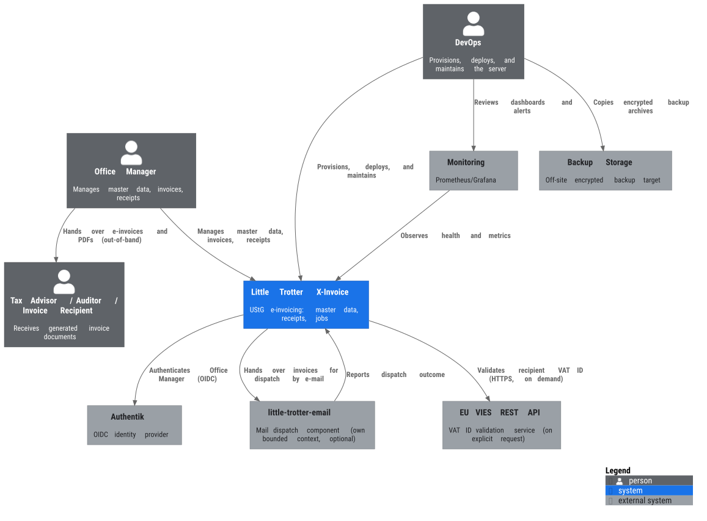
Legend: C4 Notation Reference
Canvas Views: Architecture Communication Canvas and Architecture Inception Canvas
| Neighbor | Role | Exchanged Artifacts |
|---|---|---|
Office Manager / Product Owner |
Person |
Master data, invoices, and receipts entered/reviewed via the web UI. |
Tax advisor / auditor, invoice recipients |
Person |
Generated e-invoice XML (X-Rechnung / ZUGFeRD) and PDF/A-3b documents. The invoicing application never sends them; where an instance runs the optional mail dispatch component, delivery is that component’s responsibility, otherwise documents are handed over out-of-band. |
Mail dispatch component ( |
Neighboring system — its own bounded context, deployed separately, optional per instance |
Receives one compose request per send (document family, reference key, recipient, placeholder values, presigned attachment links) and returns one dispatch result event. It owns the composed mail, the send journal, and the signed archive packages; this system only keeps the fact that a document was sent. |
Offer module ( |
Neighboring system — its own bounded context, deployed separately, optional per instance |
Creates, reviews and sends offers and records their acceptance or rejection on replicas of the invoicing master data. Hands an
explicit invoice order over as the event |
Mailbox / SMTP provider |
External system |
Accepts the submitted message and archives outgoing mail on the provider side. Reached only by the mail dispatch component — the invoicing application holds no SMTP credentials. |
Operator’s mail archive |
External system, operated by the business, optional per instance |
Receives a byte-identical copy of every dispatched invoice and quote mail by SMTP as an additional envelope recipient (journal copy, ADR-037); returns only the SMTP acceptance, which the mail component records as handover status. Reached only by the mail dispatch component. Archiving and retention stay with the operator (ADR-035). |
Authentik |
External system |
Identity provider for Office Manager login (OIDC, authorization code flow); the application never sees a password, only the resulting ID token. |
EU VIES REST API |
External system |
Official VAT information exchange system of the European Commission; queried on explicit demand ("VIES prüfen") to confirm foreign recipient VAT-IDs prior to tax-exempt cross-border invoicing (ADR-023). |
DevOps |
Person |
Reviews dashboards and alerts from the monitoring stack; provisions, deploys, and maintains the server (see Deployment View). |
Monitoring (Prometheus/Grafana) |
External system |
Scrapes application and infrastructure metrics, reviewed by DevOps; optional, operated via
|
Backup Storage |
External system |
Receives age-encrypted database and object-storage backup archives copied off-site by DevOps
(Phase 1 scripts under |
3.2. Technical Context
The table below is the technical view of the context: it has the same neighbors as the business context above and adds the channel, protocol and format behind every relationship. See Building Block View for how the system is composed inside those boundaries, from the container landscape (level 1) down to the components (level 2).
| Interface | Protocol | Direction | Purpose |
|---|---|---|---|
Browser → Caddy → application |
HTTPS |
Inbound |
Caddy terminates TLS in front of the Vaadin/Quarkus application ( |
Application ↔ PostgreSQL |
JDBC |
Bidirectional |
Primary relational persistence (master data, invoices, receipts, jobs), schema/seed managed by an editable Flyway baseline. |
Application ↔ RustFS |
S3 API |
Bidirectional |
Object storage (S3-compatible) for receipts and generated PDF/XML documents. |
Application ↔ NATS JetStream |
NATS |
Bidirectional |
Carries small job envelopes between the interactive app, the scheduler-driven job worker
( |
Application ↔ Valkey |
Redis protocol |
Bidirectional |
Cache and text-payload store (PDF/query cache, trip-workbook references) shared by the app and
the |
|
NATS / S3 API / Redis protocol |
Bidirectional |
Consumes generation jobs, renders PDF/A-3b via Typst, generates and validates ZUGFeRD/X-Rechnung XML (Mustang Project, embedded KoSIT validator), publishes results back. |
Application → Authentik |
OIDC (authorization code) |
Outbound |
Office Manager login: the application redirects to Authentik’s authorization endpoint and exchanges
the resulting code for tokens ( |
Application → EU VIES REST API |
HTTPS REST |
Outbound |
Explicit on-demand recipient VAT ID verification ( |
Monitoring (Prometheus/Grafana) → application and infrastructure |
Metrics scrape |
Inbound (pull) |
Optional stack that scrapes metrics from the application and infrastructure; not fronted by
Caddy, reached only via the internal |
Application → mail dispatch component |
HTTPS, |
Outbound |
The only call this system makes towards mail dispatch: hands over the values for one mail and receives a draft id plus the URL of the component’s compose view, which the browser opens. Internal-only, authenticated with an integration token, and used only while the feature is enabled for the instance. |
Mail dispatch component → application |
NATS JetStream, |
Inbound (event) |
The single return path: a fire-and-forget result envelope (journal id, reference key, status, message id, dispatch timestamp) projected onto the invoice as a "sent" flag. The component never calls into the invoicing application, so no service here has to be reachable for a mail to be sent. |
Application → offer module |
HTTPS, |
Outbound |
The invoicing application’s offer screens call the module’s REST API over the instance network with an integration token; Caddy answers 404 for it from outside. |
Offer module → application |
NATS JetStream, |
Inbound (event) |
Invoice order for an offer as a reference event (order id, offer reference, optional delivery date or service period); the application creates the invoice draft and answers with
|
Administration ( |
Operational scripts (Phase 1) / Go CLI & TUI ( |
Operational |
Staged DevOps tooling for server provisioning, deployment, database maintenance, and
age-encrypted backup/restore ( |
3.3. Bounded Context Relationship: Mail Dispatch
Little Trotter X-Invoice (Invoicing) and the mail dispatch component (kotlin-email) are
two separate bounded contexts related through a Published Language: kotlin-mail-contract
(de.littletrotter.shared.mail), a small, independently versioned module both sides depend on
instead of either depending on the other’s domain model. Neither context ever imports the other’s
own types; each translates the shared contract into its own local model at exactly one adapter
boundary — an Anti-Corruption Layer (ACL) on both sides.
-
Invoicing is upstream for the compose command: it calls
POST /mail/api/composewith aMailComposeRequest; the mail component’s ownacladapter package translates that into its localComposeMailCommand— the mail component never sees an Invoicing domain type. -
Mail dispatch is upstream for the result: it publishes one dispatch-result event per send attempt over NATS JetStream (
mail.send.result), which Invoicing’s own adapter translates into the "sent" flag it projects onto the invoice — Invoicing never sees a mail-journal row or template.
The relationship is therefore a bidirectional Published Language, not a single upstream/downstream
pair: each context is upstream for the one interaction it owns and downstream for the other. The
mail component is its own self-contained system with an independent release cycle (see
ADR-015 and the Self-Contained System glossary entry); Invoicing keeps functioning with
the feature switched off (LT_MAIL_ENABLED=false), and the compose call is the only synchronous
dependency it has on the mail component even while the feature is enabled.
3.3.1. Archive of the Operator as a Neighbor
The archive is a neighboring system of the mail dispatch component, not of the invoicing
application. After a mail is sent, the component delivers the same message bytes to the
configured archive address (envelope recipient, no header entry) and keeps the result in its
journal as MailArchiveHandoverStatus. Invoicing only reads that status through the shared
contract. The component’s signed archive package is an evidence artifact, not a copy that
replaces the operator’s archive.
3.4. Out of Scope
-
Peppol network transmission and transport channels outside the optional
kotlin-emailcontract. This system generates and stores invoices; mail composition and SMTP delivery remain in the separate mail system. -
Bookkeeping / general-ledger accounting.
-
Multi-tenancy — one operator per deployment.
4. Solution Strategy
4.1. Overview
The table below maps each of the six quality goals from Introduction and Goals, in the same order and under the same names, to the architectural approach chosen to meet it, consistent with the Architecture Communication Canvas.
| Quality Goal | Approach | Rationale |
|---|---|---|
Domain correctness |
EN 16931 domain model as a typed |
An invalid e-invoice is worse than none; the type system and validation pipeline make the invalid state unreachable rather than merely discouraged. |
Test coverage and quality gates |
A build-enforced JaCoCo gate (90/90, including the UI), mandatory linters, SonarQube plus
Gitleaks/Trivy, and independent E2E layers — Karibu component and monkey tests
( |
Automated, non-negotiable gates substitute for the manual review bandwidth a solo Product-Owner-plus-agents team lacks (quality despite AI-delegated development); each E2E layer catches a different failure class. |
Ergonomics (German UI, accessibility) |
Server-side Vaadin Flow UI in German with UStG-compliant wording (English as fallback locale); accessibility and dark-mode support are checked on every UI/color change. |
The primary user is a single Office Manager, not necessarily an IT specialist; one Kotlin toolchain and no separate frontend keep the UI consistent with the domain. |
Operability on small hardware |
Modulith ( |
No microservice mesh, no API gateway, no service discovery — the target is small-budget hardware, not a cloud cluster (ops minimalism). |
Traceability |
Explicit invoice state model with validation results kept per invoice; DevOps-operated database
and object-storage backups (Phase 1 scripts under |
State changes and validation results are reconstructable after the fact, for the Office Manager’s own bookkeeping and for a tax advisor’s or auditor’s review. |
Green IT (lean payload and storage) |
Receipts are reduced at upload and embedded exactly once in a produced e-invoice (Document Size Budget, ADR-032); small NATS envelopes keep payloads out of the messaging layer. |
Every copy of a receipt or generated document occupies hardware across the whole invoice chain for the retention period, so volume is kept lean at the source. |
4.1.1. Further Strategies
Strategies that serve several goals at once and therefore have no single quality-goal row.
| Topic | Approach | Rationale |
|---|---|---|
Robust messaging on small hardware |
NATS JetStream carries only small job envelopes; text payloads live in Valkey, PDFs and receipts in RustFS. |
Small message bodies keep NATS itself small and fast (128 MB budget) and avoid duplicating large payloads across redeliveries. |
Greenfield velocity |
The Flyway baseline migration is edited in place rather than accumulating incremental migrations; legacy/deprecated code is deleted outright. |
Avoids schema-migration archaeology and dead-code accumulation while the domain model is still settling. |
4.2. Technology Stack
The module pom.xml files and docker-compose.yml are authoritative; versions below move with
them. Given as major.minor (or the exact release where the version is itself architecturally
significant, e.g. a pinned validation/conformance engine).
| Layer | Technology | Version | Where |
|---|---|---|---|
Language |
Kotlin |
2.4.20 |
All modules ( |
Runtime |
Java (JDK) |
25 |
All modules ( |
Application framework |
Quarkus |
3.39.4 |
|
UI |
Vaadin Flow |
25.2.8 |
|
Database |
PostgreSQL |
18 |
|
Schema migration |
Flyway |
(Quarkus-managed) |
|
Messaging |
NATS JetStream |
2.14 |
|
Cache / text payloads |
Valkey (Redis-protocol) |
9.1 |
|
Object storage |
RustFS (S3-compatible) |
1.0.0 |
|
E-invoice XML generation + schema/Schematron validation |
Mustang Project |
2.26.0 |
|
EN 16931/X-Rechnung validation |
KoSIT |
1.6.3 |
|
PDF/A-3b conformance |
veraPDF (CLI, optional per deployment) |
1.30.2 |
|
PDF rendering (layout engine, ADR-030) |
Typst (CLI, subprocess; installed in the worker image by default) |
0.15.1 |
|
PDF manipulation |
Apache PDFBox |
3.0.8 |
|
GiroCode QR matrix (EPC069-12 v002) |
ZXing |
3.5.3 |
|
Schematron/XSLT engine |
Saxon-HE |
12.9 |
|
Excel export |
Apache POI ( |
5.5.1 |
|
JSON |
Jackson ( |
3.2.2 |
All modules |
Testing |
JUnit Jupiter |
6.1.3 |
All modules |
Component testing |
Karibu-Testing |
2.7.3 |
|
Architecture tests |
ArchUnit |
1.5.0 |
One CycloneDX document ( |
Integration testing |
Testcontainers |
2.0.5 |
|
Metrics |
Micrometer + Prometheus registry |
(Quarkus-managed) |
|
Coverage gate |
JaCoCo |
0.8.15 |
All modules, aggregated by |
CI orchestration |
Dagger |
0.15.1 |
|
SBOM |
CycloneDX Maven plugin |
2.9.3 |
|
4.3. Architectural Approach
-
Modulith, not microservices —
kotlin-invoiceis a single deployable Quarkus/Vaadin application organized internally by package (ui,application,domain,infrastructure,spi; see Building Block View) with explicit, enforced module boundaries rather than an undifferentiated codebase. The renderer/worker (kotlin-xpdf) and the job worker (same artifact, different Quarkus profile) are the only other JVM services within this same self-contained system, split out because rendering and scheduled re-publishing benefit from running outside the request-handling JVM. A capability with its own release cycle and no shared internals becomes its own self-contained system instead, as mail dispatch does (ADR-015). -
Hexagonal-leaning layering inside the app —
domaindefines repository ports (de.littletrotter.domain.repository.*);infrastructure.persistenceprovides the Panache/JPA adapters (e.g.PanacheReceiptRepository);applicationorchestrates use cases;uionly talks toapplication. -
Server-side UI, no separate frontend build — Vaadin Flow keeps the UI in Kotlin alongside the domain, avoiding a second toolchain and a REST/GraphQL API surface for a single-operator browser UI.
-
Asynchronous document generation — PDF/XML generation is never inline with a user request; it is queued as a
GenerationJob, delegated over NATS, and pushed back to the UI (Vaadin push) when the renderer finishes, keeping request latency independent of rendering time. -
Shared types, not duplicated logic —
kotlin-sharedcompiles into bothkotlin-invoiceandkotlin-xpdf(B2B/EN 16931 terms,Money, NATS stream setup, payload contracts), so both processes agree on wire formats without a runtime dependency between them. -
Test projects as first-class citizens — every test-pyramid layer is its own project (
kotlin-e2e-tests,coverage-reportin this reactor;e2e-test-playwrightin the siblinglittle-trotter-admin-toolsrepository); see Building Block View.
4.4. Correctness Strategy
-
Typed B2B terms —
B2bTerm(kotlin-shared) models every EN 16931 business term as an enum constant carrying its BT number, binding kind, and value-domain metadata; invariants (e.g. aFREEbinding requires an xpath) are enforced ininitand unit-tested against invalid input. -
Multi-stage validation before issuance — generated ZUGFeRD/X-Rechnung XML passes XSD schema validation, EN 16931 Schematron rules, and the embedded KoSIT validator (Mustang Project library,
kotlin-xpdf); optional veraPDF (PDF/A-3b) and LLM-based checks can be enabled per deployment. -
Money as a value type — monetary amounts use a dedicated
Moneytype (kotlin-shared); rawBigDecimalis reserved for quantities and factors. -
Enums as integer codes — every enumeration is persisted through a JPA attribute converter to a small integer column, never
EnumType.STRINGor a free-text code, so an invalid value cannot silently enter the database as a string that happens to look right.
4.5. Quality Assurance Strategy
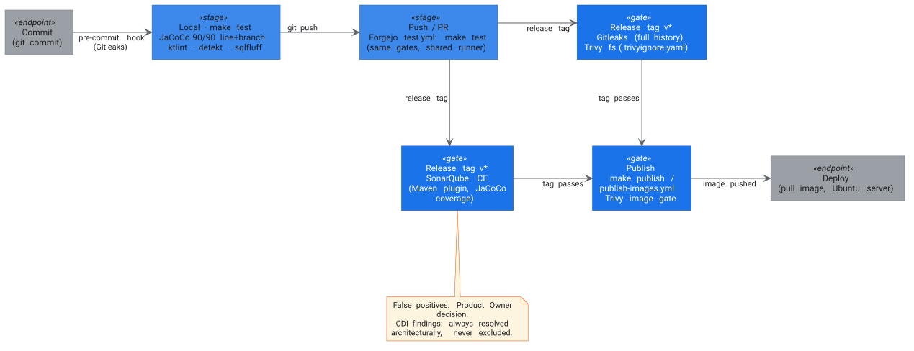
-
Coverage gate — an aggregated JaCoCo bundle check (
coverage-report,report-aggregate) enforces 90% line and 90% branch coverage across every module including the UI, combining unit, integration, and E2E exec data into one report so no layer under-counts the others' coverage. -
Mandatory linters — ktlint, detekt, and sqlfluff (for migrations) run as Maven build-gate executions (
make test), not optional CI steps; a missing linter binary fails the build preflight rather than silently skipping the gate. -
Static analysis — SonarQube Community Edition analyzes compiled bytecode via the Maven scanner plugin against the LAN instance, fed by the same JaCoCo coverage data, and runs on release tags and manual dispatch (
.forgejo/workflows/cicd.yml); false positives are a Product Owner decision, never a blanket exclusion (CDI findings in particular are always resolved architecturally, e.g. via constructor injection, never excluded). -
Security gates — Gitleaks scans staged changes on every commit (pre-commit hook installed by
make hooks) and the full git history on release tags in CI; Trivy scans the checkout’s dependencies and Dockerfile/compose configuration (trivy fs,.trivyignore.yaml) on the same release-tag job, then gates every container image again before it is pushed (make publish,.github/workflows/publish-images.yml). -
Layered E2E strategy — Karibu-based component tests (
kotlin-e2e-tests) exercise Vaadin views without a browser; the same project’s Karibu-based monkey tests (taggedmonkey) generate randomized interaction sequences to surface robustness issues the scripted suites do not anticipate; Playwright drives a real browser against an isolated compose stack from the siblinglittle-trotter-admin-toolsrepository. See Building Block View for how each is invoked.
5. Building Block View
This chapter presents the system in hierarchical layers: the runtime containers (Level 1), the components within the main application (Level 2), the cross-cutting types used by multiple modules, and the test and tooling projects that enforce quality gates.
5.1. Level 1: Container Landscape
The diagram and table below cover the services declared in the root docker-compose.yml
(profile core). arc42’s "Level 1" here corresponds to the container level of Simon Brown’s C4
model — C4’s own "Level 1" is the system context, covered in
System Scope and Context.
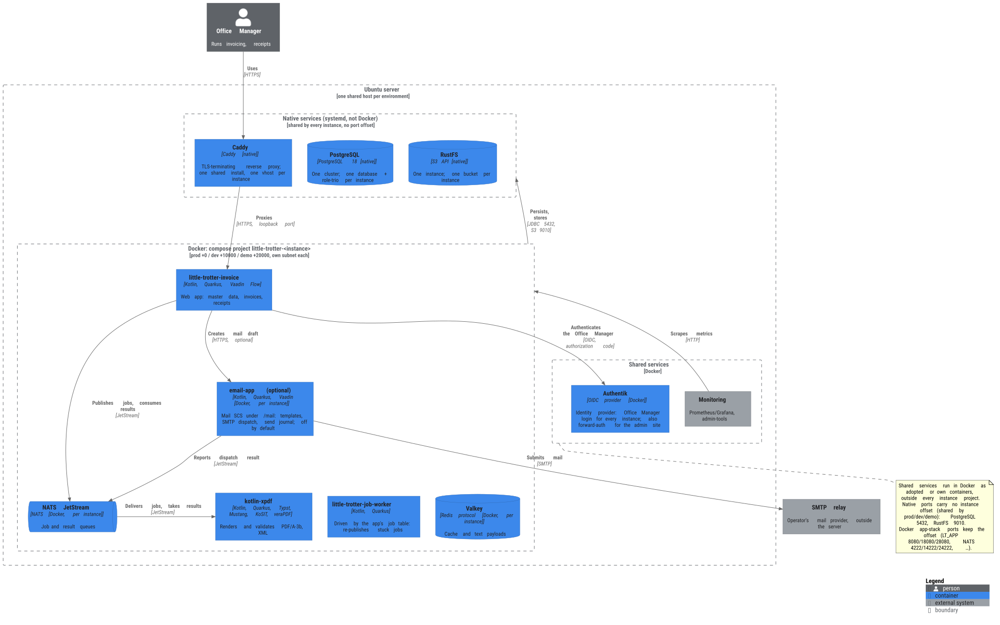
The diagram reflects the Ubuntu-server target, not "one Docker host": PostgreSQL, RustFS and
Caddy run natively under systemd, shared by every instance on the box, while the application
layer (little-trotter-invoice, little-trotter-job-worker, kotlin-xpdf, NATS JetStream,
Valkey, plus the optional email-app of the mail component) is Docker Compose, one project per
instance (prod/dev/demo). One aggregated
dependency edge stands for the many application-to-infrastructure connections; the per-container
protocol (JDBC, S3 API, NATS, Redis protocol) is the detail level the table below carries.
Authentik and monitoring are drawn once, as shared, cross-cutting Docker services outside every
instance project: Authentik is the OIDC identity provider every Office Manager logs in through (the
web app is a Quarkus OIDC web-app client), and additionally the forward-auth gate of the
server’s admin site.
The dedicated single-instance variant (small-budget hardware — a mini PC or another standalone
host, no instance model) instead runs the whole stack — Postgres, RustFS, Caddy included — as
Docker containers from this repository’s own docker-compose.yml; see
Deployment View for that variant’s own table.
| Container | Technology | Runtime on the server | Responsibility + Interfaces |
|---|---|---|---|
|
Kotlin, Quarkus, Vaadin Flow |
Docker, per instance |
Interactive web application: master data, invoice lifecycle, receipts, and statistics. Reads/writes PostgreSQL over JDBC, reads/writes RustFS over the S3 API, publishes generation-job envelopes to and consumes results from NATS JetStream, and uses Valkey for caching and text payloads. Behind Caddy; the only container reachable from a browser. |
|
Kotlin, Quarkus |
Docker, per instance |
Scheduler-driven job worker — the same build artifact as |
|
Kotlin, Quarkus |
Docker, per instance |
Renderer/worker service: PDF/A-3b rendering through |
PostgreSQL |
PostgreSQL 18 |
Native (systemd), shared by every instance |
Primary relational store for master data, invoices, receipts, and generation jobs. One cluster
per server; one database and one role-trio ( |
RustFS |
RustFS (S3-compatible) |
Native (systemd), shared by every instance |
Object storage for receipts and generated PDF/XML documents; one bucket per instance
( |
NATS JetStream |
NATS 2.x |
Docker, per instance |
Message bus carrying only small job envelopes between |
Valkey |
Valkey (Redis-protocol) |
Docker, per instance |
Cache and text-payload store shared by |
Caddy |
Caddy |
Native (systemd), shared by every instance |
TLS-terminating reverse proxy — the stack’s only externally exposed service (ports 80/443). One
shared installation generates one vhost per instance ( |
Why Postgres and RustFS are native, and Valkey stays in Docker. PostgreSQL and RustFS are shared, stateful services used by every instance on the box — running three separate clusters or object stores in Docker volumes would triple the memory/disk footprint for per-instance data, complicate backups (one sweep per instance instead of one shared cluster), and keep the data inside Docker’s storage driver instead of the filesystem it is easier to back up and migrate from. Caddy is native for the same reason: one systemd install serves every instance’s vhost instead of three TLS-terminating containers fighting over ports 80/443. Valkey, by contrast, is a deliberately disposable cache — losing it costs a warm-up, never data — so it stays in Docker, one instance per compose project, matching the lifecycle of the application it caches for.
5.2. Mail Dispatch — a Separate Self-Contained System (kotlin-email)
E-mail dispatch is its own bounded context, developed as the module kotlin-email of this
repository (artifact little-trotter-email) and deployed as its own image per instance, optional and
off by default; its only code dependencies are kotlin-mail-contract (the frozen published
language both sides map in their own adapters) and kotlin-shared.
It owns the mail templates, the append-only send journal and SMTP submission, and is headless: it
serves only a REST API, while the mail views live in the invoicing application (see
Mail UI in the Invoicing Application). This system hands it values to compose a
mail and receives back only a result event, projected onto two read-only columns on the invoice —
it holds no Invoice entity, no database access, and no key into this component’s data. See
ADR-015.
| Module | Responsibility |
|---|---|
|
Template and journal domain, versioning, placeholder rendering; plain Kotlin with JPA annotations. |
|
Application core and adapters: |
|
The one deployable: |
|
Full-stack tests against |
Delivery state. The component is part of the repository but not of the end-user delivery: the
delivered configuration runs without the email-app image and without the mail schema. The
deployment switch MAIL_ENABLED (mail.enabled, default false) controls it. While it is off, the
HTTP dispatch adapter is not instantiated, the mail-result NATS consumer binds no subscription, the
mail entry in the navigation drawer and the send action on the invoice are absent, and the mail card
in the settings shows "not installed". The independent per-instance offer flag is described in
Feature Switches.
Inside kotlin-email, its REST and NATS adapters reach the application layer only through
dedicated input ports in de.littletrotter.email.service.application.port.inbound
(ADR-027) — one *QueryPort/*UseCase per use case, its own CommandEntryPoint
marker (the component does not import the one kotlin-invoice uses), and entity-free read models
(MailTemplateView, MailJournalEntryView) in place of the JPA-backed MailTemplate/MailJournal
entities:
| Interface (input port) | Purpose | Consumer (adapter caller) |
|---|---|---|
|
Stage a compose draft, look it up, mark it consumed after send |
|
|
Enqueue a dispatch; rebuild and re-enqueue a failed one |
|
|
Consume a send-requested envelope and run the actual SMTP dispatch |
|
|
Sign and store the archive package for a sent mail; repair a failed one |
|
|
Read send history |
|
|
List/save/reset a template version; test its Bcc address |
|
|
Render a template against sample placeholder values |
|
|
Onboarding SMTP probe, never written to the journal |
|
EmailInputPortArchitectureTest enforces the cut (naming, no composite ports, adapters never
depend on a concrete application service or on email.core.repository.. directly).
5.2.1. Mail UI in the Invoicing Application
The mail views are Vaadin Flow routes of kotlin-invoice, not part of the component:
| Route | View | Purpose |
|---|---|---|
|
|
Review and send a staged compose draft; the draft is consumed only when the send is queued. |
|
|
Send journal with server-side filter, sort and paging, status chips, URL state, row details, Excel export, retry and re-archive. |
|
|
Template list, editing with preview and Bcc test, version history, reset. |
RouteAccess gates them with the AppPermission`s `MAIL_COMPOSE_AND_SEND, MAIL_JOURNAL_VIEW
and MAIL_TEMPLATE_EDIT. The views inject only narrow input ports in
application.mail.port.inbound (one role interface per use case, no composites). Query ports read
through outbound ports; command ports run through application services and outbound ports such as
MailDeliveryPort, MailTemplateWritePort and MailJournalActionPort, plus the template reset
and Bcc-test ports. The outbound ports are implemented by HTTP adapters in infrastructure.mail,
which call /mail/api/* and translate the contract types in their acl package.
5.2.2. Quote Module Interfaces to the Invoicing Application
The quote module (kotlin-quote, optional package) is a self-contained system next to the mail
component, built from quote-core (domain without framework), quote-service (application
layer, adapters, Flyway baseline) and quote-app (the Quarkus deployable, REST under /quote/api/*;
the screens are Flow routes of the invoicing application). The aggregate Quote runs through the
single status DRAFT, REVIEW, SENT, ACCEPTED, REJECTED or CANCELLED: DRAFT →
REVIEW/CANCELLED; REVIEW → SENT/DRAFT (return with a note)/CANCELLED; SENT →
ACCEPTED/REJECTED (a reason is required); ACCEPTED, REJECTED and CANCELLED are terminal. An invoice order (table quote.quote_invoice_order, status REQUESTED/CREATED/REJECTED, at most one open or created order per offer) is allowed from SENT (acceptance is recorded implicitly) and ACCEPTED; acceptance alone creates no invoice. The content is editable only
in DRAFT, the number is assigned on entering REVIEW. There is no second outcome attribute, no
derived expiry and no revision; the validity date is a document field on the PDF. That an invoice was created
from an offer is recorded on the order and in the protocol, never as a status: the reply event
invoice.created-from-quote completes the order and leaves the offer ACCEPTED. See ADR-036. Every use case has its own inbound port in
application.quote.port.inbound; the module publishes through an outbox relay.
Offer statistics end at "sent": an offer in SENT, ACCEPTED or REJECTED counts as
sent. There is no win rate, no rejection-reason statistic and no offer-to-invoice figure. The only
schema addition is quote.quote.sent_on (DATE), set on REVIEW → SENT from the actor
timestamp of the time source and kept through the later statuses; check constraints require it
exactly for these four statuses and sent_on >= quote_date, and the index
idx_quote_date (quote_date) INCLUDE (status) serves the period filter. The blocks:
| Block | Responsibility |
|---|---|
|
Pure value objects |
|
Read models |
|
|
|
Narrow input ports for the dashboard and the ranking, HTTP adapters and an anti-corruption layer
that maps the contract views. |
The quote module keeps its own schema quote. It receives master
data through replica tables fed by NATS events masterdata.> and the snapshot. Besides the existing
replicas it holds number_range_replica, the definition of the quote number (prefix, date part,
counter width, reset cycle); only number ranges with the subject QUOTE are replicated. The counter
itself is quote.quote_number_range per (range_code, period_key)
(ADR-033).
The quote settings (validity in days, XML format) stay in quote.quote_setting. Their user
interface is the card "Angebot" of the settings page in kotlin-invoice, shown only when the quote
module is deployed; it reaches the settings through the input ports QuoteSettingsQueryPort and
UpdateQuoteSettingsUseCase.
5.3. Library Modules
Besides the two JVM processes of the invoicing system and the mail component, the reactor carries seven library modules that are never deployed on their own:
| Module | Responsibility + consumers |
|---|---|
|
Neutral cross-cutting types ( |
|
Published language between invoicing and mail dispatch (package |
|
Published language of the offer-to-invoice hand-over (package |
|
UBL Quotation writer with XSD and Schematron validation, used by |
|
Vaadin component jar without Quarkus/CDI of its own, shared by host applications; first tenant is the free-text editor with its chip row. |
|
Engine client and validation stages used by |
|
Shared ArchUnit rules (first: the time rules of ADR-029) that every module checks its own production classes against; test scope only, enforced by the root POM (ADR-038). |
5.3.1. kotlin-shared — Cross-Cutting Building Block
kotlin-shared is a compiled dependency of both little-trotter-invoice and kotlin-xpdf (not
a deployable container in its own right); it is what lets the two JVM processes agree on wire
formats and domain vocabulary without depending on each other directly.
| Area | Contents |
|---|---|
B2B / EN 16931 terms ( |
|
Shared value types |
|
Receipt size subdomain ( |
|
Messaging contracts |
Connection/stream setup and payload-reference types used by the NATS producers and consumers (see Messaging). |
Mail dispatch contract ( |
The published language between this system and the mail dispatch context — compose requests, placeholder values, the send-result event. Contracts only, no entities or domain logic; each side maps at its own adapter. See ADR-016. |
DTOs shared across the wire |
Invoice, party, receipt, and B2B-value DTOs used across the UI and export layers. |
Document/validation ports |
Ports for object storage and for PDF/XML/KoSIT/veraPDF/LLM validation, implemented differently
by |
5.3.2. kotlin-facturx — Factur-X Client/Validation Library
kotlin-facturx is a compiled dependency of kotlin-xpdf (not a deployable container in its own
right, same relationship kotlin-shared has to both JVM processes above): the client for the
separate facturx-engine HTTP container, its DTO mapping, and the local Schematron/BR-FR-CTC
validation stages that run in-process. Everything that remains once the actual document
generation has been delegated out to facturx-engine — a natural module boundary, unlike the
in-process Mustang CII exporter, which stays part of kotlin-xpdf itself
(de.littletrotter.xpdf.impl.mustang).
Status. The Mustang/CII route (ZUGFeRD, XRechnung) is the developed one. The Factur-X engine route and the French-market rules (BR-FR-CTC, SIRET) are on standby: kept in the code, not developed further.
| Area | Contents |
|---|---|
Engine port + HTTP adapter |
|
DTO mapping |
|
Local validation stages |
|
Response mapping |
|
Three of these classes (HttpFacturXEngineClient, FacturXSchematronValidator,
BrFrCtcValidator) are plain classes rather than @ApplicationScoped CDI beans. Quarkus’s
build-time ArC bean discovery does not find an @ApplicationScoped bean declared in a
dependency module the way it finds one in the consuming module’s own Jandex index — verified
live, not assumed. kotlin-facturx therefore carries plain, CDI-unaware classes (the same shape
kotlin-shared’s own `AbstractS3DocumentStore uses), and
kotlin-xpdf owns three small @ApplicationScoped CDI producer beans
(FacturXEngineProducer, FacturXSchematronValidatorProducer, BrFrCtcValidatorProducer) that
read config and construct the real instances.
5.4. Test and Tooling Projects
The test and tooling projects are first-class building blocks. This repository ships the product
and the test layers that exercise it without a browser; the browser-driven E2E suite, the
load/monkey tooling, and the DevOps tooling live in the sibling, private
little-trotter-admin-tools repository, checked out alongside this one. Each project below is
its own Maven project with its own invocation, feeding a specific quality gate (see
Solution Strategy).
| Project | Purpose | Invocation + Quality Gate |
|---|---|---|
|
Kotlin system/integration E2E tests exercising real flows across module boundaries against a real database and, where relevant, S3 — without a browser. Also carries a Karibu-based monkey suite: bounded, seeded random walks over the real Vaadin view tree, driven headlessly. |
Part of the Maven reactor ( |
|
Full-stack and Playwright tests of the mail component against its deployable |
Part of the reactor while the mail profile is active (default); outside the coverage aggregate,
the graded production code is |
|
Aggregates JaCoCo exec data from every module into one project-wide report, so coverage is measured once across unit, integration, and E2E tests. |
Runs last in the Maven reactor; enforces the 90% line / 90% branch bundle gate that |
|
Browser-driven system E2E covering the full stack through a real UI. Reads this application’s i18n texts at runtime rather than from this source tree, so neither repository depends on the other at compile time or by path. |
Invoked from the sibling repository ( |
|
DevOps tooling and operations management following a staged rollout: Phase 1 lightweight shell
automation and reference configurations (MVP until Q4/2027); Phase 2 consolidated Go CLI suite ( |
Invoked from the sibling repository; has its own test suites outside this repository’s JVM coverage gate. |
5.5. Level 2: Components of little-trotter-invoice
The component view below reflects the top-level packages under
kotlin-invoice/src/main/kotlin/de/littletrotter/.
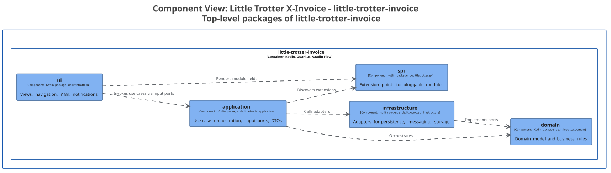
| Component | Package | Responsibility |
|---|---|---|
UI |
|
Vaadin Flow views, reusable UI components (e.g. |
Application |
|
Use-case orchestration and DTO mapping across invoice lifecycle, master/reference data,
compliance, messaging, and caching. Exposes one input port per use case in
|
Domain |
|
Domain model and business rules, independent of persistence/messaging technology; holds the
repository ports that |
Infrastructure |
|
Adapters implementing the domain’s repository ports: persistence (Panache/JPA), messaging (NATS
producer/consumer), storage (S3/RustFS), cache (Valkey), EU VAT-ID verification ( |
SPI |
|
Extension points for module-specific behavior — form fields, master-data extensions, and
party-identifier contracts — used across |
5.6. Domain Model
The containers and components above say where code runs, not what the domain is made of. The
domain model lives in the Quarkus application as JPA entities under
de.littletrotter.domain in kotlin-invoice; the database is only the storage behind it. The
diagram shows the core invoicing cluster — the eleven entity classes an invoice actually touches,
out of roughly 48 — with their Kotlin attribute types (Money, InvoiceNumber, enums) and the
associations as declared in code. Child rows (addresses, party snapshots, documents, tax
variants), the B2B field catalog, the per-diem rate catalog, the compliance log and system
messaging are left out on purpose: they add nodes without changing the picture. A business trip’s
own children (TripExpense, TravelExpenseEntry, ADR-021) are the one exception,
included because they are the shape of a whole invoice position, not incidental detail.
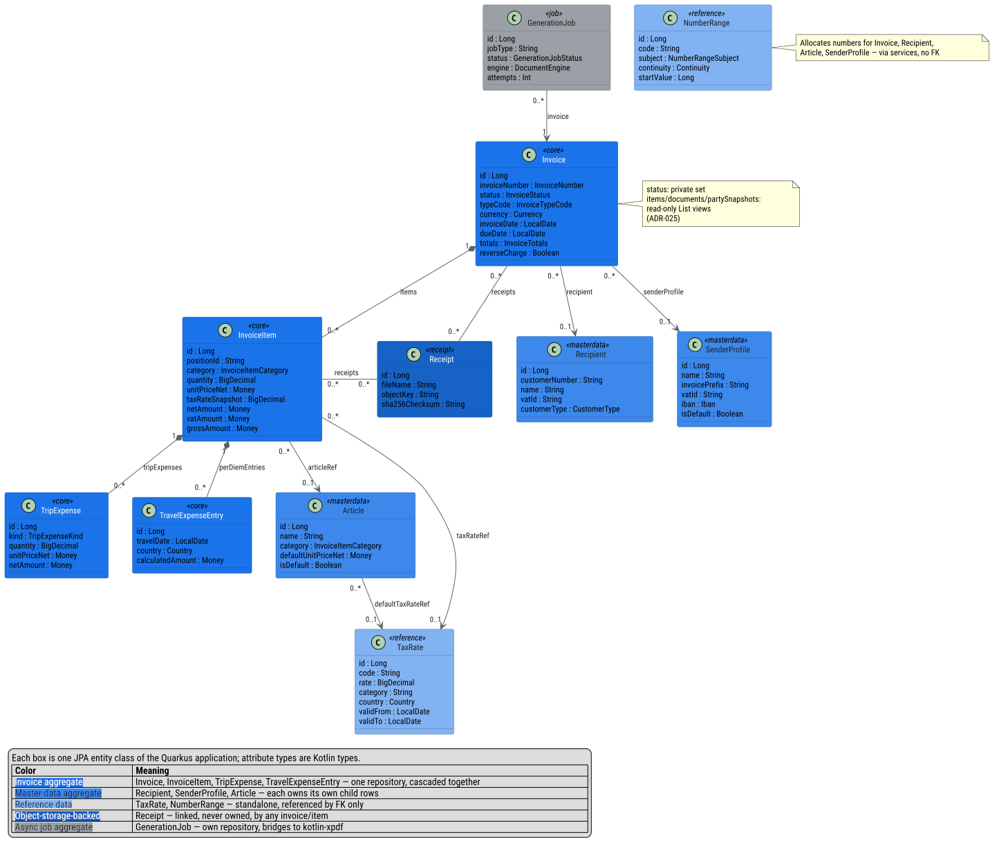
| Entity | Responsibility | Key invariants (enforced in code) |
|---|---|---|
|
The billing document: header data, the three monetary totals, lifecycle status, one currency shared with every item. |
The invoice number is assigned at the |
|
One billed position: quantity × net unit price plus VAT, optionally created from a catalogue item
( |
The tax snapshot (rule code, category, rate, exemption reason) is frozen once and never rewritten after the invoice is read-only; quantity is never negative — a rebate carries its sign in the unit price; position ids are never reused after a deletion. |
|
One expense line (hotel, transport, mileage, taxi, other) of a |
Only ever created under an |
|
One per-diem day of a |
Only ever created under an |
|
An invoice recipient (master data). |
Recipient number, name and e-mail are mandatory; the VAT ID is mandatory unless the recipient is a consumer; the short hash is assigned once. |
|
An invoice issuer identity the Office Manager issues invoices under — usually one, several are possible. |
Name, invoice prefix, e-mail, tax number, VAT id and IBAN are mandatory; the invoice prefix is unique; at most one profile is the default. |
|
A catalogue position (material, service, unit price) a billed position can be created from. |
Name mandatory, default quantity positive, default price not negative; at most one default; a position keeps its own copied price and tax snapshot when the catalogue item changes later. |
|
A VAT rule: rate plus EN 16931 category and validity window. |
Rate within 0–100; the category constrains the row ( |
|
An uploaded document, content-addressed by its SHA-256 checksum, stored in RustFS. |
Object key and checksum are unique; a receipt is never owned by an invoice — it is linked to
invoices and positions and managed on its own. Every field (description, Belegdatum, file
name, object key, checksum, size) becomes immutable once any linked invoice is issued
( |
|
Reference data for how invoice, recipient, catalogue and issuer numbers are formatted and allocated. |
A gapless range allocates in the same transaction as the document it numbers; a yearly reset requires a date part in the format; nothing references a number range — application services mediate it. |
|
One PDF/e-invoice rendering attempt, tracked across the NATS round trip to |
Status changes only along the job state machine’s legal edges; attempts are capped before a job is failed for good; the rendering engine is snapshotted per job. |
5.6.1. Aggregates at a Glance
| Aggregate root | Owns (saved and deleted together) | References by id only | Repository |
|---|---|---|---|
|
|
|
|
|
|
— |
|
|
|
— |
|
|
Tax variants, recipient references |
|
|
|
— (content-addressed file, independent of every invoice) |
— |
|
|
— (stand-alone reference data) |
— |
reference-data services |
|
— |
|
|
5.7. Excel Export
de.littletrotter.infrastructure.export.workbook (kotlin-invoice only) turns invoice data into
a real .xlsx so an accountant can independently recompute the totals: every money cell stays
numeric and every control column is a genuine formula, not a pre-rendered string. See
ADR-018 for the choice of Apache POI’s streaming writer.
| Component | Role |
|---|---|
|
Generic streaming layer ( |
|
One cached style per format, embedding the currency’s ISO code in the cell’s own number format so the cell stays summable. |
|
Domain-specific sheet content — header, positions, and change journal — each recomputing its own control/Δ columns independently. |
|
The dedicated read side for the export, a scalar-tuple projection rather than the aggregate. See Persistence. |
|
The application-layer port — one invoice with its change journal, or a filtered set without — and its POI-aware implementation. |
5.8. Key Interfaces
| Interface | Kind | Purpose | Consumer |
|---|---|---|---|
|
NATS JetStream |
Carries generation-job envelopes to |
|
|
NATS JetStream |
Terminal destination for a job envelope after its retry budget (max-attempts=5) is exhausted. |
Operators |
|
S3 API (RustFS) |
Object storage for receipts and generated PDF/A-3b + XML documents. |
|
Valkey databases 1/2 ( |
Redis protocol |
Text-payload store for job envelopes and receipt-checksum fast path (db 1), PDF/query cache (db 2). |
|
|
Internal REST (mail dispatch component) |
The one synchronous call from |
|
|
NATS JetStream |
Both streams belong to the mail dispatch component. |
Mail dispatch component; |
|
Internal REST ( |
Used by the job-consumption path inside |
|
6. Runtime View
The scenarios below are the load-bearing runtime paths of the system, each presented as one sequence diagram per use case, kept at container level rather than at class level. The concrete classes, NATS subjects, and infrastructure-level guarantees behind each queue hop are covered once in Messaging; this chapter cross-references that section instead of repeating it. See Building Block View for the containers and components involved.
6.1. Save Invoice Header and B2B Values
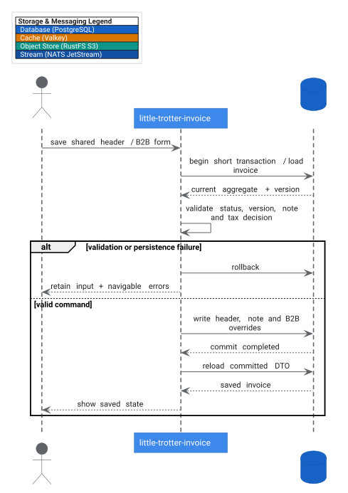
The standard and guided entry views use the same bound fields and submit one
UpdateInvoiceHeaderCommand. InvoiceHeaderUpdateService.updateHeader verifies status and
version, applies the invoice-owned note snapshot and its provenance, merges previously
unmapped B2B header values into editable free text once, and evaluates a submitted tax
decision. Invoice fields and B2B overrides commit in the same PostgreSQL transaction.
A failed validation or write rolls back the entire command; the UI retains its input and
shows navigable field errors. The EditInvoiceHeaderUseCase implementation reloads the DTO
after the transactional call returns, before the UI reports success. PDF/XML read the saved
note, not a live provider note.
Invoice unit labels use the unit catalogue’s explicit translation keys rather than derived enum names. German is the default and English is selectable. Persistence and XML keep their ordinal/UN-ECE contracts; user-facing labels and validation arguments are localized at the presentation boundary. Category wording remains a separate industry-profile concern.
6.2. Generate E-Invoice
Generating a PDF/A-3b or ZUGFeRD/XRechnung XML document is asynchronous: the Office Manager requests
generation via the UI, GenerationJobCreationService.createJob() validates invoice state (VOIDED
rejected, except for a REPRODUCTION job, which the document recovery requests only after the stored
original, an identical copy in the store and the mail journal all came up empty; it renders the frozen
state again and changes no invoice data), stores a GenerationJob in PENDING, and returns immediately.
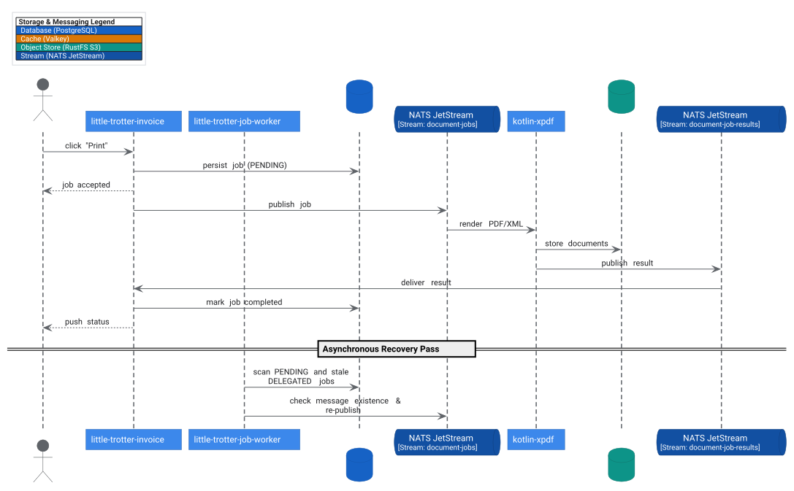
The job is dispatched via NATS JetStream to kotlin-xpdf, which renders documents via Typst and
Mustang Project (embedded KoSIT validator) and stores them in RustFS. The result queue notifies
little-trotter-invoice: the job is marked terminal (COMPLETED/FAILED) and UI status chips
update via Vaadin server push (with a fallback poll tick).
Job lanes: every GenerationJob carries a lane (generation_job.job_lane, INTERACTIVE or BULK) that createJob receives as a required parameter and that never changes afterwards. Interactive: a user waits in the UI (send, print, credit note issued from the UI). Bulk: import, regeneration, reproduction, scheduled and admin sweeps, quote documents.
| Aspect | Bulk lane | Interactive lane |
|---|---|---|
Subject |
|
|
Durable consumer (kotlin-xpdf) |
|
|
Worker threads |
|
|
Dispatch bulkhead |
|
|
Fast-path publish |
shared managed executor |
dedicated small executor |
Both subjects live in the stream LITTLE_TROTTER_JOBS; results use the shared subject document-job-results. The pending-job poller orders interactive jobs before bulk jobs, then by creation time. Recovery and republish use the stored lane.
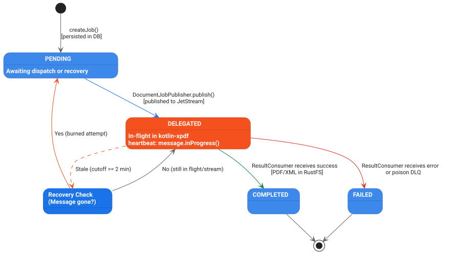
Robustness & Recovery Principles:
-
Lease Heartbeat:
kotlin-xpdf’s pull consumer leases each job (`ackWaitSeconds = 120s) and sends periodic heartbeats (ackWaitSeconds / 3). -
Durable Recovery Scan: The worker scans hourly (
invoice.jobs.recovery-interval) and on startup. It resets staleDELEGATEDjobs (staleCutoffMinutes = 2) back toPENDINGonly if their message actually vanished from the stream, burning one attempt. -
Dispatch Gate:
DocumentJobDispatchGateapplies a@Bulkhead(invoice.generation.bulkhead.max-concurrent-calls) to bound concurrent bulk dispatches against memory limits. Interactive dispatches use a separate bulkhead (invoice.generation.interactive-bulkhead.max-concurrent-calls, default 4), so concurrent bulk dispatches cannot reject them. A durable database state ensures resilience without in-process retry.
6.3. Finalize an Invoice
Reaching SENT is never a direct, synchronous status change — it is always the result of a
successfully completed, SEND-triggered GenerationJob. "Finalize" (the Festschreiben action in
status IN_REVIEW) only requests that job
(InvoiceSendService.requestSend, itself a thin wrapper over
GenerationJobCreationService.createJob with trigger = SEND) and returns
immediately; the invoice stays IN_REVIEW while the job is in flight (visible via the job’s own
GenerationJobStatus, not a new invoice status — see
Invoice Lifecycle State Machine).
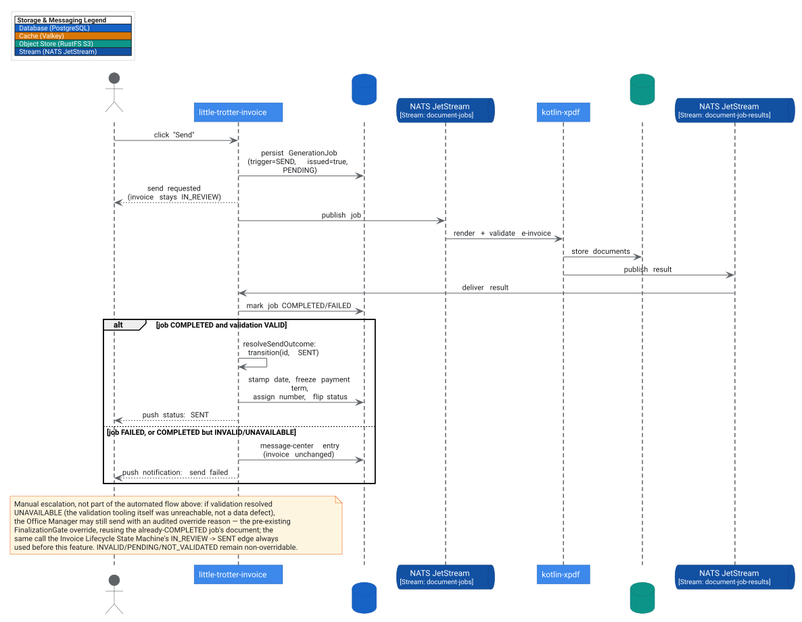
The job travels the same queue pipeline as Generate E-Invoice above. What
differs is what happens on result delivery: GenerationJobResultConsumer calls
GenerationJobResultHandler.resolveSendOutcome as a plain, synchronous, sequential continuation right
after its own markCompleted/markFailed call — the arrival of the worker’s result is the
trigger, so no polling and no extra @Scheduled bean exist anywhere in this path (see
Green IT Principles). resolveSendOutcome reads the job’s already-merged
KoSIT report directly; only a VALID outcome calls InvoiceLifecycleService.transition(id, SENT)
— still the single place that stamps the invoice date, freezes
the payment-term snapshot, and runs the Finalization Gate. A FAILED job
or a COMPLETED job that resolves INVALID/UNAVAILABLE leaves the invoice untouched and records
a message-center entry instead; a retry always creates a fresh SEND job.
After validation the status transition to SENT commits. SendTransitionRunner publishes an
InvoiceStatusChangedEvent only after that commit, so an open cockpit refreshes within a second; the
5-second poll remains the fallback. The cockpit never reacts to a status that is not yet persisted.
The one exception stays synchronous and manual: an Office
Manager can override a VALIDATION_UNAVAILABLE outcome with an audited reason, calling
InvoiceLifecycleService.transition(id, SENT, overrideReason) directly — the Finalization Gate
escalation, reached from its own explicit UI action rather than the "Send"
button. INVALID/PENDING/NOT_VALIDATED remain non-overridable.
The SEND-triggered job always becomes the invoice’s issued document
(GenerationJob.issued = true, set regardless of the invoice’s IN_REVIEW status at the moment
the job is created — a deliberate, documented exception to the rule every other job creation
follows) and is protected by the same single-generation rule as any other issued job once it
completes.
6.4. Open the Invoice E-Mail Editor
The editor opens only on an explicit click on E-Mail senden in status SENT. There is no automatic
navigation after job completion. The button is gated by one server-side rule, MailSendGate, with the
reasons: job in flight, not issued, validation not passed, document missing, reproduced copy, recipient
without e-mail address. The readiness query and the mail handover both evaluate this same rule, so the
UI and the handover can never disagree.
InvoiceMailDispatchService.compose runs without a database transaction. It calls
InvoiceMailComposeTransactions.prepare, a short @Transactional read of the invoice, its latest
issued document and the presigned attachment URLs. The synchronous HTTP handover to the mail
component (POST /mail/api/compose) follows with no open database transaction; the UI then
navigates to mail/compose/{draftId}. Opening the editor does not use NATS — the streams
LITTLE_TROTTER_MAIL and LITTLE_TROTTER_MAIL_RESULT carry only sending and results.
The result is MailComposeResult, either Ready(handover) or DocumentPending:
-
DocumentPending: an issued, non-failed generation job exists but has no completed, checksummed document yet. The send action creates its job in the interactive lane, so the document is normally ready within the QS-14 limit even while bulk jobs are queued (Generate E-Invoice). -
No issued job, or only failed jobs:
MailDispatchException. -
Reproduced documents stay blocked (
ReproductionNotSendableException).
InvoiceMailReadinessQueryPort.readiness(invoiceId) (implemented by InvoiceMailReadinessService)
returns a MailSendGate value: READY or the first violated condition in priority order. The gate result drives the
button state and its tooltip; the job-finished push and the 5 s poll only refresh the view and do not
open the editor. The quote send path (QuoteDispatchHandlers in kotlin-quote) follows the same pattern: QuoteSendGateQueryPort.gate(quoteId) evaluates one pure rule (READY, NOT_IN_REVIEW, COPY_IN_FLIGHT, COPY_STALE, COPY_MISSING, NO_RECIPIENT_EMAIL), the dispatch copy is requested explicitly by the user, and send composes the mail draft only for READY; otherwise it fails with the gate reason.
6.5. E-Mail Dispatch and Signed Archive Package (tar.gz)
After an invoice is finalized and locked (SENT), the Office Manager triggers the external customer
dispatch via "Rechnung per E-Mail senden" in kotlin-invoice. The mail dispatch is handled by the
headless Self-Contained System kotlin-email (ADR-015):
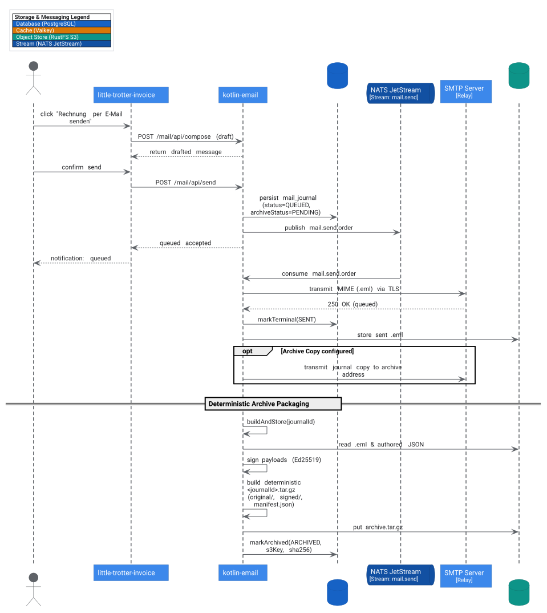
-
Composition:
ComposeResourcerenders the personalized mail draft using tenant master data, evaluated placeholders and the finalized invoice document (PDF/A-3 and embedded XML). -
Enqueue & Handover:
SendResource/SendMailUseCasestores the request inmail.mail_journal(status = QUEUED) and publishes a dispatch order to NATS JetStream (mail.send.order). -
SMTP Delivery:
MailSendConsumerServicepicks up the job from JetStream, transmits the MIME message (.eml) via authenticated TLS to the corporate SMTP server and updates the journal toSENT. -
Operator Archive Handover: When configured, an identical journal copy of the outbound email is simultaneously dispatched to the operator’s archive address (ADR-037).
-
Deterministic Signed Archive (
tar.gz): OnceSENTcommits,MailArchivePackageServiceruns the deterministic packaging (BuildMailArchivePackageUseCase):-
Collects
<journalId>.emland<journalId>-authored.jsonintooriginal/alongside their.sha256checksums. -
Generates detached Ed25519 signatures in
signed/(<journalId>.eml.sig,<journalId>-authored.json.sig,manifest.json.sig). -
Writes normalized
manifest.json(timestamps, recipient, messageId, signer fingerprint). -
Compresses deterministically into
<journalId>.tar.gz(zeroed mtimes, sorted entries) and stores it in RustFS. -
Marks
mail_journal.archive_status = ARCHIVEDvia append-only write guard. Any packaging failure isolates toarchive_status = FAILEDand triggers an alarm without invalidating the already-delivered customer mail.
-
6.6. Upload Receipt
Receipts are uploaded once and de-duplicated by content before they can be linked to an invoice.
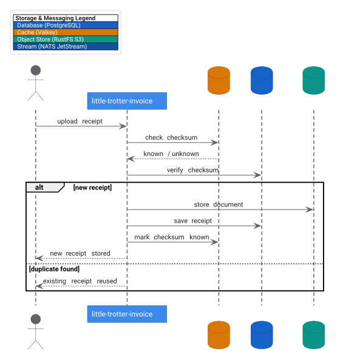
ReceiptPoolView accepts a PDF upload (up to ReceiptSizePolicy.MAX_UPLOAD_SIZE, 10 MiB,
magic-byte checked) and hands the bytes to ReceiptUploadService.upload(). A file above
ReceiptSizePolicy.TARGET_RECEIPT_SIZE (768 KiB) is reduced towards it by ReceiptPdfReducer
(Receipt normalisation at upload) unless the user explicitly
declines reduction, in which case the smaller MAX_UNREDUCED_RECEIPT_SIZE (1 MiB) cap applies
instead. A SHA-256 checksum on the stored (post-reduction) bytes drives duplicate detection: the
cache is checked first as a fast path, then ReceiptRepository.findByChecksum() is the
authoritative check regardless of the cache result. Only a genuinely new receipt is written to the
object store and persisted; the cache entry is then marked known, without a TTL, since the
database’s unique constraint on the checksum — not the cache — is the real guard against
duplicates, so an evicted entry costs at most one extra query. Linking a receipt to a line item is
a separate step, covered next.
6.7. Assign Receipt to a Line Item
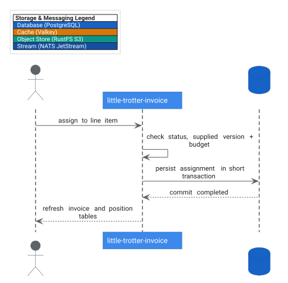
Assignment (setReceiptsForItem/addReceiptsToItem) links an already-uploaded receipt to an
InvoiceItem — an n:m relationship, since one receipt commonly covers several items or the
invoice as a whole. The service checks the invoice status and the supplied version before
assignment changes, and enforces the invoice-wide receipt count of 19 distinct receipts; an
estimated document size above 20 MiB warns instead of refusing the link — see
Document Size Budget. Removing a link leaves its pool document
intact. The common dialog refreshes both scope tables after the write commits; empty scope
tables remain visible. Pool deletion is a separate operation guarded by reference usage.
6.8. Print Job Overview
PrintJobListView is a read-only, cross-invoice monitoring view over all GenerationJob records.
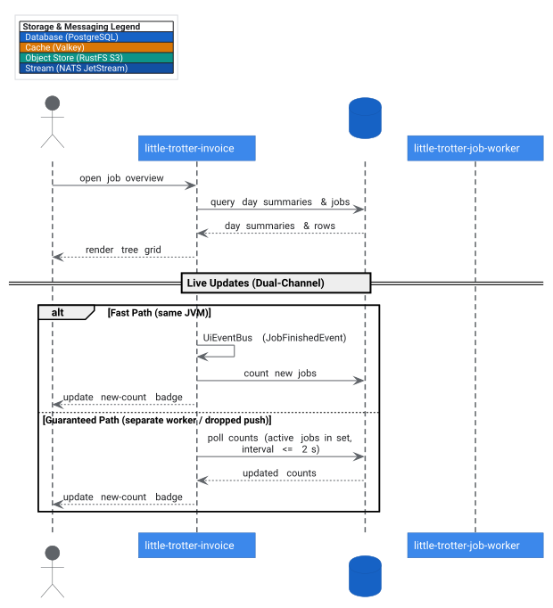
Opening the view loads a two-level tree grid (day → jobs) using projection DTOs
(PrintJobOverviewRow) via PrintJobOverviewQueryService. The new-job count badge is updated via
dual channels:
-
Fast Path: Local
UiEventBus(JobFinishedEvent) within the same JVM. -
Guaranteed Path: Polling interval (≤ 2 s) active while jobs in the current filter remain non-terminal, ensuring live updates when workers run in separate processes. Grid rows do not reload on poll ticks to preserve operator scroll/expansion state.
6.9. Download Rendered PDF/XML
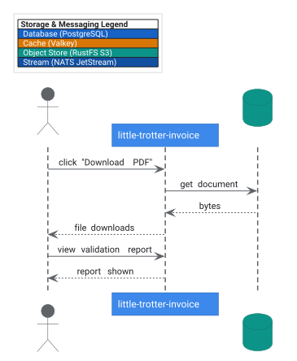
Neither the download nor the validation-report dialog does any work until the Office Manager clicks.
DocumentStore.get() fetches bytes from the object store lazily, keyed by the
pdfObjectKey/xmlObjectKey already visible in the overview row. Opening the validation-report
dialog is the one place this scenario touches the database again, loading the full
GenerationJob entity only at that point.
6.10. Verify an Invoice Recipient’s VAT ID
An invoice recipient’s VAT ID is one text field (VatIdField); VatIdValidator recognises its
two-character country prefix, auto-completes it from the billing address when the Office Manager
types digits only, and validates the format on blur. Asking the EU VIES REST API whether the id
is actually registered is a second, separate step: a small "VIES prüfen" button, enabled only for
a format-valid EU prefix, that the Office Manager clicks explicitly — see
Error Handling and Validation for the field’s validation
layer and ADR-023 for why the request is never automatic.
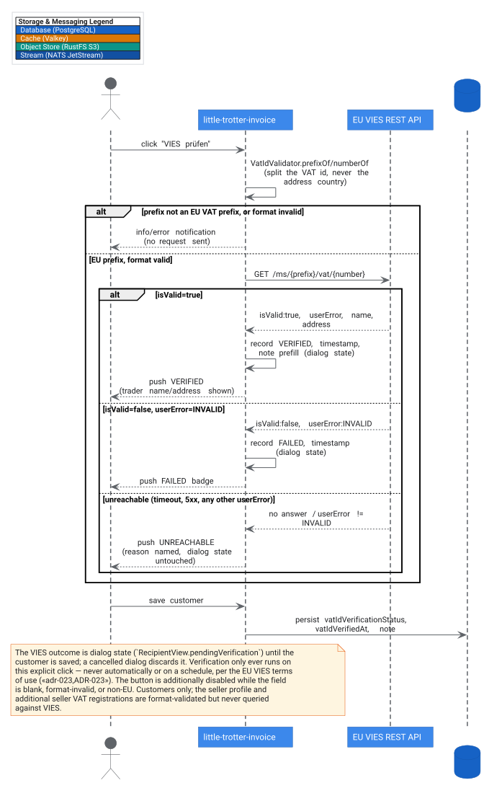
VatIdValidator.prefixOf/numberOf split the normalised id before the call, never the address
country — the number carries the country the id was actually issued for, which need not match where
the invoice recipient is registered. ViesHttpClient reads VIES’s isValid together with its
userError, name and address fields and resolves to one of three outcomes: VERIFIED and
FAILED are recorded on the still-open dialog (RecipientView.pendingVerification) — shown
immediately as the verification checkbox, badge and helper text, VERIFIED additionally showing the
trader name/address VIES returned and prefilling the verification note with them if it is still
blank — and only reach Recipient.vatIdVerificationStatus/vatIdVerifiedAt in PostgreSQL once the
Office Manager saves the invoice recipient; cancelling the dialog discards the outcome.
UNREACHABLE names the reason (timeout, VIES busy, VIES down, or the request itself was rejected)
and never changes that dialog state at all — an unreachable VIES is not a statement about the VAT
ID. This is the only place the system calls VIES: the invoice issuer profile and additional invoice
issuer VAT registrations are format-validated the same way but never verified against VIES, and no
scheduler or background job ever triggers a VIES call.
6.11. Quote Invoice Order to Invoice Draft
Recording the acceptance of a SENT quote only sets the status to ACCEPTED and writes a log
entry; it sends nothing to the invoicing application. The hand-over is a separate, addressable
invoice order that the user triggers with "Rechnungsentwurf erstellen" from SENT or ACCEPTED
(with the permissions to decide on quotes and to create invoices). In one short transaction the
quote module records the acceptance if the quote is still SENT, stores the order as REQUESTED
in quote.quote_invoice_order, writes a log entry and an outbox row for
quote.invoice-order.requested; the outbox relay publishes after the commit (and once at startup
for rows a crash left behind) with the order id as JetStream message id and marks a row published
only after the JetStream acknowledgement. A quote has at most one order in REQUESTED or
CREATED. The event carries references only (order id, quote id and number, acceptance date,
order reference, optional delivery date or service period, actor), because the content is
immutable from REVIEW on. The invoicing application’s QuoteInvoiceOrderConsumer reads the
offer snapshot, the PDF and the customer attachments through the quote contract REST and
CreateInvoiceFromQuoteUseCase creates the invoice draft with its number drawn at creation,
delivery date or service period set from the order. The quote number becomes the order reference
(BT-14), the acceptance date its date; creation is idempotent through the quote id on the
invoice, and a repeated order for an existing invoice is answered with that invoice and the new
order id. The reply invoice.created-from-quote (order id, invoice id and number) marks the order
CREATED, stores the invoice id and number on it and writes a protocol line; the quote stays ACCEPTED; if the draft cannot be created,
invoice.creation-from-quote.rejected marks the order REJECTED with the reason and leaves the
quote ACCEPTED, and the user orders again, which creates a new order. Replies for unknown or
already answered orders are acknowledged and logged without effect. While NATS is unavailable the
order stays REQUESTED and the relay delivers it later. After five failed deliveries the
message goes to the dead-letter subject and appears in the message center.
When the quote module starts without ever having received master data, it requests a snapshot
(masterdata.snapshot.requested) and the invoicing application streams its reference data back in
chunks; afterwards the replicas keep the module usable while the invoicing application is down.
6.12. Offer Statistics
A user with the permission QUOTE_VIEW opens the offer statistics and picks a period.
QuoteStatisticsView asks its narrow input port; the HTTP adapter calls
GET /quote/api/statistics/dashboard of the quote application (the ranking view uses
/statistics/ranking). QuoteStatisticsResource delegates to QuoteStatisticsDashboardQueryPort;
the read model selects the per-offer facts of the period (offers in SENT, ACCEPTED
or REJECTED by quote_date, plus the open ones for "in progress") with the net amount per line
rounded to cents, and QuoteKpis and QuoteStatusCounts compute the figures. The anti-corruption
layer maps QuoteDashboardView to the presentation model, QuoteStatisticsPresenter formats it and
the shared statistics components render it. The call is read-only and starts no transaction that
writes; if the quote application is down, the view shows an error state instead of figures.
7. Deployment View
The target environment is called the server throughout this document. The primary target is
an Ubuntu server; a dedicated single-instance host (a mini PC or any other standalone machine
serving one operator) is the second supported shape, covered in
Dedicated Single-Instance Host below. This
repository’s own docker-compose.yml is the minimal product stack — the application, the
renderer/worker, and the four infrastructure services it needs (PostgreSQL, RustFS, NATS,
Valkey), no TLS proxy, no monitoring, no hardening overlays. The full production-style deployment
described in this chapter — native Postgres/RustFS/Caddy, the instance overlay, backups, and
monitoring — is assembled by the sibling, private little-trotter-admin-tools repository, which
layers its own Compose overlays and native-install scripts on top of this repository’s base file
rather than duplicating it. Every path below prefixed docker/compose/ or admin-tools/
therefore refers to that sibling repository, checked out alongside this one.
Productive use is a server installation by an IT service provider, following the Ubuntu server
deployment described below. This repository’s make dev compose stack is meant for evaluation
and development only.
7.1. Server Deployment (Production-Style Target)
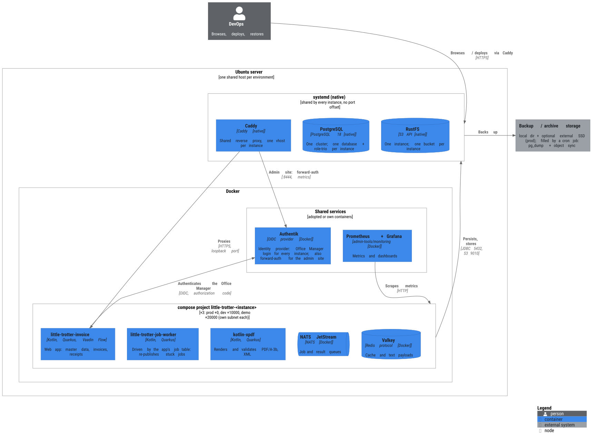
On the Ubuntu server, PostgreSQL 18, RustFS, and Caddy run natively under systemd — one
installation of each, shared by every instance on the box — instead of as Docker containers.
Only the application layer (little-trotter-invoice, little-trotter-job-worker, kotlin-xpdf,
NATS JetStream, Valkey) is Docker Compose, running as one compose project per instance
(little-trotter-prod/little-trotter-dev/little-trotter-demo), each with its own Docker
subnet and its own database, bucket, and role-trio on the shared native services. Caddy is the
stack’s only externally exposed edge: one shared installation generates one HTTPS vhost per
instance (ports 443/80), reverse-proxying to that instance’s own little-trotter-invoice
container on a loopback-only port — every other container, native or Docker, stays unreachable
from outside the server. Authentik and the monitoring stack (Prometheus/Grafana) are shared
Docker services outside every instance project: Authentik is the identity provider for the
Office Manager login of every instance (little-trotter-invoice runs as a Quarkus OIDC web-app client
against it, the application itself decides who may do what) and additionally gates the separate admin site; monitoring
scrapes every instance’s metrics endpoint.
Instance ports follow one offset scheme (prod +0, dev +10000, demo +20000) — for example
the application’s loopback port is 8080/18080/28080 and NATS' client port is
4222/14222/24222 — while the two shared native services keep one fixed port each,
independent of instance count: PostgreSQL 5432 and RustFS 9010.
| Service | Runtime | Network / Port(s) | Notes |
|---|---|---|---|
|
Native (systemd), shared |
all interfaces, |
One installation for the whole server; |
|
Native (systemd), shared |
|
One database + role-trio ( |
|
Native (systemd), shared |
|
One bucket per instance ( |
|
Docker, per instance |
|
1200M memory limit, |
|
Docker, per instance |
none (no UI, no externally reachable port) |
432M memory limit, |
|
Docker, per instance |
none (internal REST only, never fronted by Caddy) |
768M memory limit, |
|
Docker, per instance |
|
128M memory limit; one JetStream broker per instance, never shared. |
|
Docker, per instance |
none published |
192M memory limit; deliberately the one Docker-native infrastructure service — a disposable cache, not shared state. |
Authentik |
Docker, shared (adopted or own containers) |
reached through Caddy; admin site on |
OIDC identity provider for the Office Manager login of every instance (Quarkus OIDC web-app client); additionally the forward-auth gate of the admin site (Prometheus). |
Monitoring |
Docker, shared (adopted or own containers) |
|
Prometheus + Grafana ( |
`kotlin-xpdf’s image renders with the pinned Typst CLI only (ADR-030); there is no second layout engine, no engine switch and no optional build profile for one.
PostgreSQL and RustFS keep their data directly on the server’s own filesystem, outside Docker’s
storage driver (systemd-managed data directories, not named volumes) — one reason they are native:
independent backup, resize, and migration. The Docker-side volumes that remain are per instance and
named per compose project, so three instances never collide. little-trotter-invoice’s own
`backups-data:/backups volume is where DevOps’s cron-triggered backup run (see
Operations and Admin Tooling below)
writes its archives before backup.sh copies them off, syncing an age-encrypted copy to an optional
external SSD for prod.
Backups serve recovery, not archiving; retention is covered by the operator’s archive (ADR-035). Disk encryption at rest (for example LUKS) of the host is the operator’s responsibility; the age encryption above applies to backup copies only.
Reaching the server: sudo lt-setup build prod|dev|demo resolves that instance’s ports,
installs/adopts native Postgres, RustFS, and Caddy, adopts monitoring and Authentik if present,
and deploys the instance’s Docker Compose project (QUARKUS_PROFILE=prod, scheduler enabled on
both Quarkus services).
7.1.1. Dedicated Single-Instance Host (Mini PC)
The second deployment shape is one machine for one deployment: a mini PC that serves a single
operator. It runs this repository’s docker-compose.yml as it is — no instance model, no
shared native services — so every service is a container, PostgreSQL, RustFS and Caddy included.
Caddy sits on proxy-net and is the only service with published ports; everything else lives on
invoice-net, reachable from the host on 127.0.0.1 at most.
| Service | Reachable at | Memory limit |
|---|---|---|
|
|
128M |
|
via Caddy only |
1200M |
|
not reachable (no UI) |
432M |
|
internal only |
768M |
|
|
768M |
|
|
400M |
|
|
128M |
|
not published |
192M |
Every container carries a memory limit (about 3.9 GB in total) and the application tier a pids
limit; a tighter overlay for smaller machines brings the total down to about 2.6 GB. Database and
object-store data live on bind mounts under /srv/little-trotter, so they survive a full
container and image cleanup. The stack is deployed with make -C admin-tools deploy, which picks
the hardware overlay automatically and can pull published images instead of building them.
The memory limit above is a hard ceiling: little-trotter-invoice and little-trotter-job-worker
both run with -XX:+ExitOnOutOfMemoryError, so a burst of concurrent PDF/XLS/report generation work
that exceeds it kills the whole process rather than degrading. The
invoice.generation.bulkhead.max-concurrent-calls knob
(INVOICE_GENERATION_BULKHEAD_MAX_CONCURRENT_CALLS / _WORKER, see docker-compose.yml) exists to
keep worst-case concurrent generation work under whichever memory limit a given overlay configures;
a rejected call fails cleanly into the existing durable PENDING job record
(Generate E-Invoice) rather than dropping work or risking the OOM kill.
Interactive document jobs pass a separate bulkhead,
invoice.generation.interactive-bulkhead.max-concurrent-calls
(INVOICE_GENERATION_INTERACTIVE_BULKHEAD_MAX_CONCURRENT_CALLS, default 4), so a full bulk bulkhead
never rejects them; its memory share counts on top of the bulk limit. On the kotlin-xpdf side,
JOB_INTERACTIVE_WORKER_THREADS (default 1) adds the interactive render threads, which the derived
bulk thread count already subtracts from the heap budget.
`docker-compose.yml’s own comment on that variable carries the sizing arithmetic for this
repository’s default limits; a hardware overlay that lowers the memory limit further (as this
section’s mini-PC table does) must lower this knob to match, which is out of this repository’s scope
to prescribe for a sibling repository’s overlay.
7.2. Optional Mail Dispatch Container
The mail dispatch component (kotlin-email, see
Building Block View) sends invoices by email. It is a separately built
and deployed container so this bounded context — templates, provider SMTP, an append-only send
journal, signed archive packages — has its own release cycle and failure domain, and so an
instance can run with or without it: mail dispatch is never on the invoicing application’s
critical path.
It plugs into the stack the same way the optional Factur-X engine overlay (standby, kept but not
developed further) does — an email Compose profile in admin-tools, switched on per instance by one
flag (LT_MAIL_ENABLED; in development make dev starts it by default, EMAIL=0 opts out) — with
no port published to the internet; Caddy answers 404 for /mail/* from outside, and only the invoicing application calls the
component’s REST API. Composing a mail is one HTTPS request into the
component, attachments handed over as presigned links rather than a shared bucket; the outcome comes
back asynchronously on the NATS subject mail.send.result, projected onto two nullable columns on
the invoice so the send history stays visible even with the component stopped. The design decisions
(own bounded context, published contract package, forwarded identity headers) are recorded in
ADR-015, ADR-016 and ADR-019; this section covers only how the
component is deployed. An instance that leaves the flag off carries none of it — no container, no
schema, no bucket, no streams, no secret. Every test stack (isolated Playwright stack, stress,
admin-test, dev) and the cross-module E2E suite run the real component with a Mailpit sink, never a
stub; a stub HTTP server remains only in integration tests that deliberately isolate the invoicing
side’s HTTP adapter (retry/timeout, malformed answers).
| Switch | Effect |
|---|---|
|
Starts |
Port |
|
Provisioning |
Switching the flag on provisions everything the component needs on the host automatically: the
|
Transport ( |
|
Archive |
The mail secrets of an instance (mail env keys, archive-signing key pair, and the still-sealed provider file with its key) can be exported as one age-encrypted archive under the instance backup directory and restored into a fresh env without overwriting existing keys; the archive never contains a plaintext provider password. |
|
Note
|
The integration is opt-in. New instances keep |
7.3. Optional Quote Container
The offer module (kotlin-quote, see Building Block View) is deployed
like the mail component: a separate quote-app container behind the Compose profile quote
(overlay docker/compose/quote.yml in admin-tools, switched on per instance by
LT_QUOTE_ENABLED; make dev QUOTE=1 in development), reached by the invoicing application
over the instance network. It reuses the instance’s PostgreSQL and RustFS but is isolated by name:
schema quote in the existing database with its own role pair (quote_migrator, quote_app), own
bucket quote-documents, own NATS streams. No port is published; Caddy answers 404 for
/quote/api/ and /quote/q/ from outside. The invoicing application gates menu, publisher and
consumer with quote.enabled (QUOTE_ENABLED, off by default); an instance that leaves it off
carries no container, schema, bucket or stream of the module. Offer PDFs are produced by the
existing renderer through the document-job subject; offers are sent through the mail component,
so a quote instance that sends offers also runs the mail component.
7.4. Database Baselines: What Runs When
Two independent Flyway baselines exist, one per component, in the same PostgreSQL database but in
separate schemas with separate history tables. Neither is an upgrade path: while no live instance
exists, both are edited in place (greenfield baseline, no V3+ scripts, no backfills).
| Baseline | Runs |
|---|---|
Invoice |
At every start of the invoicing application (Flyway, |
Mail |
Only by |
Roles |
Once, against the instance’s existing database, before the first mail migrate (role bootstrap of the deployment). The mail baseline then grants and revokes against these existing roles. |
Verification: a fresh isolated PostgreSQL starts the invoicing application with the invoice
baseline alone (FeatureModulesAlwaysActiveIT); with the flag off no NATS result consumer is bound
and the start-up log carries no mail-related warning.
7.5. Operations and Admin Tooling (little-trotter-admin-tools)
Server operations, instance lifecycle management, and disaster recovery are strictly separated from
application code and orchestrated by the sibling repository little-trotter-admin-tools (currently
maintained as an internal operator suite by the project initiator; public release planned for Q4/2027 or
Q1/2028 after multi-year operational maturity validation; operators in the interim reduce operational
effort through reference hardware and administrative scripts).
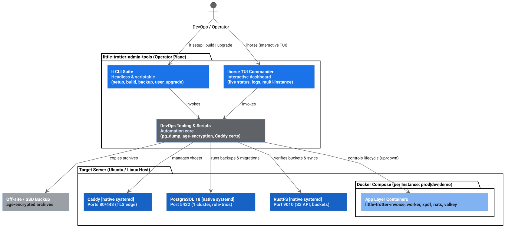
7.5.1. Staged Operations Rollout: Lean MVP Baseline vs. Phase-2 Management Plane
The operational lifecycle follows a lean, two-stage rollout model to eliminate operational waste (Muda) and ensure compliance-grade robustness:
-
Phase 1 (Operational MVP / Current Baseline until Q4/2027):
-
Lean Reference Hardware: Standardized fanless Mini-PC paired with local mirrored NAS, eliminating platform-specific driver, thermal, and configuration anomalies.
-
Lightweight Shell Automation: Dedicated shell and CLI scripts maintained by the project initiator handle core operational tasks (age-encrypted backups, atomic PostgreSQL snapshots, container rollouts, and systemd watchdog verifications).
-
Operator Baseline: Achieves an empirically validated run-effort of 2–3 person-days per year (0.75–1.5 person-days initial ramp-up).
-
-
Phase 2 (Consolidated Management Plane / Release Q4/2027–Q1/2028):
-
General Availability of little-trotter-admin: Packaged Go CLI suite (
lt) and interactive TUI (lhorse). -
Phase-Gate Quality Criteria: Transition to Phase 2 requires proven completion of an operational hardening cycle under real-world production conditions:
-
Non-disruptive PostgreSQL schema evolution across major version migrations.
-
Validated automated disaster recovery rehearsals with Mean Time to Recovery (MTTR) < 15 minutes.
-
Long-term zero-maintenance operation of certificate renewal, Authentik forward-auth, and storage reclamation under sustained production accounting loads.
-
-
7.5.2. Unified Operational Interfaces: lt CLI & lhorse TUI
Day-2 operations run either headless/scripted via the lt CLI suite or interactively via the
lhorse Commander TUI (number-row driven navigation, live multi-instance status, container logs).
| Operational Domain | Core Commands (lt) |
Responsibility & Infrastructure Impact |
|---|---|---|
Provisioning & Setup |
|
Guided server installation, dependency verification (systemd, Docker, mDNS, TLS, firewall). |
Instance Lifecycle |
|
Deploys multi-environment stacks ( |
Orchestrated Upgrade |
|
5-step orchestrated update: preflight check → occasion backup → container rollout → DB migration → health check. The container rollout recreates containers whose image changed, a brief interruption on this single-node deployment, not a zero-downtime swap. |
Disaster Recovery |
|
Atomic backup of Postgres (pg_dump), RustFS (object sync), and Caddy TLS state. Age-encrypted off-site/SSD synchronization. |
User & Access Management |
|
Direct Authentik OIDC tenant administration, user enrollment invitations, and role assignments
( |
Observability & Diagnostics |
|
Aggregated JVM/DB/Queue metrics, real-time log streaming, and secure SSH tunnels for non-public administrative ports. |
7.5.3. Manual Database Writes
The database never invents a time (ADR-029): the invoice audit trigger stamps
occurred_at from the session setting app.now and rejects a write without it. The application
sets app.now itself; every operator write outside it — a psql session, an ad-hoc script, a
bulk loader — that inserts, updates or deletes rows of invoice, invoice_item,
invoice_document, trip_expense or the receipt assignments sets it first, in the same
transaction, in UTC:
BEGIN;
SELECT set_config('app.now', '2026-09-27T08:00:00Z', true);
-- the corrective statements
COMMIT;Without it the write fails with app.now is not set: a write to <table> must carry the application
time. Columns that carry the application time (invoice.invoice_date, the created_at
of snapshots, jobs, validation data and maintenance events, maintenance_queue_execution.claimed_at)
have no database-clock default; a manual INSERT supplies them explicitly.
Not affected: read-only psql access, and lt backup restore — a full pg_restore --clean
loads the data before it recreates the triggers. The datagen loader sets app.now on every
connection it opens.
7.6. Development and Test Deployment Variants
The base docker-compose.yml is the single source of truth; dev and test only add or swap
overlays, never a parallel stack definition.
| Variant | Command | App Port |
|---|---|---|
Local dev stack |
|
|
Isolated Playwright/E2E stack (sibling repository) |
|
https://localhost:9443; |
CI-local |
This repository’s Maven reactor gate ( |
n/a |
The isolated Playwright stack keeps a full browser E2E run from competing with whatever a
developer already has running under make dev.
7.7. Verification on the Test Host
At the end of a wave, the result is verified on the test host, not on the developer machine. The host runs its own Docker Compose stacks and never touches existing instance data.
-
Transfer: the commits are sent as a
git bundleand checked out into a dedicated, detached worktree on the host. -
Isolation: every run uses its own Compose project name (for the Playwright stack
E2E_PROJECT=<name>), its own network, and a fresh database. Test data is limited to the syntheticdatagendata. -
Order: Playwright suite, then the dependency scan (see Dependency Vulnerability Scanning), then
make test. -
Cleanup:
docker compose -p <name> down -v, then remove the worktree.
Long jobs run in a login shell (bash -lc '…'). User-installed linters such as ruff live in
~/.local/bin, which a non-login SSH shell does not have on PATH; without it the config lint
gate fails.
7.7.1. Playwright Harness Behavior
-
ERR_NETWORK_CHANGED: Chromium reports this on page loads when Testcontainers creates or removes Docker networks on the same host in parallel. The request never reaches the server. The harness reloads once and reports the application as offline only if the error persists. Integration test suites therefore do not run in parallel with Playwright. -
Grid cells: Vaadin renders grid cell content in the light DOM inside
vaadin-grid-cell-content, outside the[role=row]element. Status symbols arespan[role=img]elements with anaria-label. Locators target the cell content, not row descendants. -
Notifications: an open error notification is not replaced by a later success notification (one toast slot per UI). A test dismisses the error before asserting a following success toast.
8. Cross-Cutting Concepts
This chapter covers the domain concepts, design patterns, and architectural rules that span multiple modules: money and tax arithmetic, EN 16931 compliance semantics, messaging conventions, and the invoice state machine that governs the lifecycle.
8.1. Money and Tax Domain Model
All monetary arithmetic is strictly encapsulated by the Money value object (kotlin-shared). Raw
BigDecimal is reserved exclusively for non-monetary quantities, percentages, and weighting
factors.
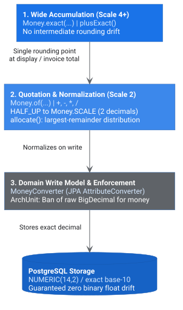
8.1.1. Two Precision Worlds
| Dimension | Money.of(…) (Normalized) |
Money.exact(…) (Accumulation) |
|---|---|---|
Scale and Rounding |
Fixed 2 decimals ( |
Caller-defined scale (typically 4) without intermediate rounding |
Application |
Quoted line amounts, totals, UI display, receipts |
Intermediate tax proportion breakdowns across multiple line items |
Conservation |
Standard arithmetic ( |
|
8.1.2. Key Invariants and Enforcement
-
Value Semantics: Equality compares
amountviacompareTo(1.50 == 1.5).hashCodestrips trailing zeros to preserve the contract across scales.toString()renders two fixed decimals (1.50). -
Compile and Architecture Gate:
MoneyArchitectureTest(ArchUnit inkotlin-shared,kotlin-invoice,kotlin-xpdf) forbids rawBigDecimalfor any property/method matchingamount|price|total|sum. -
Persistence Guarantee:
MoneyConverter(AttributeConverter<Money, BigDecimal>) normalizes all values to scale 2 on write. PostgreSQL maps amounts to exactNUMERIC(14,2)base-10 storage (zero IEEE-754 binary floating-point drift). -
Tax Consistency: VAT is modeled per invoice line (
InvoiceItem.taxRule). The cross-borderInvoice.reverseChargetoggle cascades rules to all lines and is enforced as a blocking gate at invoice finalization (ADR-003).
8.1.3. Country Reference Tax Rates
TaxRate.isReference identifies the standard reference rate of a country independently
of the global isDefault UI preference. A partial unique database index permits at most
one marked rate per country; a CHECK constraint requires an active, selectable, positive
category-S rule that is not a hotel rate. The application rejects conflicting assignments
before persistence. Switching a reference requires clearing the previous marker first.
TaxRateRepository.requireReferenceTaxRate(country, date) performs an unpaged, uncached
lookup and checks inclusive validity boundaries. Missing or ambiguous references are
errors, never a reason to select another rule by list order. The greenfield seed marks
DE 19%, FR 20%, BE 21%, NL 21%, and LU 17% from the existing standard rules.
selectTripTaxRate is shared by trip persistence and the Vaadin preview. A fixed-price
trip uses the reference for the invoice’s seller VAT registration and invoice date;
the domestic registration represented by null means DE. Reverse charge takes priority
and retains main-service inheritance, as do trips without a fixed price. Header saves
refresh fixed-price trip taxes after country/date changes; switching reverse charge off
restores references. Existing issued invoice snapshots are not rewritten by reference
data edits. This implements the reference tax rate working scope.
8.2. Document Size Budget
A produced e-invoice may not exceed 20 MiB (see Chapter 2, Architecture Constraints, and
ADR-014 for the decision record). One policy, ReceiptSizePolicy (kotlin-shared,
de.littletrotter.shared.receipt), is the single source of truth for every number involved, so
every enforcement point reads from it rather than keeping its own copy:
-
TARGET_RECEIPT_SIZE(768 KiB) — the size a receipt is reduced to at upload. -
MAX_UNREDUCED_RECEIPT_SIZE(1 MiB) — the hard cap a user may still decline reduction up to. -
MAX_UPLOAD_SIZE(10 MiB) — the largest raw upload accepted at all; reduction is applied. -
MAX_RECEIPTS_PER_INVOICE(19) — distinct receipts, deduplicated by object key, per invoice. -
MAX_INVOICE_DOCUMENT_SIZE(20 MiB) — the produced e-invoice’s hard limit. -
INVOICE_DOCUMENT_RESERVE(1 MiB) — the invoice document’s own share of that limit.
ReceiptSizePolicy.uploadDecision(size) turns a raw upload’s size into one of three outcomes:
ACCEPT_AS_IS at or below the target, OFFER_REDUCTION up to the 10 MiB upload cap, REJECT
above it. The numbers add up on purpose:
19 × TARGET_RECEIPT_SIZE Base64-encoded (768 KiB inflates to exactly 1 MiB under Base64) plus the
1 MiB reserve equals 20 MiB exactly — a future edit to one constant that breaks this invariant
fails ReceiptSizePolicyTest.
8.2.1. One Receipt, One Embedding
A receipt exists exactly once in the produced container: as a BG-24 AdditionalReferencedDocument /
AttachmentBinaryObject (Base64-encoded) inside the ZUGFeRD XML, built by
MustangTransactionBuilder. There is no rasterized annex page and no per-receipt PDF/A-3 embedded
file; the produced PDF holds exactly one embedded file, the ZUGFeRD XML itself. XRechnung requires
the Base64 copy regardless, so a second embedding is pure duplication. The size, mail-limit and
archive-volume reasoning and the rejected alternatives are in ADR-032.
The estimator, Base64WithReserveEstimator, sizes a receipt set on the strictest channel it
actually travels over: the sum of each distinct receipt’s Base64-encoded size
(ceil(bytes / 3) * 4, DocumentSize.base64Encoded()) plus the INVOICE_DOCUMENT_RESERVE. Base64
is the binding choice because XRechnung carries every receipt as uncompressed Base64 text inside
the invoice XML regardless of what the visible PDF does; estimating on raw bytes would understate
the produced document by that 4/3 inflation factor. The estimator remains a replaceable seam
(InvoiceDocumentSizeEstimator) so a later projection can account for anything this one still
simplifies away — the reserve is a fixed allowance for the invoice body, surrounding XML text and
embedded fonts, not a per-invoice measurement.
Deduplication is by object key, not by receipt id, and is applied consistently everywhere a
receipt set is sized: the same document commonly hangs on a position and on the invoice as a
whole, and the export path deduplicates the same way (MustangExportModelMapper.collectReceipts,
verified against the current code). A budget that counted a shared receipt twice would refuse an
invoice the exporter handles fine.
The rule is enforced at four points, deliberately layered rather than checked once:
-
Upload (
ReceiptUploadService, outbound portapplication.invoice.port.outbound .ReceiptPdfReducer, adapterinfrastructure.receipt.PdfBoxReceiptPdfReducer, PDFBox) reduces an oversized upload towardsTARGET_RECEIPT_SIZEbefore it ever enters the pool — see Receipt Normalization at Upload below. -
Linking (
ReceiptLinkService.setReceiptsForItem/setReceiptsForInvoice, viaReceiptBudgetService.requireWithinBudget) reconstructs the invoice’s whole resulting receipt set — invoice-level receipts plus every item’s receipts, after the write — and judges it againstInvoiceDocumentBudget. Only the receipt count breakingMAX_RECEIPTS_PER_INVOICErefuses the write; an estimated size above 20 MiB does not block linking, it surfaces as a warning banner in the invoice editor’s receipts tab with a link to the receipt pool, so the user can shrink individual receipts without losing the position they were building. -
Document generation (
GenerationJobCreationService.createJob) re-checks the same budget: an estimate above 20 MiB throwsInvoiceDocumentSizeExceededExceptionand noGenerationJobis created, so a set that only warned at linking time cannot silently reach the export worker. -
Export, as a backstop (
PdfExportServiceImpl.enforceSizeBackstop,kotlin-xpdf), independently refuses a produced container whose actual bytes exceed 20 MiB withInvoiceDocumentTooLargeException— the guard that fires if a receipt set ever reaches export without having passed the earlier checks, or if the estimate undercounts the true artifact size. It never truncates a document to fit.
InvoiceDocumentBudget reports a BudgetVerdict as data — Accepted, TooManyReceipts, or
DocumentTooLarge — never as a thrown exception. kotlin-shared deliberately does not decide how
a refusal surfaces: ReceiptBudgetService (application layer) maps TooManyReceipts to
ReceiptCountLimitExceededException for the server-side guard and leaves DocumentTooLarge to the
UI’s warning banner, so each layer phrases its own refusal in its own vocabulary, from one shared
judgment.
8.2.2. Receipt Normalization at Upload
PdfBoxReceiptPdfReducer tries two stages in order, stopping as soon as the result meets
TARGET_RECEIPT_SIZE, and a file already at or below the target is stored unchanged
(ReceiptNormalisationStage.NONE):
-
Stage 1 —
IMAGES_DOWNSAMPLED: walks each page’s content stream, finds every embedded image’s actual displayed size (from the CTM in effect at its paint operation, not its raw pixel count), and re-encodes any image whose effective DPI exceeds 150 as a JPEG at quality 0.75. Text, vectors and metadata are untouched — a receipt that is mostly a scanned photo with vector or text overlays often meets the target at this stage alone. -
Stage 2 —
RASTERISED: renders every page to a single 150 dpi image and rebuilds the PDF from those images. The text layer is lost, which is why this only runs once stage 1 alone is not enough; the receipt is still legible for a human reviewer, which is what the pool needs to keep proving an expense. -
A result still above the target after both stages is rejected outright, the rejection naming the page count so the user understands why (e.g. a long multi-page statement).
150 dpi is the chosen ceiling because a receipt only needs to stay legible for human review and for OCR-assisted bookkeeping, not for print reproduction; typical phone/scanner captures arrive at 200–300+ dpi, so downsampling to 150 dpi already recovers most of the size without a visible legibility loss, and JPEG quality 0.75 is the point past which further compression buys little size back for a text-dominated scan while starting to show artifacts. Color is kept unless the source page samples as gray (checked on a coarse pixel grid): most receipts are color scans/photos even when their content is effectively monochrome, and guessing "no color needed" wrong would discard information (e.g. a highlighted total, a stamp) the derivative can never recover, whereas a page that genuinely has no color information is safely re-encoded as 1-component gray for the size win.
No original is kept (ADR-032): the reducer’s output — never the uploaded bytes — is what
the pool checksums, deduplicates and stores. A receipt stored before this
reducer existed, or one left at NONE because it already met the target then, can be reduced later
on demand through the inbound port NormaliseReceiptUseCase; Receipt.normalisationStage and
Receipt.originalSizeBytes record which stage (if any) produced the stored bytes.
Green IT rationale. The budget is not only a gateway constraint. Every receipt is copied along the whole processing chain (sender store and backup, receiver archive and backup) and transferred over several hops, and each stored copy occupies hardware for the retention period (invoices are kept for 8 years by the operator’s archive, ADR-035). Storage therefore dominates the footprint by two to three orders of magnitude over transfer. The German user guide explains this to operators with figures estimated from published agency data (UBA, LWF, EEA) — see the German user guide, appendix "Datenvolumen und Klimawirkung von Belegen". Those figures are an orientation for users, not a measurement of this system.
8.3. EN 16931 Mapping
The EN 16931 / ZUGFeRD business-term taxonomy (BT-n, plus Factur-X EXTENDED BT-X-n) is a
Kotlin enum, B2bTerm (kotlin-shared), not a database-seeded catalog. Each constant carries the
official BT number as its persisted SMALLINT code (B2bTermConverter, a jakarta.persistence
.AttributeConverter<B2bTerm, Int>, reads via a null-safe fromCodeOrNull so a code with no
matching term degrades to null instead of failing the whole read), its EN 16931 level (header,
seller/buyer party, or line), its field kind (text, number, date, or enum with a value-domain code
list), and — for the subset a B2bProfile can actually capture — a binding: BOUND to an
existing domain property (read via reflection at rule-evaluation time) or FREE for a value with
no modeled property, evidenced by an XPath into the CII export. A term with binding = null is a
pure reference term: named for compliance/export purposes, but never profile-selectable beyond
OPTIONAL. B2bTerm.BT_151 (the VAT category code of a line: S, AE, E, O, …) is
the one deliberate exception and can never be selected in a B2B profile: the VAT category is a
tax decision that follows from the tax rule chosen for the position, and a buyer’s profile
must not be able to require or override it. The value is still exported — it is derived from
the position’s tax snapshot, not from any profile field.
Per-country profile rules live in B2bProfile/B2bProfileRuleSet: a profile selects which BOUND
or FREE terms are mandatory/conditional/optional for a given recipient, evaluated against the
invoice being finalized. The layout itself is not part of a profile: every invoice renders from the
one shipped
layout, only the required fields differ per recipient.
The consumer note for private customers in the crafts wording profile (HANDWERK) reuses the
invoice-owned note snapshot pattern of the seller’s invoice note. It is copied at creation, in the
document language, when the profile is HANDWERK, the recipient type is CONSUMER and the switch is
on. In draft it follows changes of recipient type and document language only while untouched, is
editable and resettable in the invoice header, is frozen once SENT, and is copied by storno. The
PDF prints it as a second paragraph in the note box; the XML emits it as an additional invoice note
(BT-22) on the same path as the regular note. No further validation rule or blocking applies.
A business trip (ADR-021) exports as exactly one BG-25 line, never one per expense
(option A of the two shapes that were considered): BT-153/BT-154 carry the trip’s title and
purpose, BG-26 its period, and the forced quantity of 1. Switching the position to "detailed"
adds a BT-127 line note summarizing the expenses — truncated at 1000 characters with a pointer to
the attachment — and the trip workbook as a BG-24 attachment (TypeCode 916, XLSX MIME), rendered
once at job-publish time and exchanged through Valkey rather than carried on the NATS envelope
itself (Messaging and Event-Driven Architecture). Both the
note and the attachment are supported by the Mustang/CII
and Factur-X export paths (the Factur-X route is on standby: kept, not developed further).
8.4. PDF Reporting (Typst)
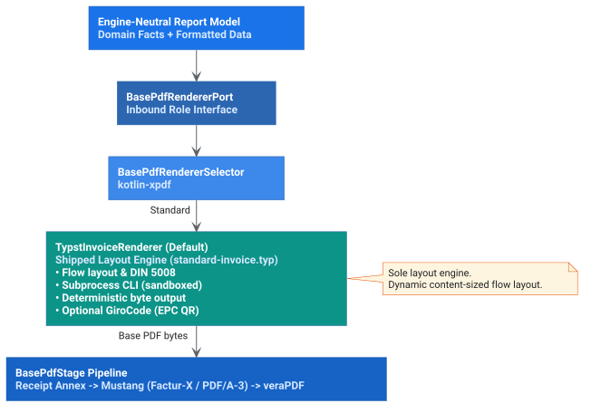
The visible base invoice document is rendered via BasePdfRendererPort (kotlin-shared) using
Typst (standard-invoice.typ, kotlin-xpdf), the only shipped layout engine; there is no fallback
renderer and no .jrxml template in the render path (ADR-030). Issued invoices carry
the brand mark; drafts and cancellations carry their own marks. A missing or altered document of
record is resolved on access without a dialog, and a re-rendered sent invoice is a tagged
reproduction that is never dispatched (ADR-034).
| Property | Typst Specification (kotlin-xpdf) |
|---|---|
Engine status |
Primary (shipped standard) |
Template |
|
Layout model |
Content-driven flow layout according to DIN 5008 |
Execution |
Sandboxed CLI subprocess ( |
GiroCode (EPC QR) |
Vector SVG ( |
Determinism |
Byte-identical output (fixed creation timestamp) |
Packaging |
Shipped worker image default |
8.4.1. Page Structure and Flow Layout
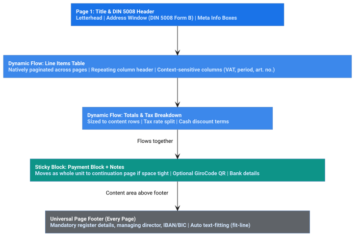
-
Header (DIN 5008 Form B): Letterhead, address window, and metadata info boxes sized strictly to populated rows.
-
Line Items: Tables paginate natively across continuation pages with repeating headers; optional columns (service period, article number, VAT rate) render conditionally.
-
Totals and Payment: Payment block, totals, and notes flow dynamically. If space is tight, the payment block moves as a cohesive unit to the continuation page.
-
Universal Footer: Mandated company and register details appear on every page with automatic text fitting (
fit-line).
8.4.2. Quality Assurance
Automated conformance checks replace visual review:
-
PdfLayoutInspectorverifies type-area bounds, footer column spacing, and DIN 5008 address window coordinates. -
TypstInvoiceParityITenforces pixel-tolerance parity against the reference baseline across synthetic test fixtures. -
Downstream pipeline (
BasePdfStage, Mustang, veraPDF) validates PDF/A-3b compliance regardless of the underlying adapter.
8.5. Invoice Layout Delivery
The product ships exactly one invoice layout (ADR-030): standard-invoice.typ, a
classpath resource of kotlin-xpdf. There is no template catalogue — no database rows, no
upload, no per-profile or per-print-time choice, no feature switch. The layout changes only with
a release, in code; what the jar delivers is what every installation renders, and the
application cannot edit its own jar.
Consequently a job records no template fingerprint: generation_job carries the AI-check
choice and the trigger type, nothing about a layout, and the worker renders the invoice exactly
as received on the wire. A support case about a layout starts from the release version.
8.6. Invoice Lifecycle State Machine
InvoiceStateMachine (domain/invoice) is the single place in the domain that knows the legal
Invoice status edges; GenerationJob uses the same shape for its own lifecycle
(GenerationJobStateMachine). Each object owns a Map<Status, Set<Status>> of legal edges and
exposes isLegal/assertLegal/isTerminal/successors; every write path goes through it rather
than re-implementing the rule.
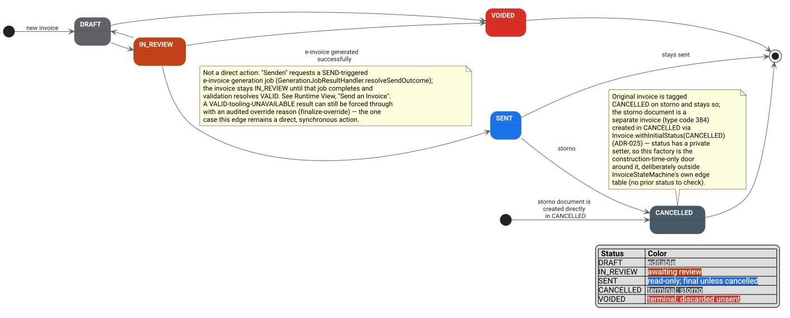
The legal edges, verified directly against InvoiceStateMachine.kt:
| From | To (legal successors) |
|---|---|
|
|
|
|
|
|
|
(terminal — no outgoing edge) |
|
(terminal — no outgoing edge) |
CANCELLED and VOIDED are terminal; SENT is not — it keeps exactly one outgoing edge, the
storno of a sent invoice. isReadOnly is the narrower predicate an editing view needs ("no longer
accepts header/item edits"): true for every terminal status plus SENT, which otherwise accepts no
edit. Absent a storno, an invoice stays SENT permanently — the normal, read-only end of its life.
A storno moves the original invoice SENT → CANCELLED, the one legal edge SENT has, and
separately constructs a second document — a full 1:1 copy of the original — born directly in
CANCELLED, without walking DRAFT → IN_REVIEW → SENT: there is nothing left to draft, review, or
correct on an already-sent invoice. Because it never reaches a SENT edge, the storno document draws
its own invoice number when it is created, from the same number range and journal as every other
invoice; only then is the original moved to CANCELLED. This construction sits outside InvoiceStateMachine’s edge
table by design, since there is no prior status to transition from. `Invoice.status has a private
setter (ADR-025), so this born-terminal construction and synthetic demo/test data (the
only two legitimate callers) go through Invoice.withInitialStatus(status), a companion factory
that is deliberately outside InvoiceStateMachine’s legality check for the same reason: there is
no prior status on a brand-new instance for the edge table to apply to. `transitionTo remains the
only way to change the status of an invoice that already exists.
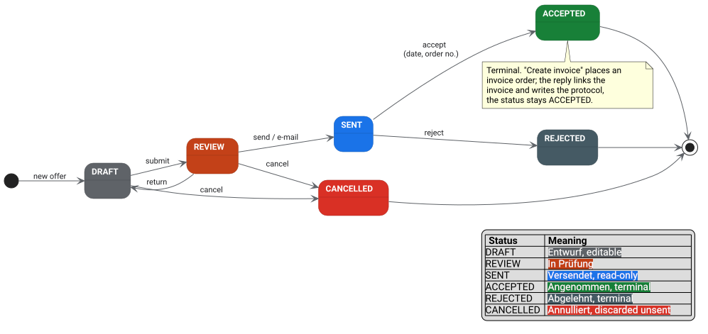
QuoteStateMachine (quote-core) owns the offer edges: DRAFT → REVIEW/CANCELLED, REVIEW →
DRAFT/SENT/CANCELLED, SENT → ACCEPTED/REJECTED. ACCEPTED, REJECTED and CANCELLED are
terminal; that an invoice was created from an accepted offer is recorded on the invoice order and in
the protocol, not as a status (ADR-036). Both diagrams use the colours of the shared status
chip tones, so the same meaning carries the same colour in the lists and in the diagrams.
An illegal transition is a programming error, not a recoverable runtime condition: assertLegal
throws, naming both statuses, and the UI never hard-codes its status-change buttons — it builds
them from successors(currentStatus), so a button for an edge that is not legal cannot exist to be
clicked. Status is persisted as an integer ordinal code (see Persistence below).
The IN_REVIEW → SENT edge is legal in the table above, but walking it is never a direct,
synchronous UI action: "Send" only requests a SEND-triggered GenerationJob and returns
immediately, the invoice stays IN_REVIEW while that job is in flight, and
InvoiceLifecycleService.transition(id, SENT) itself runs only once the job completes and
validation resolves VALID — see Send an Invoice in the Runtime View for the
full sequence. No new InvoiceStatus was added for this: the in-flight state is visible via the
job’s own GenerationJobStatus, not an invoice-level one.
8.7. Compliance Rules and the Finalization Gate
domain/compliance (kotlin-invoice) is a small rule-evaluation engine, not one monolithic
completeness check: independent rule sets each look at an invoice, or a piece of master data, and
report their own findings; a caller composes exactly the rule sets a situation needs.
8.7.1. Rule Sets, Subjects, and Findings
A ComplianceRuleSet declares a stable id, the ComplianceLevel`s it applies to (`SELLER,
BUYER, CATALOGUE, INVOICE), and a pure, read-only evaluate(subject). ComplianceSubject is
a
sealed interface, so the same mechanism checks an invoice recipient or invoice issuer as a
standalone master record
and, in the context of one particular invoice, its effective (possibly overridden) party.
ComplianceEvaluator filters rule sets by the subject’s level and flat-maps their findings, in
declaration order.
A ComplianceFinding carries a ruleId whose prefix names its source (BR- EN 16931 itself,
LT- a house rule, CORE. the application’s own completeness checks, B2B. a user-defined B2B
profile rule), a ComplianceSeverity (ERROR blocks finalization; WARNING/INFO never do), a
messageKey resolved to text only by the UI, and a FindingTarget naming where it surfaces
(header, a line, seller, buyer, or a catalogue item/article).
8.7.2. The Rule Families
| Rule set | Blocks finalization when |
|---|---|
|
A mandatory header, party, or line field is missing. |
|
A field a B2B profile marks mandatory/conditional has no value once its trigger applies. |
|
Never — warning only; the stricter case is already a hard save-time |
|
The document engine is Factur-X (standby route, kept but not developed further) but neither party is in Factur-X scope. |
|
The engine is Factur-X, the recipient’s country is France, and no SIRET is set. |
8.7.3. The Finalization Gate
FinalizationGate judges the validation run, not the invoice’s own content: given the
ValidationStatus, the resolved validation profile, and the last KoSIT findings, it returns
Allow, AllowWithWarning, or Block with a reason. FinalizationPolicy invokes both the gate
and the rule-set evaluation from InvoiceLifecycleService.transition, only on the → SENT edge of
the Invoice Lifecycle State Machine, after the invoice’s number
is assigned but before the status itself flips. Each axis runs behind its own three-stage rollout
switch (OBSERVE logs only, WARN logs louder, BLOCK enforces), so a rule already proven safe
can block ahead of a global stage change via an explicit allowlist.
transition(…, SENT) is driven by Send an Invoice's job flow. In the normal
path GenerationJobResultHandler.resolveSendOutcome calls it once a SEND-triggered job’s
validation resolves VALID, not the UI click directly; a ValidationStatus.UNAVAILABLE outcome
allows one manual escalation, an overrideReason supplied by the Office Manager, reached from its
own
explicit UI action instead of the "Send" button.
8.8. Invoice Numbering and the Number Journal
Assigning an invoice number is not just formatting a string: an issued number must never be reused and never silently skipped. Three cooperating pieces implement that: the number range configuration, the counter that hands out the next value, and an append-only journal that records every allocation.
8.8.1. Number Ranges and Allocation
A number range is reference data, not code: it picks which kind of record draws from it (invoice,
invoice recipient, catalogue, invoice issuer), where the prefix comes from, how much of the date is
embedded in the
formatted number, the zero-padding, whether issuers share one sequence or each gets its own, and
whether the counter resets yearly. continuity is what the concurrency behavior actually hangs on:
invoice numbers are gapless, everything else only needs to be unique.
A gap-tolerant allocation commits in its own, immediately-committed transaction — a gap left by a
rolled-back save is acceptable there. A gapless allocation instead runs inside the caller’s own
transaction: a single atomic upsert on the counter row serializes concurrent allocation for the
same key, and a rollback releases the number again rather than burning it. Because it shares the
invoice’s own transaction, the journal entry for a gapless allocation is appended in the same step,
so a rollback reverts the counter and the journal entry together. The invoice number itself is
allocated on the Invoice Lifecycle's → SENT edge, inside the
same transaction the status change commits in; a storno document, which is created directly in
CANCELLED, is numbered at creation in the same way.
A yearly-resetting range’s boundary is the invoice’s own business date, not the wall-clock instant
the allocation transaction commits at: allocation takes invoice.invoiceDate, a calendar date read
in the business zone Europe/Berlin, never the UTC instant of the commit
(ADR-029). A → SENT transition at 00:30 on 1 January Berlin time, while UTC still
reads 31 December, therefore dates and numbers the invoice into the new year, as the user sees it.
Quote numbers follow the same split as the ranges above, with the definition and the counter in
different modules: the number range with the subject QUOTE (prefix, date part, counter width,
reset cycle) is reference data of the invoicing module and reaches the quote module through the
master-data replica, while the gapless counter lives in quote.quote_number_range per
(range_code, period_key) and is drawn inside the quote module’s own status-changing transaction
("submit for review"). The invoicing module never allocates quote numbers. See ADR-033.
8.8.2. The Number Journal
Only gapless ranges are journaled — a merely-unique range’s gaps carry no audit weight. Each entry
records the event, the allocated number, which entity it went to, an actor and timestamp, and a
hash chaining it to the entry before it. The table is append-only at the database level, not only
by convention: a database rule turns any UPDATE/DELETE against it into a no-op, regardless of
role. Concurrent appends to the same chain are serialized by an advisory lock held for the
transaction, not a row lock on the range.
Sealing a period appends a summary entry so the chain head at that moment can be recorded outside the system and compared back later; sealing the same period twice is rejected rather than creating a second, ambiguous head. The journal’s self-check verifies, per period, that every expected sequence number appears exactly once and that the hash chain is intact; a complementary check diffs the journal’s allocations against the actually-sent invoices, to catch a number that reached the invoice table without going through allocation, or one invoice that drew two numbers.
8.8.3. Independent Verification
A separate program, written in Go and deliberately sharing no code with the Kotlin chain implementation, re-derives the same hash chain independently and re-checks a range’s journal rows against a live database. The reasoning: a report only the audited application itself can produce is self-testimony; a second, independently written program reaching the same result is evidence. It is exercised in the test suite, which asserts it reaches the identical verdict for a clean chain, a tampered hash, a mismatched externally-supplied seal, and a smuggled control character. The binary itself remains a DevOps tool, run against a real database connection — not something CI invokes against production data on its own.
The property all three pieces protect is narrow: once an invoice number is issued, it can be shown — years later, by a program that never trusted the application that wrote it — to be exactly the number it was.
8.9. Persistence
8.9.1. Master-Data Aggregate Child Updates
SenderProfile owns additional VAT registrations. Article owns customer-specific
article numbers/designations and country tax variants. Each aggregate validates the
complete proposed child set before modifying its managed state. The natural keys are
country and customer identity, respectively. Existing child rows retain their database
identity; only added keys create rows and only omitted keys remove rows. Clearing and
reinserting a collection is prohibited because insert-before-delete ordering can violate
the unique parent/key constraints.
The shared domain function reconcileOwnedChildren implements this mechanism through
composition. It snapshots and validates proposed values and prepares new children before
mutating the owned collection. Each aggregate supplies its own key, validation, factory and
field-update operations; the helper has no persistence or transaction dependencies.
Public collection views are unmodifiable. Seller VAT changes enter through immutable
SellerVatRegistrationCommand values; the aggregate validates and normalizes their content.
Commands express intent, while the aggregate enforces uniqueness, valid values and ownership.
The existing full-form application save remains one transaction, reloads the managed root,
checks the submitted revision and advances its version for child-only updates. A stale form
must fail rather than replace newer child data. Commit completes before success is returned.
AbstractCrudView provides shared revision checks through typed hooks. Article and seller
form DTOs retain the revision captured when the dialog opens. Section supplies full-width,
border-box layout by default; individual forms control responsive field arrangement.
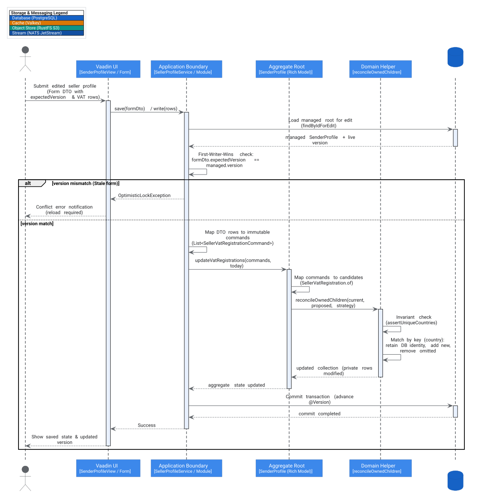
Domain regression tests protect validation-before-mutation and child identity. PostgreSQL E2E tests cover repeated saves, added/removed keys and stale forms. Architecture tests pin private persistence collections and mutation entry points. JPA remains the domain write-model mapping under the project’s pragmatic architecture decision.
8.9.2. Invoice Aggregate Encapsulation and the Command/DTO Boundary
Invoice follows the same shape (ADR-025): status has a private setter —
transitionTo (state-machine-checked, see Invoice Lifecycle
State Machine above) and the construction-time-only withInitialStatus factory are the only
ways to set it — and items/documents/partySnapshots are typed List, so addItem/
removeItem/applyPartySnapshots remain the only mutation path. The Kotlin List/MutableList
split is compile-time only (both erase to java.util.List), so Hibernate’s field-access hydration
of these @OneToMany collections is unaffected; only an ordinary caller’s ability to alias and
mutate them is removed. receipts and llmAnalyses are deliberately left as mutable collections
for now — an open follow-up named in the persistence decision, not silently claimed as migrated.
The write boundary itself is checked, not only documented: de.littletrotter.application.command
defines three marker interfaces — Command, CommandResult, CommandEntryPoint — because
commands share their package with plain application services, so a class-name suffix alone cannot
tell a rule which types the six architecture rules below apply to.
| Rule | What it checks |
|---|---|
Command purity |
A |
No entity leak |
No method on a |
No direct UI mutation |
No |
Immutable commands |
A |
Domain independent of commands |
Nothing in |
Entry points in the application layer |
A |
Each rule is proven twice in CommandBoundaryArchitectureTest: once against production code (must
pass) and once against a small, deliberately violating test-only specimen (must fail) — a rule
that only ever passes on the code that already existed is not evidence it would catch a real
regression. The no-entity-leak check covers the invoice read entry point
InvoiceDetailQueryPort.findLlmAnalyses:
it returns the ModelReport projection (in application.dto), mapped once at the read boundary,
never the InvoiceLlmAnalysis entity
(ADR-025).
8.9.3. Why JPA
JPA (Hibernate ORM with Panache, under Quarkus) is the persistence approach here because Quarkus
treats it as first-class — dev services, Panache repositories, and declarative transaction handling
come from the same integration — and because it lets the domain model
(Domain Model, Chapter 5) be written once, as JPA entities, rather than kept as a
separate persistence model alongside a domain model. JPA is deliberately not asked to own the
schema: quarkus.hibernate-orm.schema-management.strategy=none in every profile, so Flyway’s
baseline migrations are the single source of truth for DDL (ADR-011,
ADR-017)
— nor to cascade a write across aggregate boundaries
(Aggregates at a glance, Chapter 5): each aggregate persists through its
own root, never implicitly through another’s. Query-level JPA access patterns (pagination, fetch
joins, LIKE escaping) are hardened per ADR-006 rather than described again here.
8.9.4. Enum Columns
JPA entities follow one converter convention throughout: every enum-typed column is persisted as
an integer code, never as a string or a raw ordinal exposed without a range check, where
declaration order and business meaning could drift apart. Two column styles coexist by design:
INTEGER columns with a CHECK (value BETWEEN 0 AND max) constraint (invoice.status,
validation_status, currency, generation_job.status, and others), so appending a new enum
constant never requires a schema change, and SMALLINT columns (e.g. system_message.severity,
recipient.vat_id_verification_status). Either way, most enums use the generic
OrdinalEnumConverter<E>
base class (domain/shared/converters, domain/reference/converters) with the enum’s ordinal as
the code; B2bTermConverter is the one exception, converting by an explicit numeric code
(B2bTerm.code) because its declaration order does not match its BT numbering. InvoiceStatus
uses InvoiceStatusConverter, an OrdinalEnumConverter instance over the INTEGER-with-
range-check style — see Invoice Lifecycle State Machine
above for its specific edge table and ordinal mapping.
8.9.5. Flyway Baseline
Schema and seed data are managed by an editable Flyway baseline: V1baseline_schema.sql (DDL)
and V2baseline_seed.sql (seed data) under kotlin-invoice/src/main/resources/db/migration/ddl
and …/seed. The mail component keeps its own baseline in kotlin-email under the same rule;
which baseline runs when is described in the
Deployment View.
While no live instance exists yet, these two files are edited in place rather than accumulating
V3, V4, … migrations for every schema change — a deliberate greenfield decision that trades
migration history for a single, always-current baseline. The directory hygiene test enforces
exactly these two files, and fresh isolated PostgreSQL checks verify schema and reference data.
The approach ends the moment a real deployment’s data must survive an upgrade.
8.9.6. Time and Timezone Handling across Database, Streams, and Object Storage
As a foundational design principle, all technical systems record and exchange points in time
strictly in UTC:
* Database: The database never reads its own clock (ADR-029). No column has a
DEFAULT NOW() or CURRENT_DATE; the application writes every date and timestamp from its
TimeSource, in UTC (TIMESTAMPTZ, Hibernate property quarkus.hibernate-orm.jdbc.timezone=UTC).
Where the database must stamp a moment itself — the invoice audit trigger’s occurred_at — it reads
the session setting app.now, which AppNowConnectionInterceptor sets on every connection taken
from the pool, and rejects the write when the setting is missing. Writers outside the application
(admin scripts, the datagen loader) set app.now themselves. A test that fixes the TimeSource
therefore fixes the journal’s timestamps as well.
* Messaging and Event Streams: All message envelopes, event payloads, and timestamps published to
NATS JetStream (e.g. GenerationJob, document-job-results) convey instants strictly in UTC
(ADR-008, ADR-020).
* Object Storage (RustFS): Object metadata, timestamps, and S3-compatible attributes stored in
RustFS adhere strictly to standard UTC (ADR-007).
On top of this uniform UTC foundation, users interact with the system in their local time,
respecting standard daylight saving transitions (DST, winter/summer time). The system default is
German local time (Europe/Berlin, via GermanTime.ZONE, ADR-005, ADR-029).
A stored UTC moment becomes a business day strictly through GermanTime.dayOf(…) (kotlin-shared),
never via OffsetDateTime.toLocalDate() on a UTC value or process-level ZoneId.systemDefault().
This prevents critical boundary distortions across midnight: between 00:00 and 01:00 (winter time)
or 02:00 (summer time), UTC still reflects the previous calendar day. Architectural gates in ArchUnit
(TimeRules.businessDay) enforce that production code never bypasses GermanTime.dayOf when deriving
calendar days from stored moments.
Persisting in UTC while decoupling the user’s localized presentation also provides the architecture with the direct capability to support multi-timezone operations across geographically distributed branch offices (Niederlassungen) for mid-sized enterprises (Mittelstand).
8.9.7. Concurrent Editing
Concurrency control across independent user sessions is strictly optimistic, using one JPA
@Version per aggregate root, and no lock is held across user think time (ADR-028). The
decision record also holds the rationale and rejected alternatives. This mechanism is distinct from
Locking, which serializes concurrent transactions within a single request.
8.9.7.1. Core Mechanism: First Committed Writer Wins
Editing contexts (dialogs, forms, grids) capture the aggregate version at read time and submit it as
expectedVersion in mutation commands (e.g. UpdateInvoiceHeaderCommand, InvoiceItemCommand,
TripCommand). The application layer enforces consistency before mutations occur:
-
Pre-mutation Version Verification: The current managed aggregate is loaded. If
expectedVersion != aggregate.version, the operation is aborted immediately without modifying state. -
Conflict Handling: Version mismatches throw
jakarta.persistence.OptimisticLockException, mapped by UI layers (UiNotifications) to a dedicated conflict notification. User input is preserved in the view for manual reconciliation. An update racing a successful delete of the same row affects zero rows, which Hibernate reports as the sameOptimisticLockException;ArticleManagementService.saveandCustomerManagementService.savetherefore flush inside their own try/catch and re-check existence on a caught conflict, reporting the readable "wurde inzwischen gelöscht" rejection instead of the ambiguous exception. -
Concurrent Deletions: Mutations on rows deleted concurrently abort with a domain not-found exception, never re-inserting the row; stale deletes are rejected like stale updates.
-
Foreign-Key Concurrency: Deletions of referenced master data (e.g.
Recipient,Article) racing in-flight invoice writes are resolved via explicit repository flush and translated into actionable domain errors rather than raw database constraint violations:PanacheInvoiceRepository.saveflushes immediately and maps the named violations (invoice_recipient_id_fkey,invoice_sender_profile_id_fkey,invoice_item_article_id_fkey) to a readableInvalidParameterException, and the master-data repositories'deletedoes the same in the opposite direction.
8.9.7.2. Aggregate-Wide Version Increment (OPTIMISTIC_FORCE_INCREMENT)
Child collections such as Invoice.items and Invoice.trips are mappedBy collections whose
children own the foreign key, so a child-only edit does not dirty the Invoice root. Every item and
trip mutation (InvoiceItemMutationService, TripService) therefore calls
InvoiceRepository.forceVersionIncrement(invoice)
(em.lock(invoice, LockModeType.OPTIMISTIC_FORCE_INCREMENT)), which forces
UPDATE … SET version = version + 1 WHERE id = ? AND version = ? on commit. The whole aggregate
shares one authoritative version (ADR-028).
8.9.7.3. Per-Entity Concurrency Matrix
| Entity | Version Anchor | Update Conflict Strategy | Delete Conflict Strategy |
|---|---|---|---|
|
|
Pre-check vs. |
Hard deletes prevented by domain invariants (only voiding permitted). |
|
Owning |
Pre-check vs. |
Requires matching |
|
|
Pre-check vs. |
Rejects delete if row version is stale. Cascading in-flight references protected by FK exception mapping. |
Reference Catalogues |
Row |
Checked via |
Same as update strategy. |
8.9.7.4. Verification Model
The concurrency contract is validated across four automated tiers:
-
Unit and Component: Isolated domain/service tests and Karibu UI mock tests.
-
Foreign Key and Race Integration: Real PostgreSQL ITs (
InvoiceForeignKeyRaceIT) validating FK conflict translations. -
High-Concurrency Invariants: Multi-threaded stress test (
ConcurrentCrudStressE2EIT), verifying zero deadlocks (pg_stat_database), deterministic version progression (no lost updates), and recovery semantics. -
End-to-End User Simulation: Browser-level Playwright specs (
two-user-conflicts.spec.ts) validating UI input preservation upon conflict.
8.9.8. Locking
A transaction that must hold both a shared advisory lock and one or more row locks acquires the advisory lock first — the lock-first ordering rule — before touching any row the advisory lock is meant to protect. A row lock taken before the advisory lock, followed later in the same transaction by a wait on that advisory lock, lets two concurrent transactions each hold what the other one waits for (a classic AB-BA cycle); acquiring the advisory lock first removes the cycle by construction, since the first lock every such transaction takes is always the same one, so no interleaving of concurrent transactions can produce two of them each holding what the other waits for.
Two writers apply the rule:
-
The invoice audit journal serializes every append behind one global advisory lock,
pg_advisory_xact_lock(1308).AuditGucInterceptoracquires it right after setting the audit GUCs, before the intercepted method body writes anything — the same pointPostgresNumberJournalRepository.lockChainalready takes its own per-range lock (1304) for the number journal (The Number Journal above). The capture trigger,capture_invoice_audit_event(), re-acquires the same lock as a safety net for a write that reaches these tables outside the application; re-acquiring a lock the transaction already holds is free. -
The generation-job stale-delegated reset’s write step (
PanacheGenerationJobRepository.resetStaleDelegatedByIds) re-selects the ids its own read step already decided on,ORDER BY j.idwith aPESSIMISTIC_WRITElock and a lock-timeout hint Hibernate maps to Postgres'FOR UPDATE SKIP LOCKED, then updates one row per statement — one fixed, ascending order instead of the arrival order of concurrent callers, and no bulk statement that would keep every row lock it has already taken while it waits for the next one — so a concurrent transaction holding onegeneration_jobrow is skipped rather than raced against in the opposite order. The read step that decides which ids to reset (StaleDelegatedResetCoordinator, see Messaging and Event-Driven Architecture below) runs before this lock is ever taken and involves a NATS round trip — deliberately never inside the lock-holding transaction, so a slow or unreachable broker can never turn into a Postgres lock-wait pile-up ongeneration_job.
8.9.9. The Excel Export’s Read Side: A Dedicated Projection, Not the Aggregate
The Excel export (Chapter 5) reads through InvoiceExportReadRepository, a
JPA Criteria-API query returning scalar tuples (Array<Any?>, decoded column-by-index into row
DTOs), rather than loading Invoice JPA entities the way every other read path in this
application does. That is a deliberate exception, not an oversight, forced by three traps a plain
findAll/entity-graph read would walk straight into for this one use case:
-
Invoice.referencesis a write-triggering accessor. Reading it outside a transaction that is prepared to persist the result marks the entity dirty on first touch (a lazy-initialization side effect elsewhere in the domain model, not a bug specific to export) — and an export over a filtered set of possibly thousands of invoices is exactly the kind of read that must never accidentally schedule thousands of writes. -
InvoiceNumberConverterthrows on a malformed stored value. An entity-based read decodes every converter-backed column as part of materializing the entity; one invoice with unparseable legacy number data would abort the whole export instead of just that row’s number column. A scalar projection defers decoding to the row mapper, which degrades one field, not the export. -
Loading full aggregates for a read that only ever renders a fixed set of columns is needless N+1 risk — the projection selects exactly the columns each sheet needs, across a
LEFT JOINwhere a value is optional (e.g.articleRef’s article number, the invoice’s own `invoice.currency), and nothing else.
The cost of this choice is that adding a new exported column means adding a Criteria selection,
an Idx constant, and a row-mapper decode step in three places kept deliberately parallel (see
`InvoicePositionRowMapper’s own column-index KDoc table) rather than simply reading a new getter
off an already-loaded entity — a small, explicit tax paid once per column, in exchange for an
export that cannot dirty an invoice or abort on one bad row.
8.9.10. Caching (Valkey)
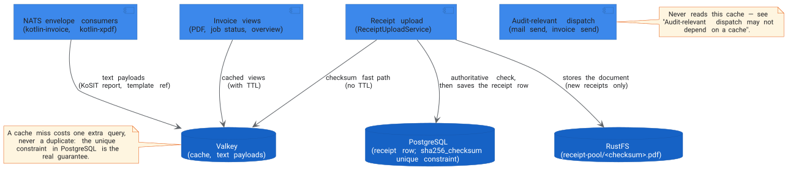
Valkey is the one cache in this system, used for three distinct things: the text-payload
exchange behind NATS envelopes (KoSIT reports and trip workbooks — see
Messaging and Event-Driven Architecture
below), the receipt-checksum fast path ahead of the database’s own unique constraint (see
Upload Receipt in the Runtime View for why that constraint, not the cache, is
the actual duplicate-prevention guarantee), and a handful of application-level read caches
(ValkeyInvoiceCacheClient: rendered PDF bytes, job-status lookups, and invoice-overview query
results — all TTL’d, all degrading to a plain cache miss rather than an error on a Valkey
outage). The one rule that holds across all three, stated once here because it applies system-
wide: audit-relevant dispatch never depends on this cache — see
Audit-Relevant Dispatch May Not Depend on a
Cache under Messaging.
8.10. Messaging and Event-Driven Architecture
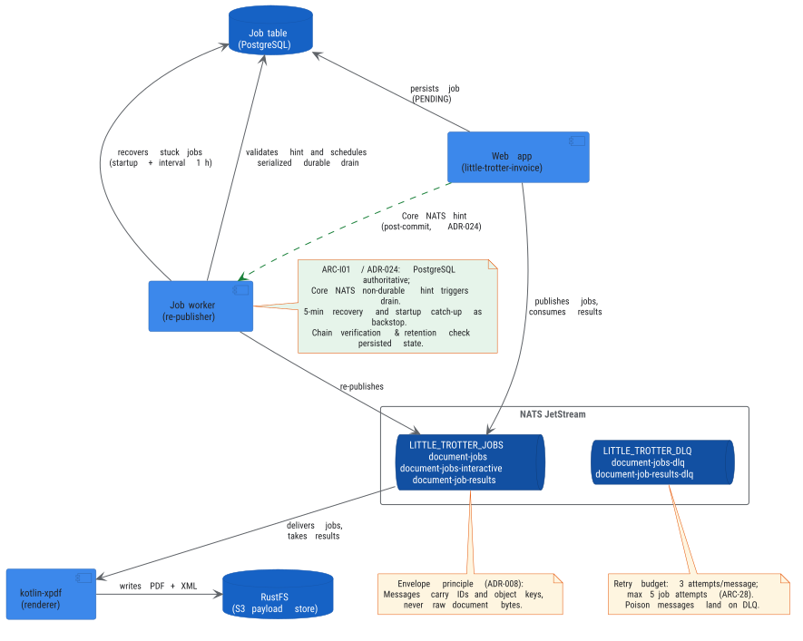
An event in this architecture is a lightweight reference envelope published on NATS JetStream
(document-jobs, document-job-results) — never raw document bytes (ADR-008). Heavy
binary artifacts reside in RustFS (S3), while transient text payloads live in Valkey.
8.10.1. Event Backbone: NATS JetStream
The messaging tier uses NATS JetStream as its durable event backbone (ADR-020): a
lightweight Go broker delivering persistence, at-least-once guarantees, and consumer groups on
low-power hardware. The Green IT rationale (Green IT Principles) adds a
<128 MiB broker footprint, sub-100 ms startup, negligible idle draw, and power-off tolerance via
PostgreSQL recovery, which makes a durable event-driven architecture viable on a mini PC that could
not sustain a JVM-cluster broker. The broker is isolated in infrastructure.messaging behind
domain command and result ports; replacing it with another broker is an adapter change
(ADR-020).
8.10.2. Workers and Recovery Mechanics
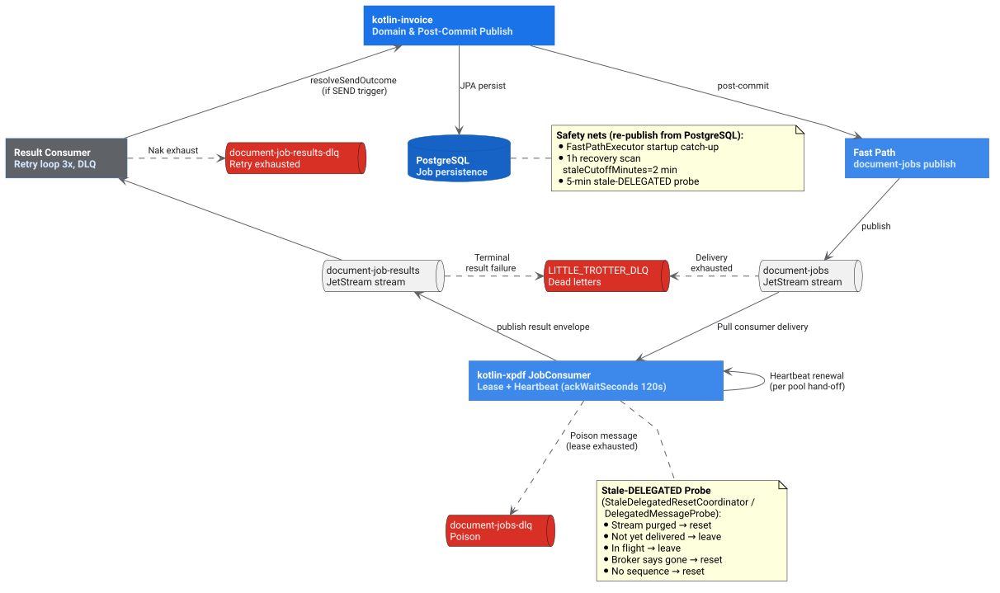
The generation pipeline is asynchronous: kotlin-invoice publishes a GenerationJob onto NATS
JetStream (DocumentJobPublisher, GenerationJobNatsAdapter), kotlin-xpdf consumes it,
renders, validates, and publishes a result back on the document-job-results subject
(ResultPublisher / GenerationJobResultConsumer). The envelope principle keeps NATS messages
small: only a typed reference structure (GenerationJobResultRefs in kotlin-shared — object
keys, a download URL, LLM-callback fields) travels over NATS. Text payloads (KoSIT validation
reports) are exchanged via Valkey behind a PayloadExchange port, keyed by a reference the
envelope carries; PDFs and other binary artifacts live in RustFS (S3-compatible object storage),
referenced the same way. A missing/expired Valkey entry degrades to a logged warning and a null
report, never a processing failure.
8.10.2.1. Dispatch Fast Path and Safety Nets
Document generation uses a reactive primary path complemented by multi-tiered recovery mechanisms to balance near-instantaneous execution with crash-resilient guarantees.
Fast Path (Event-Driven Primary Flow)
-
Job Creation and Enqueueing: A
GenerationJobis persisted to PostgreSQL in statusPENDINGwithin the primary business transaction. -
Post-Commit Dispatch: Immediately following successful database commit, a post-commit flush publishes a dispatch message to the JetStream stream
document-jobs(bulk lane) ordocument-jobs-interactive(interactive lane), chosen from the lane stored on the job. -
Execution:
kotlin-xpdfacts as the dedicated stream consumer (JobConsumer), retrieving work directly via event streaming without polling delay.
Safety Nets (Durable Recovery Paths)
To protect against process crashes, uncommitted stream publishes, or network partitions, background safety nets ensure self-healing:
-
Startup Recovery:
FastPathExecutortriggers an asynchronous sweep upon worker initialization, enqueuing uncompletedPENDINGjobs created before restart. -
Periodic Fallback Sweep:
GenerationJobProcessorruns a low-frequency background scan (invoice.jobs.recovery-interval, default 1 h) guarded against concurrent overlapping execution. This serves strictly as an emergency catch-up path for lost event notifications. -
Stale Job Re-delegation: A dedicated probe evaluates jobs remaining in
DELEGATEDstatus beyondstaleCutoffMinutes(default 2 min) against the broker’s stream cursor before re-dispatching (see Stale-DELEGATED Probe). -
Exhaustion and Dead-Lettering: Jobs exceeding retry budgets and broker ack leases are routed to
LITTLE_TROTTER_DLQfor diagnostic quarantine.
Architectural Trade-Offs
| Dimension | Assessment |
|---|---|
Latency and Efficiency |
Sub-second rendering turnaround under normal operation. Minimizes database I/O by replacing continuous polling with event notifications. |
Delivery Semantics |
JetStream provides at-least-once delivery. Consumers and downstream result processors must enforce strict idempotency and durable claim semantics. |
Operational Complexity |
System recovery relies on coordinated states between transactional storage (PostgreSQL) and the message broker (JetStream), requiring deep diagnostic observability across both layers. |
8.10.2.2. Stale-DELEGATED Probe
A DELEGATED GenerationJob is re-published (on the subject of its stored lane) only when its document-jobs or document-jobs-interactive message no longer
exists in the stream — never merely because a database timestamp looks old. GenerationJob carries
delegatedAt/delegatedStreamSeq (the JetStream sequence its own publish landed at, from the
PublishAck), stamped in the same write as its PENDING → DELEGATED transition. Once a row is
older than staleCutoffMinutes (default 2 min) it becomes a candidate, not an automatic
reset.
StaleDelegatedResetCoordinator asks the broker through DelegatedMessageProbe:
| Probe finding | Action |
|---|---|
Candidate’s sequence past the stream’s last sequence |
Stream was purged and recreated → reset (outright). |
Still ahead of the worker consumer’s delivered cursor |
Never even handed out yet (queued backlog or worker down) → leave alone. |
Delivered and the broker still has the message |
In flight or awaiting redelivery under `JobConsumer’s JetStream lease → leave alone. |
Delivered and the broker reports it gone |
Acked, purged, broker data lost, no result ever recorded → reset, incrementing |
No sequence was ever recorded |
The publish ack never arrived → reset (same path). |
A worker being down can therefore never burn a job’s attempt budget on its own — an undelivered message is never a reset candidate in the first place. A broker failure while deciding aborts that whole tick’s reset without touching any row, logged once at WARN, retried on the next tick.
One GenerationJob purpose reads this same result delivery as more than a status update:
GenerationJobResultConsumer calls GenerationJobResultHandler.resolveSendOutcome as a plain,
synchronous, sequential continuation right after markCompleted/markFailed, for any job whose
trigger is SEND — see Send an Invoice in the Runtime View. This is
deliberately not another observer on the DocumentGenerated event above: those observers are
independent and unordered by design (so one reaction’s failure never rolls back a sibling’s), which
is exactly wrong for a step that must run only after the validation-status resolution has already
happened. resolveSendOutcome instead re-derives the outcome directly from the job’s own
already-persisted KoSIT report and, only on VALID, calls InvoiceLifecycleService.transition.
Nothing here polls: the worker’s result message is already the trigger, matching
Green IT Principles — no new @Scheduled bean exists for this feature.
A late-but-genuine result for a job whose own stale-DELEGATED reset already
raced it back to PENDING is reclaimed through the state machine’s existing
PENDING → DELEGATED → COMPLETED|FAILED edges rather than rejected — a defense-in-depth safety
net for that residual race, not a loosening of the state machine’s edge table.
8.10.2.3. Lease, Retry, and Dead-Letter
kotlin-xpdf’s `JobConsumer holds each message under a JetStream lease (ackWaitSeconds,
default 120 s) for as long as this JVM is actually holding it — queued behind other work or
rendering — renewed by a periodic in-progress heartbeat scheduled at hand-off to the worker’s
bounded thread pool, not only once rendering starts, so a burst that queues more jobs than the
pool can immediately start never lets a merely-queued job’s lease lapse. max_deliver on that
lease is unbounded by design (JetStream, not this consumer, owns ordinary redelivery); a message
whose own delivery count exceeds the worker’s configured retry budget is instead treated as
poison and routed to document-jobs-dlq with a FAILED result, the same path an unparseable
payload takes — the bound against a message that can never durably have its result published
looping forever.
Idempotency and retry are implemented, not just intended: GenerationJobResultConsumer.consume
re-delivers into the same retry loop with exponential backoff (three attempts, doubling from
100 ms), clearing the JPA persistence context before every attempt so a poisoned first-level
cache entry from a failed flush cannot make every retry fail identically. A result for a job
already in a terminal state (COMPLETED/FAILED) is logged and dropped rather than reapplied,
so a re-delivered or duplicate message cannot double-write findings. Unrecoverable processing
failures (malformed payload, message handler exception) are routed to a dead-letter subject
(document-job-results-dlq) instead of retried forever; if the DLQ publish itself fails, the
message is nak()-ed for JetStream redelivery rather than dropped.
8.10.2.4. Maintenance Wake-Ups
The maintenance queue follows ADR-024: PostgreSQL is authoritative, while a committed request emits
a non-durable Core NATS hint on maintenance.v1.<instance>.requested. The worker validates the
hint and schedules a serialized drain; the maintenance recovery scan (invoice.maintenance.recovery-interval, default 5 min) remains the safety net. Each
short transaction uses a per-invoice claim-token fence. An interrupted RUNNING maintenance claim
becomes UNKNOWN and requires manual requeue; it is never auto-replayed. A failed or unknown
recalculation blocks dependent generation until a later successful recalculation. The drain keeps
recalculation ahead of issued-document generation.
The two daily tasks (ChainVerificationScheduler, SystemMessageRetentionScheduler) fire on a
plain @Scheduled(every = "24h") in-JVM timer, but each checks the most recent
DatabaseMaintenanceEvent of its own type before doing any work (one interval for the whole
maintenance cycle): a null last-run
event (fresh deployment) is due immediately, an event less than 24 h old is skipped, and an event
24 h or older is due again. A restart shortly after a real run does not re-run within minutes,
and a restart after the interval has already elapsed still catches up rather than silently waiting
for the next in-JVM tick. No energy or consumption measurement is part of this mechanism; no
consumption savings are claimed.
The pattern repeats above the job pipeline: every open invoice list, print-job list, and detail
view currently polls every two to five seconds regardless of whether a job is in flight
(LIVE_UPDATE_POLL_INTERVAL_MS/DETAIL_POLL_INTERVAL_MS),
which a planned change narrows to "only while a job is pending".
8.10.3. Mail Dispatch: A Second Producer, the Same Envelope Principle
The optional mail dispatch component (see Building Block View) joins this
picture without changing its rules. It owns its two streams and creates them itself: the invoicing
stack’s stream setup does not know them, so an instance without the component never creates them.
mail.send.requested stays private to the component — the internal dispatch queue between its
own API and its own SMTP consumer, which the invoicing application must never publish to. The only
subject that crosses the context boundary is mail.send.result, and it crosses in one direction:
component to application, fire-and-forget, surviving an application restart, with no callback
coupling in the opposite direction. The consumer for it is registered only while the feature is
enabled, so a mail-less instance has neither a stream nor a consumer waiting for one.
The envelope principle of ADR-008 is unchanged and, in fact, is the reason the compose handover is deliberately a REST call rather than a message: an interactive request whose answer a user is waiting for would otherwise have to park its payload in Valkey just to satisfy the envelope rule — adding a cache dependency to the interactive path. The rule the project keeps is therefore stated as a boundary, not as a transport preference: messaging carries everything that must survive; the one synchronous call carries the one thing a human is waiting for, and it creates no durable state that matters (a lost draft means the user clicks the button again).
8.10.4. Archive Handover: Status, Retry, Administrator Notice
The handover of a dispatched mail to the operator’s archive (ADR-037) is a second durable step after sending and never part of the send itself.
-
Status: per journal entry
MailArchiveHandoverStatus:NOT_CONFIGURED(no archive address),DISABLED(switch of the document family off),PENDING,HANDED_OVER(archive server answered SMTP 250) andFAILED(with error text and time). The axis is independent of the status of the signed archive package. -
Trigger and durability: the outbox handler for
MailSentsends the byte-identical message to the archive address as an envelope recipient only; the result is committed to PostgreSQL before success is reported, so a crash between sending and handover leaves a retryablePENDINGentry instead of a lost copy. -
Retry:
FAILEDentries are retried automatically with a limited number of attempts and backoff, in the pattern of the send sweeper; a manual retry is available on the journal endpoint. -
No lock: a failed handover never blocks or reverts the customer dispatch.
-
Administrator notice: a failure and a missing archive address produce a notice in the message center for administrators; the missing address stays visible until it is configured.
-
Configuration: archive address and the two switches (invoice, quote) belong to the mail component and are changeable by administrators only. The invoicing UI shows the status as a symbol in the mail journal and the dispatch log.
8.10.5. Audit-Relevant Dispatch May Not Depend on a Cache
A sent mail leaves the building and is evidence for the tax office, which makes one question architectural rather than an implementation detail of one service: which store may a dispatch in flight depend on? The answer the mail dispatch concept establishes, and which this documentation records as the system-level rule:
Nothing that can leave the building may depend on a cache. Valkey holds pre-decision state only — the compose draft. From the moment the user presses send, PostgreSQL and object storage hold everything the dispatch needs.
Concretely: the journal row and the authored content are written durably before any dispatch
envelope is published, the consumer reconstructs the whole send from those two sources, and what
is read back is verified against the checksums recorded at authoring time before a message is
built — a mismatch aborts with a recorded failure instead of sending. The failure mode this buys
is the mild one: a cache outage degrades to "no new mail can be composed" instead of "queued mails
fail", and it removes the class of defect where a truncated cache entry decodes into a
valid-looking order and a real invoice recipient receives an empty mail, or an invoice mail without
its
attachment, recorded as successfully sent. This differs on purpose from the generation path above,
where a missing Valkey payload is a documented degrade to a null validation report: a validation
report that does not arrive stays inside the system, a mail that does not arrive correctly does
not.
8.11. Input Ports
The UI and the inbound adapters reach the application layer only through input ports: role
interfaces cut per use case (ADR-027). There are no composite interfaces that bundle
several roles and no *Facade types; each caller injects exactly the ports it uses.
| Convention | Rule |
|---|---|
Package |
|
Reads |
|
Writes |
|
Reference data |
One |
Implementation |
One application-layer class per port, named after the use case ( |
Size |
At most 12 methods per port (overloads count individually), guideline ≤ 8; cut by caller cluster, not by single method. |
Composition |
No input port extends another; no interface combines two or more of the application’s own interfaces. |
Signatures |
DTOs and value types only; entities never cross a port. |
A view that needs many ports is split into injected sub-components rather than handed a parameter
object: InvoiceDetailView composes InvoiceCockpitHero, InvoiceDetailTabs and
InvoiceEntryPane, and each of them takes only its own ports. InputPortArchitectureTest checks
the package, naming, size and composition rules against production code and against violating
specimens; CommandBoundaryArchitectureTest covers the write ports.
8.12. UI Concept
The UI is built with Vaadin (server-side rendering, MainLayout as the shell). German is the
default display language and English the backup, both served from one bundle pair
(messages_de.properties/messages.properties, never resolved through the host JVM’s own default
locale). TranslationService (ui/i18n) implements Vaadin’s I18NProvider against that pair;
UiTranslations gives non-Vaadin call sites (dialogs, mappers, the invoice/trip workbook export)
the same lookup outside a component’s own translation context; I18nBundleResource serves the
resolved bundle as JSON at /api/i18n, read by the sibling Playwright suite so its label
assertions never drift from a hand-copied string. All three planes resolve a bundle value’s
{term:…} markers (the per-instance wording profile’s vocabulary substitution,
ADR-022) before any java.text.MessageFormat pass, since a term marker is not a valid
MessageFormat argument index and would otherwise throw. A missing translation key or an
unresolvable term marker both render visibly (!{key}!/!{term:name}!) and are logged once per
JVM lifetime, so neither is silently swallowed at render time; a parity test additionally checks
that every {term:…} marker used in either bundle resolves for all three wording profiles and
both locales, so a gap surfaces at build time rather than in production. Formatting call sites that
do
not go through the bundle (dates, month names, currency) construct Locale.GERMAN/
Locale.GERMANY explicitly (MoneyFormatter, TrendChart, list/detail views) instead.
Dark mode follows the OS color scheme, not an in-app toggle: AppShell injects a small inline
script that reads prefers-color-scheme before first paint and keeps following runtime OS
changes, setting theme="dark" on the document root; both Lumo/Vaadin components and the app’s
own CSS tokens (themes/littletrotter/styles.css) read the same attribute, so there is one
source of truth for light/dark rather than two independently toggled surfaces. Accessibility is
addressed incrementally at the component level (explicit ariaLabel`s on icon-only actions and
custom widgets) rather than through a single blanket mechanism; every UI/color change is checked
against contrast and dark-mode rendering as a matter of review discipline, per the project’s
color guidelines. Menu ergonomics (drawer behavior, breadcrumbs, notification bell/badge) are
covered by dedicated Karibu tests (`MainLayoutDrawerKaribuTest,
MainLayoutBellBadgeKaribuTest, MainLayoutBreadcrumbKaribuTest, and siblings).
The mail views are part of this UI: MailComposeView (mail/compose/:draftId, reached from the
send action on an invoice), MailJournalView (mail/journal) and MailTemplatesView
(mail/templates, with MailTemplateEditorDialog and MailTemplateHistoryDialog). The journal
filters, sorts and pages on the server, keeps filter, sort and page in the URL, shows status chips
and row details, exports to Excel and offers retry and re-archive for failed entries. The routes
are gated in RouteAccess by MAIL_COMPOSE_AND_SEND, MAIL_JOURNAL_VIEW and MAIL_TEMPLATE_EDIT
and use the same i18n bundles, theme and dark mode as every other view; the drawer entry and the
send action appear only while MailAvailability allows them.
8.13. Security and Operations
Caddy is the stack’s sole externally exposed service (docker/caddy/Caddyfile), terminating TLS
1.2/1.3 in front of the Vaadin/Quarkus application, setting HSTS/X-Content-Type-Options/
X-Frame-Options/Referrer-Policy headers, and blocking direct external access to Quarkus
management endpoints (/q/*) that a catch-all reverse proxy would otherwise expose. TLS_MODE
selects between Caddy’s internal CA (development/LAN) and Let’s Encrypt ACME (public domains) at
container-start substitution time, without changing the Caddyfile.
Every application-owned service in docker-compose.yml sets security_opt:
no-new-privileges:true; the applications' own containers additionally drop all Linux
capabilities (cap_drop: [ALL]) and carry explicit memory/PID limits under deploy.resources
(infrastructure services — Postgres, RustFS, NATS, Valkey — deliberately keep their default
capability sets, scoped out of the capability-drop by a documented decision, not an oversight).
Backups are a DevOps operation (not application code) and are age-encrypted end-to-end:
in Phase 1 (operational MVP until Q4/2027), admin-tools/scripts/backup/backup.sh executes backups and
never leaves a plaintext archive behind an unverified ciphertext — its scrub step refuses to delete plaintext
components unless a matching *.tar.gz.age file already exists in the target directory; in Phase 2 (from Q4/2027),
this is executed via lt backup under the consolidated management plane.
Authentik (OIDC) is not part of the repository’s base compose file; on the server it runs as a shared
service outside the instance projects and is the identity provider of every instance (Chapter 7).
Where it is used, it gets its own PostgreSQL database (little-trotter-auth) in the same
instance rather than a second Postgres instance or a shared schema, so an identity-store restore
never has to touch invoice data and vice versa.
8.13.1. Data Protection (GDPR)
The application processes personal data of invoice recipients and senders: customer master data,
contact persons, and e-mail addresses (mail dispatch). Issued invoices contain this data and are
subject to statutory retention: the legal retention period for invoices takes precedence over
erasure requests until it ends at the operator’s archive (ADR-035). The application has no
automated erasure, anonymization, or blocking function; personal data in master data is changed or
removed through the regular editors only. The workbook export carries a data-protection notice
section (ExportSheetWriter).
8.14. Test Strategy and Test Architecture
Testing is split across the projects in this repository’s own Maven reactor, plus one browser-E2E
project in the sibling little-trotter-admin-tools repository (see
Building Block View for how the two repositories divide the test and
tooling projects):
| Project | Scope | Mechanism |
|---|---|---|
|
Unit tests, JPA/Flyway integration tests (Testcontainers PostgreSQL), and headless Vaadin UI tests for views, layout, and menu ergonomics |
JUnit 6 + Testcontainers; Karibu Testing for server-side Vaadin components ( |
|
System-level integration tests exercising real infrastructure end-to-end (NATS redelivery/dedup,
S3 round-trips, receipt/print annexes, e-invoice generation) rather than mocked collaborators; also
carries the Karibu-based monkey suite — seeded random walks ( |
JUnit 6 + Testcontainers ( |
|
Aggregates unit, integration, and E2E exec data across |
|
Linter gates run as Maven exec-maven-plugin executions bound ahead of the test phase and are
mandatory, not advisory: ktlint-check and detekt-check (with a ratcheting baseline —
detekt-baseline-ratchet.sh — that only ever tightens) cover Kotlin, sqlfluff-check covers SQL
migrations, plus a config-format check; all four can be bypassed locally only via an explicit
-DskipLinterGates=true flag, never silently. The sibling repository’s make playwright
CMD=check target runs a TypeScript check and a traceability matrix (tools/spec-matrix.ts)
reporting which specification scenario IDs are implemented, marked fixme, or still open — the
same scenario-ID convention that makes Playwright and Kotlin E2E test titles traceable back to
their originating specification without a separate mapping document.
8.15. Error Handling and Validation
Validation is layered, each layer catching a different class of mistake before it reaches the
database. At the UI, editor forms validate per field via Vaadin’s Binder (IBAN, email, postal
code, and similar single-purpose validators) before a save is even attempted. Below the UI, the
domain enforces its own invariants independently of whatever the Binder already checked, because
not every rule is expressible per field (e.g. a cross-object consistency check); these surface as a
small, typed exception hierarchy — not-found, illegal transition, immutable, storno-not-allowed,
and one consolidated field-validation exception carrying a machine-readable error code rather than
pre-rendered text. At the application boundary, a translator narrows that variety down to three
generic outcomes — bad input, not found, conflict — that a UI presenter can react to without
knowing domain vocabulary. Above both, the
Compliance Rules and the Finalization Gate are a
later layer: they judge the invoice as a whole, at the one moment (the → SENT transition) after
every per-field and per-object check has already passed.
Every resolved error reaches the user through one shared notification component, distinguishing auto-dismissing confirmations from warnings and from errors that require an explicit close, rather than through ad hoc alerts scattered across views; an exception resolves to displayed text only through an i18n bundle key, never a hard-coded string. Every shown error is also persisted to the Message Center with a short dedup window, so a repeating failure does not flood the log and an admin auditing the system later sees what users saw live.
Background job failures are a distinct case: nothing is on the call stack of a user action to catch. Their retry and dead-letter semantics are covered in Messaging and Event-Driven Architecture above; from this section’s perspective, a terminal job status is simply a normal, renderable UI state, not an exception a view has to catch.
The one rule that matters for an audit-relevant path: a Block from the finalization gate is never
bypassable from the UI — there is no "save anyway" affordance — and whether a check currently
blocks at all is itself staged (OBSERVE/WARN/BLOCK), never silently hard-coded, so a newly
added rule is observed against real data before it can stop anyone.
8.15.1. VAT ID: One Field, Visible Prefix Recognition
A VAT ID (German: USt-IdNr.) stays one text field everywhere it appears — on an invoice recipient,
on an
invoice issuer profile, and on an additional invoice issuer VAT registration row — rather than
splitting country
and number into two fields; VatIdValidator (domain/value) is the single validator behind all
three, so the format rule is defined once and the three places can never quietly drift apart. The
shared VatIdField UI component (ui/component) layers the visible ergonomics on top of it:
normalizing the value on blur (whitespace stripped, upper-cased), auto-completing the two-
character prefix from the linked address country when the Office Manager types digits only
(vatPrefixFor, the alpha-2 code except Greece, whose EU VAT prefix is EL rather than GR),
showing the recognized country’s name as a suffix once a prefix is known, and offering a country-
specific placeholder (DE123456789, ATU12345678, NL123456789B01, …) rather than one generic
example.
Format validation runs on blur and returns a structured VatIdValidator.Violation
(TOO_LONG/NO_PREFIX/UNKNOWN_PREFIX/FORMAT) rather than a pre-rendered sentence, resolved to
its message through the i18n bundle the same way every other validation outcome in this section
is — never a hard-coded string. A prefix that disagrees with the linked address country (a German
company invoicing from an Austrian VAT registration is a legitimate case) is information, not an
error, for an invoice recipient and an invoice issuer profile; the same disagreement on an
additional invoice issuer VAT
registration row is an error, because that row’s own country combo is the definitive answer and
nothing else can be. Verifying the id against the EU VIES REST API is a separate, later step,
recipient-only, and never automatic — see Verify an Invoice Recipient’s VAT ID
and
ADR-023.
8.16. Configuration
Configuration is layered, and each layer owns a different kind of value: application defaults live
in code, per-environment overrides live in docker-compose.yml, and secrets live in an untracked
.env file — a value that must differ between installs is never baked into an image.
Quarkus’s own application.properties is the base layer, with a development-mode default via
${VAR:default} syntax; its profile mechanism (%dev, %test, %prod, and the project’s own
%worker) overrides specific keys per profile in the same file rather than via separate property
files. A handful of security-sensitive properties (datasource password, S3 credentials, OIDC client
secret) declare no %prod fallback at all, so a production deployment missing the corresponding
variable refuses to start rather than silently running against a real database with a development
default.
docker-compose.yml turns a built image into a specific running container: which profile it runs,
whether its scheduler is enabled, and which hostnames/ports it reaches its dependencies on are all
set through environment: entries there, never by building a different image per role — the app
and the job worker are the same build artifact, told apart only by their environment.
Secrets are never committed and never hardcoded: they live in a repo-root .env file, generated by
scripts/dev/setup-secrets.sh (make secrets), which refuses to overwrite an existing file and, on
make secrets-check, rejects known-weak placeholder values.
The table below lists the parameters DevOps actually sets — not internal Quarkus tuning.
| Parameter | Default | Meaning | Where set |
|---|---|---|---|
Instance (server deployment, sibling |
|||
|
|
Which of the server’s parallel instances this is ( |
|
|
|
Caddy’s reverse-proxy target port for the application container. |
|
|
|
Caddy’s internal CA (LAN/dev) vs. Let’s Encrypt ACME (a real public domain). |
|
|
|
Domain Caddy requests a certificate for when |
|
|
|
Whether the instance requires OIDC login (Authentik) at all. Disabling login is for development only and must not be used in production; the application has no startup check that rejects it. |
|
|
|
Whether the optional mail dispatch component is deployed for this instance. |
|
|
(empty) |
Public age key backups are encrypted to; the matching private key never lives on the server. |
|
Base stack (this repository’s |
|||
|
|
Which behavior the shared build artifact runs as (application vs. job worker). |
|
|
|
Whether this container’s own scheduler runs (only the worker’s does). |
|
|
|
Bypasses the OIDC/authenticated-HTTP policy for a container that serves no UI traffic. |
|
Application ( |
|||
|
(unset) |
Local oMLX inference server URL; unset means the AI-assisted validation review (AI-Assisted Validation Review below) does not exist for this deployment. |
|
|
|
Deployment-level kill switch for the whole LLM analysis path, independent of the per-check reference-data switch the Office Manager flips in the UI. |
env override in |
|
|
Rollout stage of the finalization validation gate ( |
env override in |
|
|
Comma-separated compliance-rule ids escalated to blocking ahead of a global stage change. |
env override in |
|
|
Retry budget for a generation job before it is routed to the dead-letter subject. |
env override in |
8.17. Feature Switches
An optional capability is gated twice, and the two gates are independent. The deployment switch
says whether the capability is installed at all; the instance offer says whether an installed
capability is offered to the users of one instance. A capability is usable only when both are on, so
an operator can install a component without exposing it, and no setting in the UI can conjure a
component that is not deployed. The e-mail component is the reference case: MailAvailability
combines both gates, and every UI entry point and adapter asks it instead of reading either flag;
QuoteAvailability.offered does the same for the offer component.
The delivered configuration has the component switched off.
| Switch | Scope | Default | Effect |
|---|---|---|---|
|
Deployment |
|
Off: no HTTP dispatch adapter, no mail-result consumer, no drawer entry, no mail route, no send action; the settings mail card reads "not installed". |
|
Instance |
on |
Off: an installed component is not offered to this instance’s users; no effect while the deployment switch is off. |
|
Deployment |
|
Off: no offer drawer section, no offer route, no settings offer card. |
|
Instance |
on |
Off: offer section, routes and command palette entries disappear and offer-changing calls are refused; the settings offer card stays so the module can be switched on again. Master-data replication and accepted-offer events keep running, so switching back on needs no resync. |
8.18. Observability
Both Quarkus services expose the standard Quarkus health endpoints (/q/health/live,
/q/health/ready; kotlin-xpdf remaps its root to /health). docker-compose.yml’s own
container healthchecks curl these directly, and `depends_on: condition: service_healthy gates
startup ordering on them — the app and worker only start once Postgres, RustFS, NATS, and Valkey
report healthy. The health paths are the one deliberate, unauthenticated hole in the HTTP auth
policy, so Caddy’s own healthcheck can reach them.
Logging is asymmetric by design: kotlin-xpdf logs structured JSON from the start;
kotlin-invoice logs Quarkus’s default human-readable console format. Log level is configured per
Quarkus category and profile, not through a separate logging config file. There is no
project-wide structured-logging or trace-propagation concept; it is not implemented and is tracked
as technical debt in chapter 11.
Metrics and dashboards are an optional overlay, not part of the core stack; see Operations and Admin Tooling (Chapter 7) for what it scrapes and how it is reached. Because it is optional, its absence changes nothing about the core stack’s own health checks and logs, which are the observability signals actually relied on if the overlay is never started.
8.19. Green IT Principles
Green IT is a design constraint of this system, not a feature: the target is small-budget hardware (a mini PC running Ubuntu Server), the load is 20–200 invoices a month, and DevOps may switch the machine off in the evening to save power. The principles below are what a change is checked against; where a rule is not yet fully met, the polling work package names the planned change, and a baseline measurement (watts at the wall, RSS per container, queries per page view) is the acceptance criterion the PO schedules separately.
-
Small-budget hardware is the target. Every compose service carries an explicit memory limit (Chapter 7); outgrowing the target is a documented swap path (ADR-020), never a reason to grow the default footprint.
-
No work without a trigger — push over poll. A new generation job reaches the worker through the fast path and NATS (ADR-020), not a timer. The worker’s hourly recovery scan (
invoice.jobs.recovery-interval) and asynchronous startup pass recover persisted generation jobs when that trigger is missed; UI live updates still use polling until a planned change narrows it to pending jobs. -
On demand, not always-on. The optional Factur-X engine container (standby, kept but not developed further) starts for its first job and stops again after an idle period — the pattern for every optional heavyweight component.
-
Power-off tolerance. Generation-job state survives a worker restart because recovery reads PostgreSQL and runs at startup. The two daily maintenance tasks each check the most recent
DatabaseMaintenanceEventof their own type before running, so a restart neither re-runs one within minutes of its last run nor silently skips a day it missed. All state lives in PostgreSQL, JetStream’s file store, and RustFS; Valkey is a cache and shared fast path whose loss costs latency, never data. -
Maintenance is DevOps-driven. The database is vacuumed, reindexed, and backed up when DevOps decides, from the System tab or the admin tooling; the application neither runs maintenance on its own nor snapshots its status on a timer.
-
Reuse over recompute. Validation verdicts are cached by content hash and profile; receipts are deduplicated by checksum; a re-published job is deduplicated by the broker — a second export of an unchanged document must not cost a second validation run.
-
Optional capabilities are off unless configured. The local LLM analysis (oMLX; see AI-Assisted Validation Review below) runs only when
MLX_ENDPOINTis set — unset means the capability does not exist for that deployment: no UI element, no job option, no connection attempt. -
Measure before optimizing — deferred, not dropped. The first measurement is the acceptance criterion for everything above and is scheduled by the PO for a later wave; until then, no optimization beyond these rules is started on assumption alone.
8.20. Dependency Vulnerability Scanning
Dependabot alerts are the first source for known vulnerabilities in direct dependencies. The OWASP
dependency-check Maven plugin (org.owasp:dependency-check-maven, version 13.0.0) is the second
source: it also resolves transitive runtime JARs and matches them against the NVD.
8.20.1. NVD API Key
The plugin reads the key from an environment variable (plugin parameter
nvdApiKeyEnvironmentVariable, variable NVD_API_KEY), never from a command-line property,
because properties appear in process lists and logs. The key is stored in ~/.nvd.env (file mode
600) on the developer machine and on the test host. A scan sources that file first
(source ~/.nvd.env). The value is never printed, logged, or committed.
8.20.2. Scan and Triage
-
The scan runs over the whole reactor on the test host (see Verification on the Test Host) and produces the HTML report
dependency-check-report.html. -
The scan is the Dagger function
securityinci/main.go(dagger call security --source=.. --nvd-api-key=env:NVD_API_KEY); Dagger passes the key into the build container as a secret variable, so it does not appear in the container’s logs. -
Critical and high findings with a fixed upstream version are resolved by pinning that version in the
dependencyManagementsection of the parent POM, so the pin applies to every module and to transitive paths. Example:kotlin-reflectis managed to${kotlin.version}. -
Findings without a fix, and false positives (for example an advisory for another language binding of the same project, or an affected version range that ends below the version in use), are not suppressed in the scan configuration. The repository holds no suppression file; each such finding is recorded with its reason in the vulnerability record of the release and in the commit text, and is re-evaluated at the next scan.
-
The commit text of a scan-driven change states the plugin version and the finding count per severity.
8.21. AI-Assisted Validation Review (Optional, Prototype)
Status: prototype development. The running
application can send one prompt to a local model on an oMLX server and get a second opinion on
an invoice’s validation findings; that possibility is the whole feature. The check never gates
anything: it
runs asynchronously after finalization, and its result — a rating, a summary, issues, and
suggestions — is stored as an InvoiceLlmAnalysis record on the invoice, surfaced as an advisory
alongside the compliance/KoSIT findings but never consulted by the
Finalization Gate.
The check is enabled by installing oMLX, a local OpenAI-compatible inference server (Apple MLX), on
a Mac or a mini PC on the operator’s own network (see
Dedicated Single-Instance Host, Chapter 7), and pointing
MLX_ENDPOINT at it; no endpoint configured means the feature does not exist for that deployment —
no UI element, no job option, no connection attempt. A deployment-level switch
(littletrotter.features.llm-analysis.enabled) can additionally take the whole path out of service
regardless of the endpoint. Because the endpoint runs on the operator’s own network, no invoice
data leaves it for this check.
9. Architecture Decisions
This chapter curates the architecturally significant decisions behind the current system. They are drawn from two sources: the project’s running decision logs (architecture decision records and architecture analyses, referenced below by topic) and decisions documented only in code and project practice, which are recorded here for the first time as a proper ADR. Curation favors significance over completeness: this is not every decision ever made, only the ones that shape the architecture a maintainer needs to understand today. The originating documents are left untouched; each ADR below cites its source.
ADR-016 and ADR-019 are merged into ADR-015; both numbers stay reserved and both anchors still resolve, so existing references to either keep working.
9.1. Overview
| ADR | Decision | Source | Detail |
|---|---|---|---|
ADR-001 |
Money Value Type Instead of Raw BigDecimal |
Code ( |
|
ADR-002 |
EN 16931 Business Terms as a Kotlin Enum, Not a Seeded Catalog Table |
Code ( |
|
ADR-003 |
Reverse Charge Is an Invoice-Level Decision, Not Derived from Line Items |
Reverse-charge architecture analysis |
|
ADR-004 |
PDF Templates Assigned per B2B Profile, Chosen at Print Time; superseded by ADR-030 (one shipped Typst template) |
Per-profile template architecture analysis |
|
ADR-005 |
Displayed System Time Is Always German Local Time |
German system time architecture analysis |
|
ADR-006 |
JPA Access Pattern Hardening (LIKE Escaping, Stable Pagination, Explicit Fetches) |
JPA access architecture analysis |
|
ADR-007 |
RustFS as the S3-Compatible Object Store, Including on Small-Budget Hardware |
Code ( |
|
ADR-008 |
Small NATS Envelopes, Valkey for Text, RustFS for Binaries |
Code (messaging hardening programme) |
|
ADR-009 |
Editions Abolished — One Component, Not a Community/Commercial Split |
Code ( |
|
ADR-010 |
Fault Tolerance Is Hand-Implemented, Not Framework-Driven |
Code ( |
|
ADR-011 |
Flyway Baseline Edited In Place Until a Live Instance Exists |
Project practice |
|
ADR-012 |
Docker Engine, Not Podman, for Both Development and the Production Host |
Podman evaluation (TLS security programme) |
|
ADR-013 |
Authentik Gets Its Own Database in the Same PostgreSQL Instance |
Authentik database decision record |
|
ADR-014 |
Invoice Document Size Budget — Early Guard Plus Export Backstop |
Code ( |
|
ADR-015 |
The mail component is a self-contained system — its own bounded context and image, a
published-language contract, and a schema in the invoicing database with delegated identity
(merges ADR-016 and ADR-019); amended 2026-09-25: module |
|
|
ADR-017 |
Flyway Versions Are One Global Sequence Across |
Code ( |
|
ADR-018 |
Apache POI for the Excel Export, Not a Hand-Rolled or Commercial Alternative |
Excel export programme |
|
ADR-020 |
NATS JetStream as the Event Backbone |
Code ( |
|
ADR-021 |
Business trip as one invoice position ( |
Business trip programme (Dienstreise-Programm) |
|
ADR-022 |
Wording profile (Handwerk/Handel/Beratung) resolved by |
Business trip programme (Dienstreise-Programm) |
|
ADR-023 |
VAT id is one field with visible prefix recognition; EU VIES is queried only on explicit request, never stored beyond a note prefill |
VAT id field ergonomics specification |
|
ADR-024 |
Maintenance wake-up hints use versioned instance-scoped Core NATS notifications over a durable PostgreSQL queue |
Maintenance wake-up task documentation |
|
ADR-025 |
|
Code ( |
|
ADR-026 |
Sellable catalogue exposed as three category views (Material, Einheitspreis, Dienstleistung), each with its own fixed X-Rechnung unit vocabulary |
Service catalogue introduction concept |
|
ADR-027 |
UI and inbound adapters depend only on dedicated input ports ( |
Code ( |
|
ADR-028 |
Optimistic concurrency via one JPA |
Concurrent editing audit |
|
ADR-029 |
One shared |
Code ( |
|
ADR-030 |
Typst is the only layout engine: pinned CLI as a subprocess of the worker,
Typst is the product’s only layout engine (no |
Product owner 2026-09-27; code ( |
|
ADR-031 |
EXTENDED profile escalation for cash-discount invoices (opt-in via the admin feature flag
|
Product owner 2026-09-28; code ( |
|
ADR-032 |
A receipt is embedded exactly once, as Base64 inside the ZUGFeRD XML (BG-24); the rasterized
annex and a separate PDF/A-3 attachment do not exist. Receipts
are reduced towards 768 KiB at upload ( |
Code ( |
|
ADR-033 |
The definition of the quote number (prefix, date part, width, reset cycle) is reference data
(number range subject |
Product owner 2026-10-06; code ( |
|
ADR-034 |
A missing or altered document of record is resolved on access without a dialog: regenerate when never sent; when sent, restore a byte-identical copy (document store, then the mail component’s sent attachment) before re-rendering; a re-rendered sent invoice is a tagged reproduction that is never dispatched; every step is journalled with reason, source and hashes |
Product owner 2026-10-01; code ( |
|
ADR-035 |
Archiving and retention are the operator’s responsibility: sent invoices (including the XML) are stored in the bookkeeping or archive system, an immutable e-mail archive is recommended, and the application is not a document archive |
Product owner decision |
|
ADR-036 |
The offer life cycle is a single status ( |
Product owner 2026-10-07; code ( |
|
ADR-037 |
Every dispatched mail (invoice and quote, each switchable) is handed over byte-identical to one operator-configured archive address as an additional envelope recipient, triggered by the durable |
Product owner decision 2026-10-08 |
|
ADR-038 |
Cross-cutting ArchUnit rules live once in |
Product owner 2026-10-09 |
9.2. ADR-001: Money Value Type Instead of Raw BigDecimal
-
Decision: All monetary arithmetic is encapsulated by
Money(kotlin-shared), never rawBigDecimal. -
Consequence: Universal
HALF_UProunding at scale 2, enforced via ArchUnit gates (MoneyArchitectureTest) across all modules.
9.2.1. ADR-001: Money Value Type Instead of Raw BigDecimal
9.2.1.1. Status
Accepted
9.2.1.2. Context
Every monetary amount in an invoicing system is a candidate for rounding drift: repeated
BigDecimal arithmetic scattered across call sites, each choosing its own scale and rounding
mode independently, reliably produces off-by-a-cent totals that are hard to trace back to a
single cause. BigDecimal also does not distinguish "this is a final, quotable amount" from
"this is an intermediate value being accumulated before one final rounding" — both look
identical at the type level.
9.2.1.3. Decision
All monetary arithmetic goes through a single Money value object (kotlin-shared), never a
raw BigDecimal. Money normalizes to two decimals with HALF_UP rounding on its normal
operators (plus, minus, times, div, percentage), but also exposes an explicit
"exact" precision path (Money.exact, plusExact, times(scale, rounding)) for accumulators
that must round only once at the end of a computation. allocate() distributes an amount
across weighted parts using largest-remainder rounding so the pieces always sum back to the
original amount exactly. Money lives in kotlin-shared specifically so both kotlin-invoice
and kotlin-xpdf share the one rounding rule, since kotlin-xpdf depends on kotlin-shared
but not on kotlin-invoice.
Each module (kotlin-shared, kotlin-xpdf, kotlin-invoice) carries an ArchUnit test
(MoneyArchitectureTest) asserting that no money-named field, constructor parameter, or method
return type is a raw BigDecimal — the rule is enforced by the build, not left to code review.
9.2.1.4. Consequences
Positive
-
One rounding rule, applied consistently everywhere a monetary amount is produced.
-
The type system distinguishes "final amount" from "intermediate, unrounded accumulator" —
Money.ofvs.Money.exact— so a caller cannot round early by accident. -
The ArchUnit guard turns a style convention into a build-breaking regression test.
Negative
-
Moneyequality is by value (comparing the underlying amount), not by scale, which differs fromBigDecimal’s default `equals(1.50!=1.5) — a caller relying onBigDecimalscale-sensitive equality would be surprised;sameValueAs/compareTomake the intended comparison explicit instead. -
An extra wrapper type at every domain boundary (persistence converters, DTOs, Jackson (de)serialization) that a plain
BigDecimalwould not need.
Mitigation
-
MoneyConverter(JPAAttributeConverter) is the one thing kept inkotlin-invoicerather thankotlin-shared, since it needsjakarta.persistence, whichkotlin-sharedmust not depend on. -
Jackson
@JsonCreator/@JsonPropertyannotations keep the wire shape byte-identical to a plain{"amount": …}object, so the wrapper is invisible to API/DTO consumers.
Architecture Decision Record — source: `kotlin-shared/src/main/kotlin/de/littletrotter/shared/Money.kt`
9.3. ADR-002: EN 16931 Business Terms as a Kotlin Enum, Not a Seeded Catalog Table
-
Decision: Full EN 16931 business-term taxonomy is modeled as a Kotlin enum (
B2bTerm,SMALLINTBT-code), replacing seeded database catalog tables. -
Consequence: Compile-time validation and refactoring safety for all e-invoicing terms instead of late runtime database errors.
9.3.1. ADR-002: EN 16931 Business Terms as a Kotlin Enum, Not a Seeded Catalog Table
9.3.1.1. Status
Accepted
9.3.1.2. Context
The original B2B-term catalog (b2b_field_catalog) was a Flyway-seeded database table: every
EN 16931 business term (BT-n) a B2bProfile could require was a row, inserted by the baseline
seed migration and validated at runtime by a DB CHECK constraint
(chk_b2b_field_catalog_binding_target). Extending coverage beyond the original ~15 curated
terms to the full EN 16931 / Factur-X EXTENDED business-term set (over 200 terms) by adding rows
would have meant growing an unreviewable SQL INSERT block and re-deriving the same invariants
(binding requires an XPath or a bound property; an enum-kind term requires a value domain) as ad
hoc CHECK constraints, with no compile-time verification that a term’s metadata was internally
consistent.
9.3.1.3. Decision
The business-term taxonomy is a Kotlin enum, B2bTerm (kotlin-shared), one constant per BT
number. Each constant carries its EN 16931 level, field kind, and — where applicable — a
binding (BOUND to an existing domain property, or FREE with a documented XPath into the CII
export). Two init-time invariant checks
(assertB2bTermBindingInvariant, assertB2bTermValueDomainInvariant) enforce these rules in
the domain model; the schema carries no CHECK constraint for them. The persisted form is a
SMALLINT column holding the term’s official BT number (B2bTerm.code), via a hand-written JPA
converter (B2bTermConverter) rather than the enum’s ordinal, because declaration order and BT
numbering do not coincide. Display text (short name, definition) is resolved per locale from a
shared i18n resource bundle keyed by the term, not embedded in the enum itself, so it is loaded
lazily rather than sitting on the heap permanently for every term in every language.
9.3.1.4. Consequences
Positive
-
Every term’s metadata is checked by the compiler and by unit tests, not only by a runtime
CHECKconstraint discovered on write. -
Coverage of the full ~200-term EN 16931/EXTENDED business-term set is tractable: most new entries are pure reference terms with no capture logic, generated once and reviewed as code.
-
A term already carried by an existing domain property (
BOUND) needs no new UI capture widget at all — the existing property is read reflectively at rule-evaluation time.
Negative
-
The enum is large (~250 entries) and a regenerated block is only as trustworthy as the generator and its review, not hand-verified per entry.
-
Persisting by an explicit numeric code rather than ordinal means the converter must be kept in sync by hand if a term’s numbering scheme changes — a mismatch the code round-trip test in
B2bTermTestguards against.
Mitigation
-
B2bTerm.BT_151(the line’s VAT category code) is the one deliberate exception (catalogExcluded): the VAT category is a tax decision that follows from the position’s tax rule, so no buyer profile may require or override it; the exporter derives the value from the tax snapshot. An architectural guard test (B2bProfileMigrationIT) enforces the exclusion rather than leaving it as a convention. -
A schema-range test (
B2bTermSchemaRangeTest,kotlin-invoice) checks the SMALLINT column can hold every allocated code, including the reserved10000 + nblock forBT-X-nextension terms.
Architecture Decision Record — source:
kotlin-shared/src/main/kotlin/de/littletrotter/shared/b2b/B2bTerm.kt,
`kotlin-invoice/src/main/kotlin/de/littletrotter/domain/reference/converters/B2bTermConverter.kt`
9.4. ADR-003: Reverse Charge Is an Invoice-Level Decision, Not Derived from Line Items
-
Decision:
Invoice.reverseChargeis declared at the invoice header, cascading tax rules downward to all invoice items. -
Consequence: Mixed tax treatments on a single invoice are eliminated by construction; disagreements trigger a blocking finalization gate.
9.4.1. ADR-003: Reverse Charge Is an Invoice-Level Decision, Not Derived from Line Items
9.4.1.1. Status
Accepted
9.4.1.2. Context
Reverse Charge (cross-border EU B2B, VAT category AE) was originally a line-item decision: the
user picked a tax rule per line, and Invoice.reverseCharge was purely derived
(reverseCharge = hasReverseChargeItems()). Fiscally, though, Reverse Charge is a property of
the transaction as a whole, not of individual lines — a mix of Reverse-Charge and standard-rate
lines on one invoice is almost always a data-entry error, and the previous design only caught
that after the fact, via per-line deviation hints.
9.4.1.3. Decision
Invoice.reverseCharge becomes the leading decision, set by the user at the invoice header, no
longer derived from the lines. It can only be enabled when the recipient is Reverse-Charge
eligible (EU cross-border, business, verified VAT ID); enabling it retags every existing line to
the Reverse-Charge rule (0%, category AE, exemption text snapshotted) with a confirmation
dialog naming the affected line count, and disabling it re-applies the standard rule suggestion
per line, likewise with confirmation. While the decision is active, the tax-rule selector on line
items is locked to the Reverse-Charge rule. A hard gate blocks finalizing the invoice if any line
disagrees with the header decision, or if the recipient no longer meets the Reverse-Charge
prerequisites (e.g. master data changed after the decision was made) — a validation error citing
the offending line numbers, not merely a warning.
The reverse_charge column is written directly by the user’s header decision and propagated to
the lines; it is not computed on save.
9.4.1.4. Consequences
Positive
-
Eliminates by construction the invoice state that would otherwise require post hoc detection (mixed AE/standard lines on one invoice).
-
Export (XML
AE+VATEX-EU-AE, PDF exemption-text hint) is unchanged — it already read off the per-line tax rule, which always agrees with the header.
Negative
-
A profile/master-data change after the Reverse-Charge decision is made (e.g. the recipient’s VAT ID becomes unverified) can retroactively invalidate a decision that was correct when made; this is caught at finalization time, not at the moment the master data changes.
Mitigation
-
The finalization gate re-validates recipient eligibility every time, so a stale decision can never reach a finalized invoice undetected.
Architecture Decision Record — source:
kotlin-invoice/src/main/kotlin/de/littletrotter/domain/invoice/Invoice.kt (reverseCharge),
ReverseChargeConsistency.kt.
9.5. ADR-004: PDF Templates Assigned per B2B Profile, Chosen at Print Time
-
Decision: Superseded; PDF layout is a single product-shipped Typst template, with no per-profile assignment or print-time template choice.
-
Consequence: Layout changes are made in code, not through master data.
9.5.1. ADR-004: PDF Templates Assigned per B2B Profile, Chosen at Print Time
9.5.1.1. Status
Superseded by ADR-030
9.5.1.2. Context
The product ships one Typst template and no user-assignable PDF templates; per-profile template selection and the print-time template choice do not exist. The original problem and decision are kept below as the record this ADR supersedes.
Original context
PDF template management already existed (upload with compile-check via the kotlin-xpdf
worker, display name, a GERMAN/INTERNATIONAL format axis, fallback to the shipped
invoice-report.jrxml), but template assignment was keyed to the invoice issuer (issuer profile),
one template per format, and the print flow offered no choice — resolution happened silently in
the DTO mapper. Different B2B invoice recipients legitimately need different layouts (e.g. a
craftsman-oriented invoice showing cost-center/order/project references and customer article
numbers), which an issuer-keyed, no-choice model could not express.
9.5.1.3. Decision
Templates are additionally assignable to a B2bProfile (nullable FK on pdf_template; NULL
stays a general-purpose template usable by any profile), managed in the existing template
administration screen. The issuer-keyed assignment remains as the fallback when the
recipient’s profile carries no specific template. At print time, the export panel offers a
choice from exactly the set "templates of the recipient’s profile, plus general templates, plus
the shipped default" — a per-print-job choice that overrides the silent resolution. The Jasper
data context was extended per line (BT-155/BT-156 seller/buyer item numbers, line service
period) and per header (cost center BT-19, purchase order BT-13, project BT-11, contract BT-12,
internal order BT-18) so templates can render these values. A shipped "Nekar craftsman invoice"
template exercises the full field set and is seeded against the one remaining demo profile
("Nekar" — the generic "B2B-Standard" demo profile was retired in the same cleanup).
9.5.1.4. Consequences
Positive
-
Template choice follows the actual business relationship (the invoice recipient’s profile), not only the invoice issuer issuing the invoice.
-
The print-time override means a one-off exception does not require changing master data first.
Negative
-
Three resolution layers now exist (explicit print-time choice, profile assignment, issuer fallback) instead of one silent lookup — more surface for an Office Manager to reason about when a printed invoice does not look as expected.
Mitigation
-
The choice is always a bounded, explicit set shown in the UI (never a hidden precedence the Office Manager has to remember), and a
NULLprofile assignment keeps behaving exactly as a general-purpose template always did.
Architecture Decision Record — source: pdf_template.b2b_profile_id, the template administration
view and export panel in kotlin-invoice, InvoiceDtoMapper.
9.6. ADR-005: Displayed System Time Is Always German Local Time
-
Decision: All display timestamps use
Europe/Berlinas default via a centralizedGermanTimeconstant, while technical persistence and messaging remain in UTC. -
Consequence: Deterministic date/time rendering across all time zones and container environments, with capability for multi-timezone branch offices in mid-sized enterprises.
9.6.1. ADR-005: Displayed System Time Is Always German Local Time
9.6.1.1. Status
Accepted
9.6.1.2. Context
The application’s containers run without an explicit TZ, i.e. on UTC. Every display that used
ZoneId.systemDefault() or a zone-less LocalDateTime.now() (print-job timestamps, the message
center, the validation report’s "checked at" timestamp, the status-tile dialog, backup
timestamps) therefore rendered UTC — two hours off from German local time during summer (CEST).
9.6.1.3. Decision
The application always displays German local time (Europe/Berlin, DST-aware), as a product
property rather than a deployment setting: Little Trotter X-Invoice is a German e-invoicing product,
and its primary audience reads timestamps in German local time regardless of what timezone the host
happens to run in. This is implemented in two layers: a central constant,
GermanTime.ZONE = ZoneId.of("Europe/Berlin") (kotlin-shared), which every display call site and
every zone-less LocalDateTime.now() write path (including the two analyzedAt persistence writes)
uses instead of ZoneId.systemDefault(); and, as a supporting deployment measure,
TZ: Europe/Berlin set on the application’s own containers in the root compose file, so log
timestamps also read German local time. Persisted timestamps stored as OffsetDateTime/Instant
are untouched — they already carry their own offset and remain correct as points in time; only the
conversion used for display is German local time.
9.6.1.4. Consequences
Positive
-
Display timestamps are correct and consistent regardless of the host’s system timezone or container
TZconfiguration — the code-level conversion does not depend on the deployment measure to be correct. -
A single named constant makes every display call site auditable by search, rather than each one independently deciding which zone to use.
Negative
-
A German-only default time-display policy requires explicit configuration or per-tenant/branch settings when serving users outside Germany’s timezone in a multi-region deployment.
Mitigation
-
The core data layer, event streams, and object storage persist strictly in UTC (ADR-029). With
Europe/Berlinserving as the out-of-the-box default, localized presentation can be parameterized per branch or user profile to support multi-timezone operations across distributed branch offices (Niederlassungen) for mid-sized enterprises (Mittelstand).
Architecture Decision Record — source: kotlin-shared GermanTime, root docker-compose.yml
(TZ: Europe/Berlin).
9.7. ADR-006: JPA Access Pattern Hardening (LIKE Escaping, Stable Pagination, Explicit Fetches)
-
Decision: Mandatory wildcard escaping for
LIKEqueries, deterministic tiebreakers in paginated queries, and explicit entity fetch joins. -
Consequence: Elimination of query injection vectors, unstable page shifts, and Hibernate lazy initialization surprises.
9.7.1. ADR-006: JPA Access Pattern Hardening (LIKE Escaping, Stable Pagination, Explicit Fetches)
9.7.1.1. Status
Accepted, implemented
9.7.1.2. Context
A code review of the Panache repository layer found four JPA access patterns worth fixing,
ranked by severity: (1) the invoice overview’s LIKE filters built raw %text% patterns without
ESCAPE, so a literal _/% in a search term matched unintended rows — a correctness bug, not
a security issue, since values were always bound as parameters; (2) several paginated queries had
no ORDER BY, or an ambiguous one (date only, no id tiebreaker), so PostgreSQL could return
duplicate or missing rows across pages; (3) findByIdWithItems did not actually fetch
items despite its name, leaving every one of eleven call sites to rely on lazy loading inside
an open transaction; (4) recipient address loading forced initialization per row
(addresses.size), producing up to 61 SELECTs for a 60-row page.
9.7.1.3. Decision
-
Every
LIKEclause (production and native SQL) uses a sharedlikePattern()helper plus an explicitESCAPE '\'clause; a regression test pins the fixed filter behavior, and a guard test scans production Kotlin for aLIKE :paramoccurrence without a matchingESCAPEon the same line. -
Every paginated query gets
idas an explicit tiebreaker (or a fullORDER BYwhere none existed), verified by a test with two rows sharing a sort key across a page boundary. -
findByIdWithItemsperforms aLEFT JOIN FETCH i.items(withSELECT DISTINCT, the same shapefindInvoiceByItemIduses), so the method name is true and none of the eleven call sites needs to change. -
Recipient address loading keeps the force-init loop, which defines when addresses load, because Quarkus’s Hibernate ORM extension defaults
fetch.batch-sizeto 16 — measured to keep a 40-recipient page under 10 JDBC statements rather than the 61 a per-row load would need; a config regression test pins the setting.
9.7.1.4. Consequences
Positive
-
Search results and pagination are provably correct under a repeatable test, not just "usually right in practice."
-
The measured batch-fetch behavior shows the N+1 problem is bounded, so no two-stage-loading refactor is needed.
Negative
-
The
LIKE/ESCAPEguard test is a lightweight source scan, not a full static-analysis rule — it can be defeated by an unusual formatting of the offending line.
Mitigation
-
None further planned; the guard test is judged sufficient given the small number of query call sites in this codebase.
Architecture Decision Record — source:
kotlin-invoice/src/main/kotlin/de/littletrotter/infrastructure/persistence/PanacheInvoiceRepository.kt,
BasePanacheRepository.kt (likePattern), PanacheRecipientRepository.kt.
9.8. ADR-007: RustFS as the S3-Compatible Object Store, Including on Small-Budget Hardware
-
Decision: RustFS (S3-compatible) serves as the standard object store for receipts and generated documents across all hardware profiles.
-
Consequence: Unified S3 API from local dev to mini-PC and cloud, replacing fragmented local filesystem storage.
9.8.1. ADR-007: RustFS as the S3-Compatible Object Store, Including on Small-Budget Hardware
9.8.1.1. Status
Accepted
9.8.1.2. Context
Receipts and generated PDF/XML documents need durable, content-addressable, S3-compatible object storage, independent of the relational database. The project’s target deployment is a small Linux server on small-budget hardware, not a cloud cluster, which puts memory and CPU footprint on equal footing with API compatibility when choosing an object-store implementation.
9.8.1.3. Decision
RustFS, an S3-compatible object store, is used as the receipt/document object storage backend
(docker-compose.yml service rustfs), addressed through the standard S3 API from both
kotlin-invoice and kotlin-xpdf. This is a deliberate, standing choice, not a placeholder: it
remains the storage backend on the small-budget deployment target as well as in development, and it
is not to be replaced by a plain filesystem mount even where that would look like a simpler
option for a single-operator deployment — S3-compatible semantics (content addressing, checksum
verification, backup tooling built around pg_dump-style object export) are treated as an
architectural property of the system, not an implementation detail to simplify away.
9.8.1.4. Consequences
Positive
-
One API (S3) for object storage across every deployment target, from a developer laptop to the small-budget mini PC deployment target.
-
Checksum-based duplicate detection for receipts composes naturally with content-addressable storage.
Negative
-
An additional stateful service (with its own data volume,
rustfs-data) to operate and back up, compared to writing files directly to a mounted filesystem path.
Mitigation
-
Backup (planned): the object store’s data is backed up alongside PostgreSQL by the same encrypted backup and restore flow, so the added operational surface adds no second backup concept.
Architecture Decision Record — source: docker-compose.yml (rustfs service)
9.9. ADR-008: Small NATS Envelopes, Valkey for Text, RustFS for Binaries
-
Decision: NATS carries only lightweight reference envelopes. Binary documents live in RustFS; cached text payloads live in Valkey.
-
Consequence: Constant message size and low queue memory footprint independent of invoice document payload sizes.
9.9.1. ADR-008: Small NATS Envelopes, Valkey for Text, RustFS for Binaries
9.9.1.1. Status
Accepted, implemented
9.9.1.2. Context
PDF/XML generation is asynchronous, coordinated between kotlin-invoice and kotlin-xpdf over
NATS JetStream. Putting full payloads (KoSIT validation reports, rendered documents) directly on
the message bus would make NATS a de facto document store, working against JetStream’s design
as a message broker and bloating stream storage/ack-pending accounting with payloads the broker
never needs to interpret.
9.9.1.3. Decision
NATS carries only small, typed envelope structures — GenerationJobResultRefs (kotlin-shared)
for job results — never the documents or reports themselves. Text payloads too large or too
transient for a message (KoSIT validation reports) are exchanged through Valkey via a
PayloadExchange port, addressed by a reference key the envelope carries. Binary artifacts
(rendered PDFs, generated XML) are written to RustFS/S3 and referenced by object key. A missing
or expired Valkey entry is treated as a documented degrade path (a null report, logged as a
warning), not a processing failure, since Valkey is a cache/exchange, not the system of record.
9.9.1.4. Consequences
Positive
-
NATS stream storage and
maxAckPendingstay proportional to job count, not to document size. -
The envelope’s typed shape (
GenerationJobResultRefs) gives every reader/writer one place that lists the known fields, instead of a bareMap<String, String>with magic keys.
Negative
-
Three systems (NATS, Valkey, RustFS) must all be healthy for a job to complete cleanly, instead of one.
Mitigation
-
Each store’s failure mode is handled independently and explicitly at the point of use (Valkey miss degrades to a warning +
null; RustFS/NATS failures propagate through the existing retry/DLQ path — see the messaging retry and idempotency behavior in Messaging and Event-Driven Architecture of Cross-cutting Concepts), rather than a single combined failure mode that is harder to diagnose.
Architecture Decision Record — source:
kotlin-shared/src/main/kotlin/de/littletrotter/shared/GenerationJobResultRefs.kt,
kotlin-invoice/…/infrastructure/messaging/GenerationJobResultConsumer.kt (PayloadExchange),
kotlin-xpdf/…/infrastructure/messaging/ResultPublisher.kt.
9.10. ADR-009: Editions Abolished — One Component, Not a Community/Commercial Split
-
Decision: Abolish community/commercial edition splitting in favor of a single unified
kotlin-invoicecodebase. -
Consequence: Single build artifact, zero feature-toggle branch drift, and unified test coverage.
9.10.1. ADR-009: Editions Abolished — One Component, Not a Community/Commercial Split
9.10.1.1. Status
Accepted, implemented
9.10.1.2. Context
A planned community/private split would have required an edition mechanism: a feature gate, SPI
extension points (InvoiceFormModule/PartyFormExtension), and a thin per-edition
runnable/Dockerfile, with edition-bound identifiers threaded through the codebase. "Haflinger" is
a release name, not a product-line identifier.
9.10.1.3. Decision
The project is a single component with a single build artifact; it carries no edition mechanism,
and the modules such a mechanism would gate live directly in kotlin-invoice. No
haflinger-branded identifier exists in the code; i18n keys use the invoiceModule.* prefix.
"Haflinger" appears only as a display-only release/version-name label in the System area.
9.10.1.4. Consequences
Positive
-
One build, one deployment artifact, one set of tests — no edition-conditional branches to keep in sync or accidentally diverge.
-
Removes an entire class of "which edition is this feature in" questions from code review.
Negative
-
A genuinely restricted/limited build, if ever needed, has to be built from scratch rather than resuming a paused mechanism.
Mitigation
-
None needed; a future split, if ever required, is a new decision made on its own merits, not a revival of the abolished mechanism.
Architecture Decision Record — source: kotlin-invoice i18n bundle key prefix
invoiceModule.*.
9.11. ADR-010: Fault Tolerance Is Hand-Implemented, Not Framework-Driven
-
Decision: Hand-crafted retry, dead-letter, and heartbeat mechanics instead of heavy general-purpose fault-tolerance frameworks.
-
Consequence: Minimal dependency footprint and transparent, inspectable queue error semantics.
9.11.1. ADR-010: Fault Tolerance Is Hand-Implemented, Not Framework-Driven
9.11.1.1. Status
Accepted, implemented
9.11.1.2. Context
A general-purpose fault-tolerance extension in the dependency tree, applied without being exercised anywhere meaningful, is worse than not having one: no annotation actually matters for the application’s failure modes, yet it adds build size and a plausible-looking-but-inert annotation surface that a future contributor might reasonably assume is doing something.
9.11.1.3. Decision
The project carries no general-purpose fault-tolerance framework: smallrye-fault-tolerance and its
rhino scripting dependency are absent from the dependency tree. Fault tolerance is not abandoned
as a concern — retry-with-backoff and dead-lettering are hand-implemented where they matter today
(the NATS result consumer’s retry loop and DLQ routing, see
Messaging and Event-Driven Architecture) — but a
general-purpose framework is added only when a specific critical component needs it, rather than
kept installed "just in case."
9.11.1.4. Consequences
Positive
-
Smaller dependency footprint; no dead annotation surface implying protection that is not actually configured anywhere.
-
The existing hand-rolled retry/DLQ logic is easier to audit precisely because it is the only fault-tolerance mechanism in the codebase, not one of several overlapping ones.
Negative
-
Reintroducing structured fault tolerance (circuit breakers, bulkheads) for a genuinely critical component later means adding the dependency back and instrumenting it from scratch, rather than un-commenting existing annotations.
Mitigation
-
None needed before a concrete need arises; the decision is deliberately revisit-when-needed rather than speculative.
Architecture Decision Record — source:
kotlin-invoice/src/main/kotlin/de/littletrotter/infrastructure/messaging/GenerationJobResultConsumer.kt.
9.12. ADR-011: Flyway Baseline Edited In Place Until a Live Instance Exists
-
Decision: Schema changes during greenfield development directly update
V1baseline_schema.sqlandV2baseline_seed.sql. -
Consequence: Zero migration sprawl or temporary patch scripts prior to public production release.
9.12.1. ADR-011: Flyway Baseline Edited In Place Until a Live Instance Exists
9.12.1.1. Status
Accepted, 2026-09-16
9.12.1.2. Context
Flyway migrations are normally append-only: every schema change is a new versioned file, because a
migration already applied against a live database can never be safely edited afterward. But while no
live/production instance of Little Trotter X-Invoice exists yet, treating every schema iteration
during active greenfield development as a permanent, unchangeable migration produces a long chain of
throwaway V3, V4, … files that exist only to correct the previous one, adding noise without
adding safety.
9.12.1.3. Decision
The PO reaffirmed this rule on 2026-09-16. The two baseline files, V1baseline_schema.sql (DDL)
and V2baseline_seed.sql (seed data), are edited directly in place for as long as no live
instance exists. A schema change during this phase is a diff to V1/V2, not a new V3. The
directory hygiene test enforces exactly these two files. Mail projections, feature settings,
currency-aware statistics, maintenance ownership and travel-time rate state are defined directly in
V1. V2 contains the final catalogue names, feature defaults and supplied PDF template; it does not
patch previous seed values. The incremental workflow of ADR-017 is deferred until
upgrades are needed. This rule ends the moment a real deployment’s data must survive an upgrade — at
that point, the direct-edit rule stops applying and normal append-only Flyway versioning takes over.
During greenfield development, baseline edits require a fresh disposable database because Flyway
detects changed checksums. This is not authorization to reset an existing instance: tests provision
isolated empty databases and use only fixtures from the single synthetic datagen default when
business data is needed.
9.12.1.4. Consequences
Positive
-
No accumulation of migration files whose entire content is "undo the mistake from two commits ago" during a phase where no data durability is at stake yet.
-
The schema and seed data stay legible as a single current-state file each, rather than requiring a reader to replay a chain of increments to understand the current shape.
Negative
-
Every baseline edit invalidates locally applied migration checksums, requiring a development database volume recreate — a manual step that is easy to forget and shows up as a confusing Flyway checksum-mismatch error if missed.
-
The rule only works because no live instance exists; it is not a general Flyway pattern and must not be copied into a context with real data.
Mitigation
-
The rule is explicitly time-boxed ("until a live instance exists") rather than a permanent project convention, so it cannot be mistaken for standard practice once a real deployment exists.
Architecture Decision Record — source:
kotlin-invoice/src/main/resources/db/migration/ddl/V1baseline_schema.sql,
kotlin-invoice/src/main/resources/db/migration/seed/V2baseline_seed.sql.
9.13. ADR-012: Docker Engine, Not Podman, for Both Development and the Production Host
-
Decision: Standardize on Docker Engine for local development and target production servers.
-
Consequence: Consistent Compose engine semantics across macOS and Linux, avoiding daemonless rootless edge-case bugs.
9.13.1. ADR-012: Docker Engine, Not Podman, for Both Development and the Production Host
9.13.1.1. Status
Accepted
9.13.1.2. Context
Podman is a candidate for the dedicated production Linux host: daemonless, rootless by default, with
systemd/Quadlet unit integration and journald logging — properties that suit a small, single-purpose
server well in principle. An evaluation kit was built and reverted before completion; it defined
three hard acceptance criteria: full compose-file fidelity under Podman (including the facturx
profile toggle and healthcheck-based depends_on), rootless port 443 for Caddy, and operational
parity (admin-tools tunnels, the security-scan tooling against a Podman socket). Development
machines were never in scope for a switch — macOS Docker Desktop remains free under the project’s
usage threshold and gives the fastest local builds via BuildKit.
9.13.1.3. Decision
The project stays on Docker Engine for both development and the production host. The project’s
position is plainly "Docker, not Podman." No Quadlet units or Podman-specific tooling ship in the
repository, and no Quadlet/podman files exist under admin-tools/ or docker/. The host runs
Docker Engine in rootless mode, retaining part of the security benefit that motivated the evaluation
without the runtime switch.
9.13.1.4. Consequences
Positive
-
One container runtime end to end — the same
docker-compose.ymland overlay files behave identically in development and on the host, with no Podman-compose semantic-diff risk to monitor. -
Existing admin-tools (backup, deployment, monitoring) that assume a Docker socket need no dual-runtime abstraction layer.
Negative
-
Foregoes Podman’s daemonless/rootless-by-default properties on the production host; rootless Docker Engine remains the operating model there instead.
Mitigation
-
Rootless Docker Engine on the host keeps part of the security benefit the evaluation was after, without a second container runtime to maintain.
Architecture Decision Record — source: root `docker-compose.yml`
9.14. ADR-013: Authentik Gets Its Own Database in the Same PostgreSQL Instance
-
Decision: Authentik runs with an isolated PostgreSQL database within the shared cluster.
-
Consequence: Clean operational boundary: invoice database restores never overwrite or roll back user credentials.
9.14.1. ADR-013: Authentik Gets Its Own Database in the Same PostgreSQL Instance
9.14.1.1. Status
Accepted
9.14.1.2. Context
The optional Authentik-based OIDC overlay needs a persistence decision among three real options:
a second PostgreSQL instance, a separate database within the existing instance, or a separate
schema within the existing, shared database. Measurement against the running stack shows the
fixed cost of an additional database in the same instance is negligible — a few megabytes of
disk and effectively no additional RAM — since the expensive resources (shared_buffers, WAL,
background/backend processes) are per instance, not per database.
9.14.1.3. Decision
Authentik uses its own database, little-trotter-auth, inside the same PostgreSQL instance as
the invoicing database, plus its own schema (authentik) within that database. A second instance
is rejected: it would add 150–250 MB of additional RAM and a second WAL stream for no measurable
benefit here. A shared schema in the invoicing database is rejected because it would mix invoice
and identity data in one pg_dump and weaken role separation to search_path alone. The
decisive factor is independent backup/restore: resetting the invoicing database must never take
every login with it.
Authentik itself is not part of the default deployment: the application does its own OIDC
(authorization code flow with PKCE) rather than depending on Authentik as a forward-auth gateway,
so authentik/auth-redis live in an optional overlay (docker/compose/auth.yml) rather than
the default docker-compose.yml. The database-separation decision above applies unchanged to any
instance that enables that overlay.
9.14.1.4. Consequences
Positive
-
Two independent
pg_dumpstreams from one server: an invoicing-database restore cannot destroy Authentik logins, and vice versa. -
Database-level role separation: the Authentik role has no access to the invoicing database.
Negative
-
A separate schema and a separate database is arguably redundant defense-in-depth — the non-default schema name adds friction to
pg_restorewithout adding real isolation beyond what the separate database already provides.
Mitigation
-
The schema is kept as-is rather than migrated to
public, since a schema rename would require reinitializing Authentik — not worth the risk for a cosmetic simplification.
Architecture Decision Record — source: docker/compose/auth.yml,
docker/postgres/init-authentik.sh.
9.15. ADR-014: Invoice Document Size Budget — Early Guard Plus Export Backstop
-
Decision: Strict budget of 19 receipts max, 1 MiB per receipt, and 20 MiB total per invoice.
-
Consequence: Enforced early at UI upload and backstopped at rendering, guaranteeing compliance with mail/e-invoice size limits.
9.15.1. ADR-014: Invoice Document Size Budget — Early Guard Plus Export Backstop
9.15.1.1. Status
Accepted
9.15.1.2. Context
A guard that lives only in the export worker (kotlin-xpdf) refuses an annex above 20 MiB of raw
receipt bytes, but only after the user has already assembled the whole invoice and sent it for
generation. A second, unrelated limit that capped receipts per position or per invoice at a fixed
count would have no size-related reason. Recipients' mail gateways and the archiving path bound how
large a legally transmitted invoice may be (Architecture Constraints),
so the size limit is an architecture concern, not an implementation detail of one worker.
9.15.1.3. Decision
One rule is enforced in four places: upload, receipt-assignment linking, document generation and
export. The budget is checked early, at receipt assignment, before the invoice ever reaches the
export worker; document-generation re-checks it once more before a GenerationJob is even
created; and the export worker keeps its own backstop pulling the same constants from the shared
policy rather than a locally duplicated number. There is no per-target count cap; the one rule is
19 distinct receipts per invoice, counted across positions and invoice level together and
deduplicated by object key. Of the two things a receipt set can violate, only the count refuses a
write at linking time — an estimated size above 20 MiB warns instead, since a single oversized
receipt is fixed by re-normalizing it in the pool, not by picking different receipts.
The numbers are one source of truth (ReceiptSizePolicy, kotlin-shared,
de.littletrotter.shared.receipt), chosen to add up exactly: 19 receipts, each normalized at
upload towards TARGET_RECEIPT_SIZE (768 KiB) and Base64-encoded for the estimate (inflating to
exactly 1 MiB), plus a 1 MiB reserve for the invoice document itself, equals 20 MiB. A user may
still decline reduction up to MAX_UNREDUCED_RECEIPT_SIZE (1 MiB); nothing above
MAX_UPLOAD_SIZE (10 MiB) is accepted at all, reduction or not. The subdomain lives in
kotlin-shared for the same reason as Money (ADR-001): kotlin-xpdf depends on
kotlin-shared but not on kotlin-invoice, so only kotlin-shared lets the application, the UI
and the export worker share one rule instead of separate copies of the same numbers.
Measuring only the finished artifact was rejected: it would give the user no early hint, since the failure would surface only after generation is attempted. Keeping both the old count cap and the new size rule was rejected too: a receipt set could be refused by the count cap while comfortably inside the size budget, or vice versa, with no shared vocabulary to explain either refusal. ADR-032 narrows what the estimate has to account for: the container holds exactly one copy of each receipt, with no second or third embedding on top of the Base64 copy — see that record for the reasoning.
9.15.1.4. Consequences
Positive
-
One user-visible rule instead of two unrelated ones: "19 distinct receipts, 20 MiB total" is the whole story, stated at capture time rather than discovered at export.
-
A unit test in
kotlin-sharedpins the invariant19 × TARGET_RECEIPT_SIZE.base64Encoded() + INVOICE_DOCUMENT_RESERVE == MAX_INVOICE_DOCUMENT_SIZE, and the export worker’s own configuration default is asserted equal toReceiptSizePolicy.MAX_INVOICE_DOCUMENT_SIZErather than carrying its own copy. -
Deduplication by object key matches what the export path already does, so the budget never refuses a receipt set the exporter would in fact handle fine.
-
Upload-time normalization (ADR-032) means most receipts land well under the 768 KiB worst case the invariant is built on, so the estimate is close to the produced container’s actual size rather than a deliberately optimistic lower bound.
Negative
-
The early estimate still is not a byte-exact measurement of the produced file (Cross-cutting Concepts): reserve-only overhead (invoice body, surrounding XML text, embedded fonts) is a fixed allowance, not computed per invoice.
-
Four enforcement points mean four places whose numbers must be kept aligned by test, rather than one place enforcing the rule once.
Mitigation
-
The estimator is one small, replaceable component (
InvoiceDocumentSizeEstimator); when a more accurate projection is worth having, it replaces that component alone, and the application, UI and export worker do not change. -
The export worker keeps its own hard check as the backstop, so an undercounted estimate still cannot ship an oversized document.
Architecture Decision Record — source:
kotlin-shared/src/main/kotlin/de/littletrotter/shared/receipt/
(DocumentSize, ReceiptSizePolicy, ReceiptSize, InvoiceDocumentSizeEstimator,
Base64WithReserveEstimator, InvoiceDocumentBudget),
kotlin-invoice/src/main/kotlin/de/littletrotter/application/invoice/
(ReceiptUploadService, ReceiptLinkService, ReceiptBudgetService,
GenerationJobCreationService),
kotlin-xpdf/src/main/kotlin/de/littletrotter/xpdf/impl/PdfExportServiceImpl.kt.
9.16. ADR-015: The Mail Component Is a Self-Contained System
-
Decision: E-mail dispatch is an isolated bounded context (
little-trotter-email) with separate schema, queue contract, and forward-auth identity. -
Consequence: Invoicing remains fully functional without email container; zero SMTP credentials inside core application.
9.16.1. ADR-015: The Mail Component Is a Self-Contained System
9.16.1.1. Status
Accepted, implemented
9.16.1.2. Context
Invoices are generated and stored by the invoicing application; sending them by e-mail is a capability an instance can enable or leave off entirely, carrying none of it when unused — no container, table, stream, secret or menu entry. The capability is substantial: mail templates with a placeholder catalog, an append-only send journal, SMTP submission, and a signed archive package per sent mail, since an outgoing invoice mail is evidence for the tax office. None of that is invoicing domain knowledge, and it has its own lifecycle: a template change, an SMTP provider migration or an archive-format fix has no reason to redeploy the invoicing application, or vice versa.
9.16.1.3. Decision
The mail component is a self-contained system next to the invoicing application: it owns its own data, is its own deployment unit with its own release cycle, and stays useful — and independently deployable — without the other. Integration happens only at the edges, over a small, explicit contract and asynchronous events, never through shared internals or a shared database.
Bounded context and deployment
The component is a separate bounded context, in an Invoice Issuer/Invoice Recipient relationship
with the invoicing context, developed as its own Maven module (kotlin-email) and deployed as its
own image, with its own object-storage bucket and access key, its own two NATS streams, its own
Valkey database index and its own archive signing key. It reuses the instance’s shared
infrastructure services but shares no data with the invoicing stack, and is enabled per instance by
one switch, off by default. It owns what it sends; the invoicing application keeps only a projection
("this document was sent"), fed by a result event that stays true even if the component is later
decommissioned.
Amendment 2026-09-25: one repository, two self-contained systems
The component’s source moved from its own repository (little-trotter-email) into this repository
as the Maven module kotlin-email; runtime and release independence are unchanged.
Self-containment is a property of runtime, data and release, not of the repository. The component
therefore lives in this repository as the module kotlin-email while every runtime boundary of this
decision stays in force: its own image, schema, Flyway directory and roles, bucket and key pair,
NATS streams, Valkey index, archive signing key and the single LT_MAIL_ENABLED switch, off by
default.
Reasons: one rule set (a single detekt.yml, AGENTS.md, ArchUnit patterns and build lock) keeps
both systems at the same quality bar without copying and drift checks; the published-language
contract in kotlin-mail-contract changes atomically with both of its adapters, with both sides'
contract tests in one build; one repository means one project memory and one access grant for
agents.
The boundary is enforced by the build, not by repository separation:
-
kotlin-emaildepends onkotlin-mail-contractandkotlin-sharedonly, never onkotlin-invoice,kotlin-xpdforkotlin-facturx(Maven), and neither side imports the other’s packages (ArchUnitMailModuleBoundaryTestwith a negative specimen, and its counterpart inArchitectureRulesTest). -
The contract package
de.littletrotter.shared.mailis the only shared contract and lives in its own modulekotlin-mail-contract— the dedicated contract artifact anticipated by ADR-016. Changes stay additive, versioned by schema version, and never shared domain logic. Each side translates the contract in its own adapter (aclpackage); neither domain nor application code of either side sees it. -
The component is built, tested and published as its own image (
emailin the image pipeline); a component release never requires redeploying the invoicing application, and vice versa. Own release tagsemail-v*, analogous to theshared-v*releases ofkotlin-shared, are planned.
Amendment 2026-10-02: UI in the invoice app, component headless
The mail views (compose, journal, templates) moved from the component into the invoicing
application; kotlin-email serves only its REST API /mail/api/* and the NATS adapters.
Reasons: the component’s own Vaadin UI was a second web application with its own session, theme,
translations and test stack, embedded into the invoicing UI as a frame; every change to
navigation, permissions or wording had to be made twice, and the frame forced the forward_auth
edge and a shared edge secret. One UI in the invoicing application uses its existing OIDC login,
AppPermission model, i18n bundles and Karibu tests, while the component keeps owning data,
rules and the send path.
Decision details:
-
The invoicing application hosts the routes
mail/compose/:draftId,mail/journalandmail/templates, gated by the permissionsMAIL_COMPOSE_AND_SEND,MAIL_JOURNAL_VIEWandMAIL_TEMPLATE_EDITinRouteAccess. The views depend only on narrow input ports inapplication.mail.port.inbound; HTTP adapters ininfrastructure.mailimplement the outbound ports and translate contract types inacl. -
The component authenticates callers by a bearer token and the forwarded
X-Lt-UserandX-Lt-Groupsidentity headers, and checks the groups again server-side (MailEdgeIdentityMechanism,MailRoleProvider). It stays unreachable from outside: the edge answers 404 for/mail/*. There is noforward_authand no edge secret; theGET /internal/auth/verifyhop is no longer part of the mail path. -
The compose draft is consumed only when the send is queued, so an abandoned or failed attempt leaves the draft reusable.
-
email-ui, Vaadin and the browser-driven integration tests are removed fromkotlin-email;email-e2e-testsdrives the REST API only.
The runtime boundaries of this decision (own image, schema, bucket, streams, switch) are unchanged.
Published-language contract
The two systems share a published language and nothing else: data classes, enums, constants and one placeholder codec — no domain logic, no entities, no service interface of either side. Each side maps the contract into its own local model at its own adapter, so neither side’s internal model leaks across the boundary. The three document-family enums (invoicing’s billed format, the contract’s crossing value, the component’s template family) stay separate on purpose: unifying them would couple the two release cycles, since a value one side does not know is an anti-corruption-layer decision, not a compile error.
Because the two sides deploy independently, every request and event carries a schema version, and
unknown fields are ignored on read; enum values travel by name, never by ordinal. The contract
package de.littletrotter.shared.mail lives in its own Maven module, kotlin-mail-contract,
so the contract changes only together with both of its adapters and stays free of any other
shared code.
Schema and delegated identity
The component’s tables live in a schema of their own inside the invoicing application’s existing
PostgreSQL database — not a database of its own, and not a schema shared with the invoicing tables
via search_path. It keeps its own Flyway migration directory, its own history table, and its own
migrator and application roles granted on that schema and nothing else; its migrations manage that
schema exclusively. One database to back up, restore and monitor keeps the mail journal restorable
to the same point in time as the invoices it documents.
The component has no identity provider, user store or login of its own, and is not reachable from
outside the machine. The invoicing application is its authentication gate: the reverse proxy
answers 404 for /mail/*, and the invoicing application is the only caller: it authenticates the user
with its own OIDC session and calls the component’s REST API with a bearer token and the
forwarded X-Lt-User/X-Lt-Groups headers (see the 2026-10-02 amendment). Its one load-bearing
assumption is that the component is reachable only from the invoicing application’s network.
Transaction boundary: one journal step, never the whole dispatch
A database transaction in the component is exactly one journal step. @Transactional therefore
sits on the repository implementations in service.adapter.persistence — each method performs one
state function (mail.mark_mail_journal_*) or one insert — and nowhere else on the adapter side;
the application layer opens no transaction of its own. This is a deliberate departure from the
invoicing application’s rule that transactions are declared in the application layer, for a
reason: a dispatch is not one atomic unit of work but a chain of steps across three stores, and
pulling S3 and NATS into one database transaction would only pretend to make them atomic.
The chain is safe without a distributed transaction because every non-database step is idempotent
and verifiable: the journal row commits (CREATED), then authored.json is written to S3 under a
key derived from the journal id with canonical content, then the row commits QUEUED together
with that object’s SHA-256, then the envelope is published; the consumer reads the state from the
row, never from the message, verifies the object against the anchored hash, and claims the single
SMTP attempt by a compare-and-set on the row (QUEUED → SENDING). A redelivered envelope on a
terminal row is a no-op, a stalled QUEUED row is republished by the sweeper, an orphaned S3
object (process death between the write and QUEUED) costs storage but never correctness, and a
missing app.now on a connection fails the step loudly instead of stamping the server clock.
MailTransactionBoundaryTest (ArchUnit, email-app) enforces that only classes implementing an
email-core repository port may open a transaction on the adapter side.
9.16.1.4. Consequences
Positive
-
An instance without the capability carries nothing of it — no container, schema, bucket, stream, Valkey index, route, secret or backup entry; the invoicing application’s image is identical either way.
-
Independent release cycles and failure domains for the send path, one database and one identity to administer, and a contract that keeps neither side’s persisted values or deployment timing constraining the other’s.
Negative
-
A cross-context foreign key from a mail row to an invoice row is physically possible; the boundary is enforced by grants and review, not by the database engine.
-
The mail views are unusable without the invoicing application: they are part of it, so if it is down no mail can be composed or inspected even though the component itself is healthy.
-
A change to the component’s REST API requires a matching change to the invoicing application’s HTTP adapters; the frozen contract package and schema versions limit that coupling.
Mitigation
-
Everything the capability adds is gated on one switch — container, schema, bucket, streams, route, secrets, backup set — so "enabled" and "disabled" are two states, not a matrix of half-configured ones.
-
The schema’s exclusivity and the internal-only requirement are each a rule with a single owner (the migration directory; the reverse-proxy configuration), stated in code, not left implicit.
Architecture Decision Record — source: kotlin-email,
kotlin-mail-contract/src/main/kotlin/de/littletrotter/shared/mail/,
kotlin-invoice/src/main/kotlin/de/littletrotter/infrastructure/mail/,
docker/caddy/Caddyfile.
9.17. ADR-017: Flyway Versions Are One Global Sequence Across ddl/ and seed/, Not Two Blocks
-
Status: Superseded by PO decision 2026-09-16 (maintain
V1DDL andV2seed directly during greenfield phase).
9.17.1. ADR-017: Flyway Versions Are One Global Sequence Across ddl/ and seed/, Not Two Blocks
9.17.1.1. Status
Superseded by ADR-011, 2026-09-16
9.17.1.2. Context
Superseded for greenfield development by the PO decision of 2026-09-16 and ADR-011.
The historical rationale below applies when incremental upgrades become necessary; it does
not authorize additional migration files during the current greenfield phase.
The current hygiene guard requires exactly ddl/V1baseline_schema.sql and
seed/V2baseline_seed.sql.
Flyway is configured with two locations, db/migration/ddl and db/migration/seed
(quarkus.flyway.locations), and orders migrations by version across all of them. Folder
membership is a filing convention of this repository — schema changes here, reference/seed data
there — and means nothing to Flyway itself.
MigrationDirectoryHygieneTest guards that filing. Alongside the guarantees it exists for, it
also asserted something stronger that nobody had decided: that ddl/ is a gap-free run V1..Vn
and that seed/ continues at Vn+1. That is a block layout — every DDL migration before
every seed migration — and it broke the first time a new DDL migration had to be added after both
folders already held files: the block rule demanded the next ddl/ file reuse a version seed/
already used, and satisfying it would mean renumbering an already-applied seed migration, i.e.
rewriting the filename, checksum and history row of a file already applied wherever an instance
runs. The property being defended is not one Flyway has: an interleaved sequence across the two
folders is a perfectly ordinary one for it.
9.17.1.3. Decision
The guard asserts the single global sequence and nothing about folder order: the union of
ddl/ and seed/ is a gap-free run V1..Vn starting at 1, no version number is used twice
within a folder or shared between the folders, and every filename matches
V<digits>__<description>.sql. Together these still mean every version exists exactly once,
globally, with no gap a later migration could fill out of order and no slot that could be applied
twice — the guarantees the guard was written for.
The guard deliberately no longer asserts that every ddl/ version precedes every seed/
version. Migrations interleave (ddl/V1, seed/V2, ddl/V3, …): a change takes the next free
number and lives in the folder its content belongs to.
Renumbering the seed migrations on every future DDL migration is rejected: it rewrites files Flyway has already applied and the cost recurs forever, to preserve a property Flyway does not have. Folding new columns into the frozen baseline instead of adding a migration is rejected as out of scope: direct baseline editing is its own decision (ADR-011) with its own preconditions. Loosening the guard so a change passes without fixing the underlying assertion is rejected outright — a guard weakened to fit the change under review is the failure mode it exists to prevent.
In a working tree shared by concurrent work streams, the next free version number should be reserved explicitly when work starts rather than derived from a directory listing when the file is written, since an uncommitted migration file is invisible to that derivation but visible to anyone listing the directory, and two streams can otherwise pick the same number.
9.17.1.4. Consequences
Positive
-
A new migration is one new file with the next free number; nothing existing is touched.
-
The guard now states an invariant Flyway actually has, so it can be reasoned about from the test alone.
-
The DDL/seed split stays a readable filing convention instead of becoming an ordering constraint.
Negative
-
The two folders no longer read top-to-bottom as "schema, then data"; the chronological order is the version numbers, across both folders.
-
A reader who expects the old block layout may briefly mistake the interleaving for a mistake.
Mitigation
-
The test’s own documentation states plainly what it does and does not assert.
-
Reserving a migration version explicitly, rather than deriving it from a directory listing, avoids the collision a shared working tree would otherwise risk.
Architecture Decision Record — source:
kotlin-invoice/src/test/kotlin/de/littletrotter/infrastructure/persistence/MigrationDirectoryHygieneTest.kt,
kotlin-invoice/src/main/resources/db/migration/{ddl,seed}, application.properties
(quarkus.flyway.locations).
9.18. ADR-018: Apache POI for the Excel Export, Not a Hand-Rolled or Commercial Alternative
-
Decision: Excel exports use Apache POI streaming (
SXSSFWorkbook). -
Consequence: Constant low memory consumption during large tabular exports, verified via automated round-trip readback tests.
9.18.1. ADR-018: Apache POI for the Excel Export, Not a Hand-Rolled or Commercial Alternative
9.18.1.1. Status
Accepted
9.18.1.2. Context
The invoice export lets an accountant or auditor pull every invoice header, position and
change-journal entry into a spreadsheet and recalculate the totals independently. That sets
three requirements for the generator: the file must be a genuine .xlsx that opens without a
repair dialog; money cells must stay numeric so the spreadsheet can sum them; and an export of
tens of thousands of rows must not be held in memory. Only kotlin-invoice needs the export;
kotlin-xpdf builds to a native image and must not gain a JVM-only dependency.
9.18.1.3. Decision
Apache POI (poi-ooxml, Apache-2.0, pinned in the root pom.xml) is the export’s only
document-generation dependency, used from one package in kotlin-invoice. Files are written
with POI’s streaming workbook (bounded row window, temp files compressed, disposed in a
finally), and every cell style is created once per workbook, because POI caps the number of
styles per workbook. The full poi-ooxml artifact is used, not the lite variant, because the
control-column highlighting needs conditional formatting. The workbook’s palette mirrors the
application’s design tokens; the header fill is Material Blue 700 rather than the accent blue
to keep a 5.4:1 contrast against white text, and a test guards that ratio.
Alternatives Considered
-
Hand-written SpreadsheetML. Avoids the dependency, but shared strings, styles and package relationships written by hand are exactly the class of subtle file-format bug the export cannot afford, and every value guard POI provides would have to be reimplemented.
-
CSV renamed to
.xls. Not a spreadsheet: no sheets, cell types, conditional formatting or frozen header. The positions-only CSV export stays deliberately narrow for that reason. -
A commercial library. Adds license cost and a closed-source dependency to a project that otherwise runs on Apache-2.0/MIT-class licenses; rejected on that basis alone.
9.18.1.4. Consequences
Positive
-
Every exported file is verified in tests by reading it back with POI, proof that it opens.
-
The streaming writer keeps memory bounded regardless of export size.
-
Apache-2.0 like the rest of the dependencies; no
NOTICEentry needed.
Negative
-
xmlbeansandcommons-compresscome along transitively and are not small; they land in thekotlin-invoiceimage. -
log4j-api(API only, neverlog4j-core, so no Log4Shell exposure) is a second logging facade in the module and is routed to the Quarkus log manager.
Mitigation
-
Confined to
kotlin-invoice;kotlin-xpdfdoes not and must not depend on POI. -
The dependency, its transitives and the pinning are explained next to
${poi.version}inpom.xml, so a version bump needs no archaeology.
Architecture Decision Record — source: pom.xml (${poi.version}),
kotlin-invoice/src/main/kotlin/de/littletrotter/infrastructure/export/workbook/.
9.19. ADR-020: NATS JetStream as the Event Backbone
-
Decision: NATS JetStream acts as the messaging backbone between application, worker, and rendering engine.
-
Consequence: High-throughput event queues with small memory footprint, fully capable on mini PCs.
9.19.1. ADR-020: NATS JetStream as the Event Backbone
9.19.1.1. Status
Accepted
9.19.1.2. Context
PDF/XML generation between kotlin-invoice and kotlin-xpdf is asynchronous and needs a message
broker as its backbone (Messaging in Chapter 8 and
ADR-008). The deployment target is a single dedicated Linux server on small-budget
hardware — a mini PC in a small business, running the whole stack without a separate monitoring
cluster (Deployment View) — and every service in it, including the broker,
declares an explicit memory limit (Architecture Constraints). A
JVM-based broker’s baseline heap and coordination overhead sit in direct tension with that
budget.
9.19.1.3. Decision
NATS, with JetStream as its persistence layer, is the event backbone for job/result exchange
between kotlin-invoice and kotlin-xpdf. This keeps an event-driven architecture affordable on
small hardware, which is the Green-IT idea behind the choice: a small footprint, a single static
binary with no external coordination service of its own, and JetStream (built into NATS Server
2.2+) adding durable streams, acknowledgements and replay on top of that same binary rather than
requiring a separate persistence tier. The deployment table
(Server Deployment) prices the nats service at
128 MiB (96 MiB under the small-footprint overlay) — the same order of magnitude as valkey and
well under postgres, rustfs or the application tier, a footprint a JVM broker plus its own
coordination layer (ZooKeeper, or KRaft’s controller quorum) could not match on the same box.
A medium-sized enterprise or larger organization, running this system’s architecture at a scale that outgrows a single small-budget host, can switch to Kafka. Neither RabbitMQ nor a plain database job table is a better fit at that scale either: both cover the same job/result queue need with more to run and back up, or with weaker push and dedup properties, than NATS with JetStream offers today. A managed cloud queue is excluded outright by the self-hosting requirement (Technical Constraints).
The envelope principle (ADR-008) keeps everything broker-specific out of business
logic — only small typed reference structures cross NATS, never documents or reports — so a broker
swap is a messaging-adapter concern, not a domain one. The messaging contract itself is thin: two
logical queues (jobs, results) plus one DLQ per queue, which bounds a Kafka switch to subjects
becoming topics, durable pull consumers becoming Kafka consumer groups, the Nats-Msg-Id dedup
window becoming Kafka’s idempotent-producer configuration, DLQ subjects becoming DLQ topics, a
partitioning key preserving per-job ordering, and each side’s already-isolated NATS client code
being where the adapter changes land: both kotlin-invoice and kotlin-xpdf keep every class
that talks to the broker in its own dedicated infrastructure.messaging package, so a broker swap
touches one package per module. Retry/backoff and DLQ routing are hand-implemented rather than
framework-driven (ADR-010) and are transport-adjacent, not broker-specific, so they
carry over unchanged.
9.19.1.4. Consequences
Positive
-
The broker’s own resource cost stays proportional to a small deployment (single binary, roughly 100 MiB memory budget), leaving headroom for the application and rendering tiers on constrained hardware.
-
One operational surface (one binary, one data volume) instead of a broker plus a separate coordination service.
-
The envelope principle and the thin jobs/results/DLQ contract bound what a Kafka switch would touch to a small, enumerable list of adapter changes.
Negative
-
NATS’s ecosystem (connectors, schema registries, stream-processing frameworks) is smaller than Kafka’s; anything beyond the job/result/DLQ shape this project needs would likely have to be hand-built rather than bolted on.
Mitigation
-
The adapter-only exposure (subjects, consumer groups, dedup, DLQ, ordering, client placement) is documented here precisely so a Kafka switch has a checklist rather than a rediscovery exercise.
Architecture Decision Record — source:
kotlin-shared/src/main/kotlin/de/littletrotter/shared/NatsStreamSetup.kt,
kotlin-xpdf/src/main/kotlin/de/littletrotter/xpdf/infrastructure/messaging/JobConsumer.kt,
little-trotter-admin-tools/docker-compose.yml (nats service).
9.20. ADR-021: Business Trip as One Invoice Position
-
Decision: A business trip (
TRIP) is represented as a single parent invoice position grouping child expenses and per-diems. -
Consequence: Clean single-item presentation on customer invoice (BG-25) while preserving detailed cost break-downs internally.
9.20.1. ADR-021: Business Trip as One Invoice Position
9.20.1.1. Status
Accepted
9.20.1.2. Context
A business trip used to leave no trace on an invoice as a thing: hotel, taxi and mileage were flat
InvoiceItem positions with free text, per-diem days a separate category with their own table, and
neither the PDF nor the e-invoice XML knew a trip existed — the invoice recipient saw a pile of the
invoice issuer’s own cost items instead of the one service they bought (called a Workshop under
the service-company wording, ADR-022). Grouping this into one recipient-facing position
also has to survive a storno and a Reverse-Charge invoice, and export to EN 16931/CII without
turning back into a second, per-expense line item — which would reopen the per-line VAT-category
questions ADR-003 already closed at invoice level.
9.20.1.3. Decision
A business trip is one InvoiceItem of category TRIP (InvoiceItemCategory, persisted code 5,
appended after the three deleted travel categories so an old row is never misread) with two owned
child collections, cascaded and deleted with the item, never their own repository: TripExpense
(trip_expense, one row per hotel/transport/mileage/taxi/other line) and TravelExpenseEntry
(travel_expense_entry, per-diem days). Quantity/unit are forced to 1/FLAT_RATE; an optional
tripFixedNetPrice replaces the computed sum on the invoice, its delta to calculatedTripNet()
shown only in the trip’s own Excel export, never on the invoice. Tax is never chosen on the trip:
it inherits the invoice’s main-service rate (TravelExpenseTaxInheritance, § 10 UStG
Nebenleistung), the same single-rate-per-invoice guard ADR-003 relies on.
calculatedTripNet() sums expense net amounts plus per-diem claimable amounts; on a storno
(InvoiceTypeCode.CORRECTED_INVOICE, type code 384) the per-diem share is subtracted instead,
because a per-diem day’s claimable amount is never negative — negateForStorno() negates the fixed
price and every expense’s unit price but leaves per-diem rows untouched.
For EN 16931/CII export, one trip is exactly one BG-25 line: BT-153/BT-154 (title/purpose) come
from the item’s description fields, BG-26 (period) from its service period, quantity is the forced
1. A "detailed" trip additionally carries a BT-127 line note summarizing the expenses (truncated
at 1000 characters, "… siehe Anlage") and the trip workbook (ADR-018) as a BG-24
attachment (TypeCode 916, XLSX MIME) — both absent from the grouped rendering. The workbook is
rendered once, at job-publish time, and exchanged through Valkey (lt:tripwb:{sha256}), the same
envelope/payload-exchange principle ADR-008 applies to the invoice template; kotlin-xpdf
resolves and SHA-verifies it, degrading to no attachment rather than failing the job on a miss. The
Mustang/CII engine route carries the note and attachment; the Factur-X engine route does not yet —
planned, not built.
Alternatives Considered
-
One BG-25 line per expense (the ZUGFeRD E22-style shape). Rejected as the default: it decomposes the one purchased service back into its cost components on the wire and reopens the per-line VAT-category question ADR-003 already settled; kept as a possible future opt-in on explicit invoice-recipient demand, not built.
-
Keeping the three deleted categories as independent positions, grouped only in the UI. Rejected: the domain model would still let an expense or per-diem day exist outside any trip, a fact the business never wants to represent.
9.20.1.4. Consequences
Positive
-
The invoice recipient’s invoice shows one purchased service, matching what was actually sold, with tax structurally guaranteed to agree with the invoice’s main service (ADR-003).
-
Owned, repository-less children mean storno copying, cascade deletion and the read-only-once- issued guard reduce to the existing
InvoiceItem-level rules, not a second lifecycle.
Negative
-
The storno per-diem subtraction is an asymmetry a maintainer must know explicitly (everything else negates, per-diem days do not), and the document size budget (ADR-014) does not yet count the trip workbook attachment.
-
A "detailed" trip renders differently depending on export engine: Factur-X lacks the note and attachment Mustang/CII already carries.
Mitigation
-
The asymmetry is documented at its source (
InvoiceItem.calculatedTripNet) and exercised by both the CII and PDF storno tests; extending the budget and closing the Factur-X gap are named follow-ups, not silent omissions.
Architecture Decision Record — source:
kotlin-invoice/src/main/kotlin/de/littletrotter/domain/shared/InvoiceItemCategory.kt,
kotlin-invoice/src/main/kotlin/de/littletrotter/domain/invoice/ (InvoiceItem, TripExpense,
TravelExpenseTaxInheritance), …/domain/reference/TravelExpenseEntry.kt,
kotlin-shared/src/main/kotlin/de/littletrotter/shared/TripExportDto.kt,
kotlin-xpdf/src/main/kotlin/de/littletrotter/xpdf/impl/mustang/MustangTransactionBuilder.kt,
kotlin-xpdf/src/main/kotlin/de/littletrotter/xpdf/infrastructure/messaging/JobConsumer.kt.
9.21. ADR-022: Wording Profile by Term Substitution
-
Decision: Instance-wide wording profiles (Handwerk/Handel/Beratung) resolve
{term:…}placeholders in translation bundles at runtime. -
Consequence: Single localization bundle without file duplication; existing issued invoices maintain immutable wording snapshots.
9.21.1. ADR-022: Wording Profile by Term Substitution
9.21.1.1. Status
Accepted, 2026-09-13
9.21.1.2. Context
The same domain concepts read differently depending on the kind of business an instance serves: a trade/craft business calls a purchased good "Material", a retail/trade business calls it "Artikel", and a consulting business calls it "Produkt(e)". A business trip, however, is called "Dienstreise" in every one of them — ADR-021's trip position is one concrete case, and it is the same label regardless of which of the three vocabularies is active. This is a wording choice for the whole instance, not per B2B relationship or sender profile, and it must never touch persisted texts, key names, route slugs or enum names — an already-issued document must render exactly as it did when it was produced.
9.21.1.3. Decision
WordingProfile (kotlin-shared) is a three-value enum, HANDWERK/HANDEL/BERATUNG (persisted
code 0/2/1 respectively, HANDWERK the default), resolved by WordingSettingsGate: an env
default (littletrotter.wording.profile/LITTLETROTTER_WORDING_PROFILE, an unknown value falling
back to HANDWERK with one logged warning) overridable live, without restart, by a
system_setting row (key='wording.profile') behind a 10-second cache — the same fail-open/
short-cache shape FeatureSettingsGate and ValidationSettingsGate already use. Switching it is an
admin-only action under System → Einstellungen (AppPermission.SYSTEM_VIEW, held only by
AppRole.ADMIN).
Only the sellable-position noun varies by profile (Term.PRODUCT_SINGULAR/PLURAL —
Material/Artikel/Produkt(e)); a business trip is a plain, profile-independent i18n value
("Dienstreise"/"Business trip") like any other bundle text, never resolved through TermResolver.
The mechanism for the one remaining term is substitution, not a second bundle: a bundle value may
carry a {term:name} marker (Term.PRODUCT_SINGULAR/PLURAL only),
resolved against a small curated wording-terms(en).properties pair by TermResolver and
substituted by TermSubstitution.apply before any MessageFormat pass — a {term:…} marker is
not a valid MessageFormat argument index and would otherwise throw. An unresolvable marker
degrades to !{term:name}!, the same convention a missing i18n key already uses. TermSubstitution/
TermResolver are invoked at three points: the UI/REST layer (UiTranslations, backing both
TranslationService for Vaadin and I18nBundleResource’s `/api/i18n, against the live gate on
every lookup, and reaching the Artikelverwaltung view and every level of the invoice-position
tables/exports the same way); the invoice/trip workbook export label builders, which take a
tr: (String) → String parameter and are substitution-aware whenever that parameter is
UiTranslations::tr (the interactive trip-workbook download) or the job-publish-time
TripExportDtoMapper.documentLanguageTranslator; and kotlin-xpdf’s print-label loader,
`ReportFormatHelpers.Labels.label(key, language, profile), decoding the profile from the
wire-carried InvoiceMetaDto.wordingProfile snapshot rather than a live gate, since an already-
queued job must render with whichever profile was active when it was published. No
invoice-labels*.properties value carries a {term:…} marker today, so PDFs render identically
under all three profiles — the overload exists for a future label to opt in, not because one uses it
yet. referenceData.group.reisekosten ("Reisekosten-Sätze") stays a fixed reference-data term,
deliberately outside this mechanism.
Alternatives considered
-
Per-B2B-profile or per-sender-profile wording. Rejected: the vocabulary is a property of the operating company, not of a business relationship — one company, one language, regardless of which invoice recipient or issuer profile an invoice uses.
-
A second, parallel bundle per profile (e.g.
messages_handwerk.properties). Rejected: it doubles every translated string for what is, in practice, a handful of nouns, and the parity check would need to cover a bundle × profile cross-product instead of one small term catalog. -
Keeping the trip label as a term. Rejected: a business trip is called "Dienstreise" the same way in every one of the three trades this project actually serves, so carrying it through
TermResolverwould add an indirection with no real variation behind it — a plain i18n value degrades more simply (a missing key renders!{key}!, no separate unresolved-placeholder path to reason about) and needs no entry inwording-terms*.properties.
9.21.1.4. Consequences
Positive
-
One indirection for the one term that actually varies, reused by the UI/REST layer and the workbook export lambda that already existed, rather than a fourth lookup mechanism;
I18nBundleParityTestfails the build if a marker used in either bundle has no curated text for all three profiles and both locales. -
Live switching needs no restart and no redeploy, and every already-issued document keeps rendering with whatever profile was active when it was produced, by construction.
-
With no trip term, a whole dimension of failure is absent (a workbook cover subtitle carrying an unresolved
{term:trip.singular}marker intoMessageFormat, which throws), and no real per-instance variation is lost — the trip wording never varies.
Negative
-
Three call sites, not one, mean a future fourth writer of a translated label can reintroduce a gap by copying the wrong one — the job-publish path (
TripExportDtoMapper.documentLanguageTranslator) and the interactive download path (UiTranslations::tr) are two independent implementations of the same substitution contract, not one shared function. -
ResourceBundle.getBundle(baseName, locale)without an explicit no-fallbackControlsilently resolves to a different locale-suffixed sibling bundle when the JVM’s own default locale matches that sibling instead of the requested locale — e.g. an English request resolving tomessages_de.propertieson a JVM whose default locale is German, because the JDK’s default fallback-locale search consultsLocale.getDefault()before giving up.TranslationService,TermResolver,B2bTermTexts,ReceiptServiceandTripExportDtoMapper.documentLanguageTranslatortherefore all guard against this withResourceBundle.Control.getNoFallbackControl(…); a call site without the guard is silently correct only while no bundle value it reads differs between the German and the (fallen-back-to) English bundle.
Mitigation
-
The interactive download path proves the mechanism itself is correct, so closing the three-call- site gap above is confined to wiring each job-publish-time label function the same way, not to the resolver;
Term/TermResolverstay the one place a new writer calls, never re-implements. -
Any new
ResourceBundle.getBundlecall site fori18n.messagesori18n.wording-termsmust passResourceBundle.Control.getNoFallbackControl(ResourceBundle.Control.FORMAT_PROPERTIES)— there is no legitimate reason for this project’s bundle lookups to ever consult the JVM’s default locale.
The catalogue wording follows the same profile-independent vocabulary contract: the subject is shown as "Leistungsverzeichnis" in German (the default catalogue name is "Katalog"); its categories and units are defined in ADR-026.
Architecture Decision Record — source:
kotlin-shared/src/main/kotlin/de/littletrotter/shared/wording/ (WordingProfile, Term,
TermResolver, TermSubstitution),
kotlin-invoice/src/main/kotlin/de/littletrotter/application/settings/WordingSettingsGate.kt,
kotlin-invoice/src/main/kotlin/de/littletrotter/ui/i18n/ (UiTranslations, TranslationService,
I18nBundleResource),
kotlin-invoice/src/main/kotlin/de/littletrotter/application/invoice/TripExportDtoMapper.kt
(documentLanguageTranslator),
kotlin-xpdf/src/main/kotlin/de/littletrotter/xpdf/impl/ReportFormatHelpers.kt.
9.22. ADR-023: VAT id Is One Field, VIES Is Queried Only on Request
-
Decision: VAT ID is a single input field with automated country prefix parsing; EU VIES validation triggers only on explicit user click.
-
Consequence: External VIES outages never block data entry; verified trader names prefill notes without schema bloating.
9.22.1. ADR-023: VAT id Is One Field, VIES Is Queried Only on Request
9.22.1.1. Status
Accepted
9.22.1.2. Context
A VAT ID (German: USt-IdNr.) is, in every EU-recognized format, one string: a two-character country prefix followed by a number whose shape varies per country. Splitting it into two input fields — a country selector plus a number field — is not the industry standard and pushes a decision onto the Office Manager (which country?) that the id itself already answers; it also invites a second failure mode where the selected country and the typed prefix silently disagree. Keeping it as one field, however, means the software has to demonstrate it actually understood the value instead of treating it as an opaque string — otherwise an invoice recipient’s own observation ("the VIES check does not separate the country code from the rest") reads as broken software rather than an unclear field.
The EU VIES REST API is the other half of the problem: its terms of use forbid bulk or automatic
queries, so any design that calls it eagerly (on save, on blur, on a scheduled sweep) is a
compliance risk regardless of how well-intentioned the automation is. VIES’s own failure modes are
also easy to misread: it answers isValid: false not only for a genuinely invalid id but also for
MS_UNAVAILABLE, TIMEOUT, IP_BLOCKED and half a dozen other userError codes that mean "VIES
could not answer", not "the id is wrong" — collapsing all of them onto one boolean produces exactly
the false "invalid" reports this decision closes.
9.22.1.3. Decision
A VAT ID stays one text field (VatIdField) everywhere it is entered — invoice recipient, invoice
issuer profile, additional invoice issuer VAT registration — backed by one validator
(VatIdValidator) that recognises the two-character prefix, auto-completes it from the linked
address country on digit-only input (alpha-2, except Greece’s EL), and validates the full format
against a per-country regex table on blur. The separation the id contains is shown, not structural:
a suffix names the recognised country, and a country-specific placeholder replaces a generic
example.
Verification against EU VIES is a second, independent action, available only for an invoice
recipient’s VAT ID, and only on an explicit button click ("VIES prüfen") — never on save, never on
blur, never scheduled. ViesHttpClient reads not only VIES’s isValid flag but also its
userError, name and address fields, and resolves to one of three outcomes: VERIFIED (id
registered; the returned trader name/address are displayed and offered, once, as a prefill for the
verification note — never stored in their own columns, since VIES’s answer can change and this
project keeps no system of record for a foreign registry’s data), FAILED (userError: INVALID —
VIES actively says the id is not registered), and UNREACHABLE (every other case, userError or
none: VIES itself, the network, or a malformed response — carrying the reason for display, but never
treated as a statement about the id). Only VERIFIED and FAILED change
Recipient.vatIdVerificationStatus/vatIdVerifiedAt; UNREACHABLE never does.
Alternatives considered
-
Two fields (country selector + number). Rejected: not the industry-standard shape for a VAT id, and it moves a decision onto the user that the id itself already encodes; it also permits a selector/prefix disagreement the current one-field design cannot produce.
-
Query VIES automatically (on save or on a schedule). Rejected outright: the VIES terms of use forbid bulk/automatic queries, and an unreachable VIES has nothing to do with whether the id is actually valid — the ID would flip status on outages that have nothing to do with the invoice recipient.
-
Store the VIES-returned trader name/address in their own columns. Rejected: this project keeps no system of record for VIES’s own registry data, and a stored copy would silently go stale the moment VIES’s answer changes; displaying it once and offering it as an editable note prefill carries the same information without a schema commitment.
9.22.1.4. Consequences
Positive
-
One validator behind three entry points means the format rule can never drift between invoice recipient, invoice issuer profile, and invoice issuer VAT registration — a defect fixed once is fixed everywhere.
-
UNREACHABLEas its own outcome, distinct fromFAILED, means an outage at VIES’s end can never be misreported as "this id is invalid" again — the specific defect that prompted this decision. -
No VIES payload gets its own column, so there is no new schema surface and no stale-copy problem to maintain.
Negative
-
VatIdVerificationStatusnow carries three meaningfully different states (VERIFIED/FAILED/unset) instead of a simple boolean, which every reader of the field (UI badge, export, report) must handle explicitly rather than defaulting to "not verified = false". -
The verification note is a free-text prefill, not a structured record — a future need to query "which invoice recipients were verified with this exact trader name" would require parsing it back out.
Mitigation
-
The three-state status is exhaustively handled at its one rendering site (the invoice recipient’s tax tab); a
whenover the sealedVatIdVerificationResultfails to compile if a fourth branch is ever added without being handled. -
The note stays free text on purpose (see Alternatives above); a structured need, if it ever arises, is a new, explicit column — not a retrofit of this one.
Architecture Decision Record — source:
kotlin-invoice/src/main/kotlin/de/littletrotter/domain/value/VatIdValidator.kt,
kotlin-invoice/src/main/kotlin/de/littletrotter/ui/component/VatIdField.kt,
kotlin-invoice/src/main/kotlin/de/littletrotter/infrastructure/vies/ViesHttpClient.kt,
kotlin-invoice/src/main/kotlin/de/littletrotter/application/masterdata/VatIdVerification.kt
(VatIdVerificationPort, VatIdVerificationResult),
kotlin-invoice/src/main/kotlin/de/littletrotter/domain/masterdata/Recipient.kt
(vatId, vatIdVerificationStatus, vatIdVerifiedAt, vatIdVerificationNote).
9.23. ADR-024: Maintenance Wake-up Hints over Core NATS
-
Decision: Maintenance tasks persist durably in PostgreSQL; best-effort Core NATS notifications trigger immediate processing.
-
Consequence: Low-latency execution without queue duplication; periodic database polling acts as guaranteed fallback.
9.23.1. ADR-024: Maintenance Wake-up Hints over Core NATS
9.23.1.1. Status
Proposed
9.23.1.2. Context
Maintenance work is represented by a PostgreSQL queue because requests must survive broker outages, process restarts, and offline demo-data loading. Waiting for a periodic database scan adds avoidable latency after an operator or loader queues work. A notification can provide a prompt wake-up, but making that notification durable would duplicate the database queue and create a second ordering and acknowledgement protocol.
9.23.1.3. Decision
The application publishes a best-effort Core NATS notification after the transaction that inserted
the maintenance request commits. The subject is
maintenance.v1.<instance>.requested; the instance token matches [A-Za-z0-9_-]+. The version-1
JSON envelope contains only a positive requestId and version: 1.
The publisher is reached through an application port by an AFTER_SUCCESS observer and runs on
the transaction-cleared executor. A consumer validates the envelope and asks the maintenance
processor to schedule its serialized drain; it never performs database work on the NATS dispatch
thread. Duplicate hints are harmless because PostgreSQL claims remain authoritative and drain
requests are coalesced. Lost hints are handled by the worker’s startup pass and five-minute
recovery scan. A publish failure is logged and never causes the committed enqueue to fail.
This hint uses Core NATS. ADR-020 remains the decision for the job/result JetStream backbone. No new JetStream stream or subject is added, because the existing app/xpdf stream reconcilers own that stream and could remove an unrelated subject.
The default instance is default, suitable for the existing per-instance broker deployment.
Deployments that share a broker must configure a unique instance token.
9.23.1.4. Alternatives Considered
-
A second durable NATS stream: rejected because it duplicates PostgreSQL durability and ordering, and would require another acknowledgement/replay lifecycle.
-
Only a periodic scan: rejected because it adds unnecessary dispatch latency after a committed maintenance request.
-
Publishing before commit: rejected because a rolled-back request could trigger work that has no durable database record.
9.23.1.5. Consequences
-
PostgreSQL remains the sole source of truth for ordering, retries, and crash recovery.
-
NATS outages affect wake-up latency only; startup and periodic recovery remain available.
-
Duplicate notifications must be tolerated by the serialized drain path.
-
The five-minute recovery interval is configurable, with five minutes as the initial default.
-
Core NATS delivery and serialized drain behavior still require isolated PostgreSQL/NATS integration verification before this decision can be accepted.
Architecture Decision Record — source: kotlin-shared/…/MaintenanceWakeup.kt,
kotlin-invoice/…/MaintenanceJobQueuedObserver.kt,
kotlin-invoice/…/MaintenanceWakeupNatsAdapter.kt.
9.24. ADR-025: Invoice Aggregate Encapsulation and the Command/DTO Boundary
-
Decision:
Invoice.statushas private setter access; all child collections are read-onlyList. Boundaries are enforced by ArchUnit (command boundary architecture rules). -
Consequence: Eliminates domain state mutation bypassing aggregate rules and prevents entity leaks to presentation layer.
-
Amended by: ADR-027 — the command entry points are the
*UseCaseinput ports.
9.24.1. ADR-025: Invoice Aggregate Encapsulation and the Command/DTO Boundary
9.24.1.1. Status
Accepted, implemented
9.24.1.2. Context
The Persistence concept (Chapter 8) names two structural gaps an Invoice
aggregate must not have: a public status var any caller could assign directly, bypassing
InvoiceStateMachine, and items/documents/partySnapshots collections exposed as
MutableList, so any caller holding a loaded Invoice could alias and mutate them without going
through a domain method. It also requires the six rules of the command/DTO boundary to exist as
enforced ArchUnit checks rather than only as a written convention that the write entry points
InvoiceItemCommand, TripCommand and UpdateInvoiceHeaderCommand happen to follow.
Two constraints shaped the fix. First, Invoice is a Hibernate entity read via field access (the
@Id sits on a field); any encapsulation had to keep working with that, not switch to
constructor-only immutability the ORM cannot hydrate into. Second, a handful of legitimate
call sites construct an Invoice already in a non-DRAFT status at birth — a storno document
(InvoiceStornoService.createCreditNote, born CANCELLED) and synthetic demo/test data
(DevDataFixtures) — and must keep doing so without replaying a full lifecycle.
ADR-027 amends this decision: the command entry points are the *UseCase input ports,
one per use case; no composite interface or *Facade type exists.
9.24.1.3. Decision
-
Invoice.statuskeeps its JPA annotations but getsprivate set; the only way to change it on an existing instance istransitionTo(already the class’s own state-machine-checked method). A newInvoice.withInitialStatus(status)companion factory is the single, explicit, construction-time-only door around the private setter, used by the two legitimate born-non-DRAFT call sites above. -
items,documentsandpartySnapshotsare declared asList<T>instead ofMutableList<T>. This is a compile-time-only change — Kotlin’sList/MutableListsplit erases to the samejava.util.Listat the bytecode level, so Hibernate’s field-access hydration is unaffected — but it removes every external caller’s ability to call.add()/.remove()/.clear()on the collection or reassign it wholesale.addItem/removeItem/applyPartySnapshotsare the only mutation path, casting toMutableListinternally.applyPartySnapshotsperforms an unconditionalclear()rather than aPartyRole-filteredremoveAll: the collection only ever holds the twoPartyRolevalues, so a filter’s "neither" branch would be structurally dead. -
documents/llmAnalyses/receiptsare read-only or left mutable per case:documentshas the read-only shape above because nothing legitimately adds to it from the owning side (a generation result is persisted directly throughInvoiceDocumentRepository);receiptsandllmAnalysesare explicitly not locked down — they match the Persistence concept’s named exemption for master-data/child-entity screens not yet migrated (the remaining Receipt usages are separate migration slices), recorded here as the open follow-up. -
Three marker interfaces (
de.littletrotter.application.command:Command,CommandResult,CommandEntryPoint) giveCommandBoundaryArchitectureTesta concrete boundary to scan, since commands share their package with plain application services and a class-name suffix alone is not a reliable signal (a warning the Persistence concept already gives).InvoiceItemCommand,TripCommand,TripExpenseCommand,PerDiemEntryCommandandUpdateInvoiceHeaderCommandimplementCommand;InvoiceDetailDtoandModelReportimplementCommandResult; every*UseCaseinput port (ADR-027) extendsCommandEntryPoint. -
The six rules (command purity, no entity leak, no direct UI mutation, immutable commands, domain independent of commands, entry points in the application layer) are each one ArchUnit rule with a positive check against production code and a negative check against a small, deliberately violating test-only specimen (
..arch.specimen..,..domain.invoice.specimen..,..ui.specimen..packages, excluded from the production scan by virtue of being test sources, carrying no business data). -
The no-entity-leak check (no entity leak through a command entry point’s signature) is satisfied by projection: the invoice read entry point’s
findLlmAnalysesreturnsModelReportvalues (inapplication.dto) rather than the JPA entityInvoiceLlmAnalysis, and the UI call sites receive the already-projectedModelReportlist instead of mapping the entity themselves. -
A CLASS-level jacoco execution (
check-aggregate-command-boundary-100, modeled on the existingcheck-calculation-core-100) requires LINE/BRANCHCOVEREDRATIO1.00 forInvoice,Invoice$Companionand the five command classes above — a gate addition alongside the existing bundle gate andcheck-calculation-core-100’s own `Invoicerule, not a replacement for either.
9.24.1.4. Consequences
Positive
-
No ordinary caller — UI, an application service reaching for a shortcut, a future contributor — can move
Invoice.statusor alias its collections aroundInvoiceStateMachine/addItem/removeItem/applyPartySnapshots; the compiler enforces it, not a code-review convention. -
The six rules are checked rules with a proof they reject a violation, not only a description in a decision document.
-
`ModelReport’s move closes a genuine architecture gap rather than papering over the finding with an ArchUnit exemption.
Negative
-
Three marker interfaces and the
application.dtotypeModelReportadd a small amount of indirection for anyone readingInvoiceItemCommand/InvoiceDetailDto/ModelReportfor the first time. -
receipts/llmAnalysesremain publicly mutable collections onInvoice; a reader of the entity source sees inconsistent treatment across its five collections unless they also read this ADR or the exemption in Persistence.
Mitigation
-
The receipts/llmAnalyses exemption is named explicitly here and in Persistence, with the migration slices they belong to (Receipt/TaxRate/Article/GenerationJob UI usages) already tracked as open follow-ups rather than silently dropped.
Architecture Decision Record — source:
kotlin-invoice/src/main/kotlin/de/littletrotter/domain/invoice/Invoice.kt,
kotlin-invoice/src/main/kotlin/de/littletrotter/application/command/CommandContracts.kt,
kotlin-invoice/src/test/kotlin/de/littletrotter/arch/CommandBoundaryArchitectureTest.kt.
9.25. ADR-026: Catalogue Categories and X-Rechnung Units
-
Decision: The sellable catalog is partitioned into three explicit categories (Material, Unit Price, Service) with bound X-Rechnung unit subsets.
-
Consequence: Prevents illegal unit combinations in e-invoice XML before positions reach the invoice drafting stage.
9.25.1. ADR-026: Catalogue Categories and X-Rechnung Units
9.25.1.1. Status
Accepted
9.25.1.2. Context
The sellable catalogue (Article) needed a way to constrain which X-Rechnung unit codes make
sense for a given kind of position, without introducing a second, redundant "type" column next to
the existing InvoiceItemCategory.
9.25.1.3. Decision
The sellable catalogue is exposed as three category views: Material, Einheitspreis, and
Dienstleistung (Arbeitsstunden). A business trip (TRIP) is an invoice position, not a catalogue
item, and is therefore excluded from the catalogue views. Category-specific units are kept in the
X-Rechnung vocabulary: material allows Stück, Meter, Quadratmeter, Kubikmeter, Kilometer, Liter,
Kilogramm, Anfahrt, Gramm, and laufender Meter; unit price allows Quadratmeter, Meter, laufender
Meter, Kubikmeter, Hektar, and Pauschale; service allows Stunde, Tag, Pauschale, and Anfahrt. The
active category makes an additional type column redundant. A catalogue position referenced by an
invoice is protected from deletion.
9.25.1.4. Alternatives Considered
-
A separate
typecolumn alongsidecategory: rejected — the category already determines which units are valid, so a second column would only ever duplicate that information or drift from it. -
One unrestricted unit list for every category: rejected — it would let a material position pick a service-only unit (e.g. "Stunde") and vice versa, an invalid combination the X-Rechnung vocabulary does not actually support for that category.
9.25.1.5. Consequences
-
Generated demo data and UI selection rules share one explicit unit contract and cannot create catalogue rows that the invoice form cannot represent.
-
A catalogue position’s category is fixed once units are chosen from its list; changing category later requires re-validating the unit.
Architecture Decision Record — source:
kotlin-invoice/src/main/kotlin/de/littletrotter/domain/shared/InvoiceItemCategory.kt,
kotlin-invoice/src/main/kotlin/de/littletrotter/domain/shared/InvoiceItemUnit.kt,
kotlin-invoice/src/main/kotlin/de/littletrotter/domain/masterdata/Article.kt.
9.26. ADR-027: Dedicated Input Ports per Use Case, No Composite Interfaces
-
Decision: UI and inbound adapters inject narrow role interfaces in
application.<context>.port.inbound—*QueryPortfor reads,*UseCase(aCommandEntryPoint) for writes; composite interfaces and*Facadetypes do not exist. -
Consequence: Each caller depends only on the use cases it calls; ArchUnit (
InputPortArchitectureTest) enforces naming, the 12-method cap and the no-composite rule.
9.26.1. ADR-027: Dedicated Input Ports per Use Case, No Composite Interfaces
9.26.1.1. Status
Accepted, implemented
9.26.1.2. Context
The Vaadin UI and the inbound adapters need a boundary into the application layer. One way to
provide it is a composite interface: an empty or near-empty interface that bundles several
sub-interfaces through inheritance and is then injected everywhere, often under a Facade name.
The name misleads — nothing is simplified, the type is only a collection point — and the shape
is a *fat interface (an Interface Segregation Principle violation):
-
every caller depends on every method of the bundle, not only on the ones it calls, so a change to an unrelated use case touches its compile and test surface;
-
tests mock the whole bundle, which hides which use case a view really exercises;
-
the single implementing class accumulates every use case and can only stay within the complexity thresholds (detekt
TooManyFunctions,LongParameterList) through helper bundles that exist for no domain reason; -
the query side and the command side blur, so the command/DTO boundary of ADR-025 has no precise surface to check.
This decision amends ADR-025: the command entry points that ADR names are the
*UseCase input ports described here.
9.26.1.3. Decision
-
The UI and inbound adapters depend only on input ports: role interfaces cut per use case, in
de.littletrotter.application.<context>.port.inbound(port.inbound, notport.in, sinceinis a Kotlin keyword). Each caller injects exactly the ports it uses. -
Two port kinds, distinguished by name:
-
*QueryPort— reads, e.g.InvoiceListQueryPort,InvoiceDetailQueryPort,InvoiceStatisticsQueryPort,RecipientQueryPort. A query port is never aCommandEntryPoint. -
*UseCase— writes, e.g.CreateInvoiceUseCase,EditInvoiceHeaderUseCase,EditInvoiceItemsUseCase,ChangeInvoiceStatusUseCase,ManageRecipientUseCase. Every use case port extendsCommandEntryPointand is therefore subject to the command-boundary rules of ADR-025.
-
-
Reference data follows the same cut per catalogue:
<Catalogue>QueryPortplusManage<Catalogue>UseCaseinapplication.reference.port.inbound(e.g.TaxRateQueryPort/ManageTaxRateUseCase; languages are read-only and have onlyLanguageQueryPort). -
Each port has one implementing class in the application layer, named after the use case (
InvoiceListQueries,EditInvoiceHeader,TaxRateQueries,ManageTaxRate); write authorization (@RequiresPermission) sits on the use-case implementation. -
No composite interfaces: no interface combines two or more of the application’s own interfaces, and no input port extends another input port. No type carries a
*Facadename. -
A port declares at most 12 methods (overloads count individually; guideline ≤ 8). The cut follows caller clusters, not single methods, so ports stay cohesive without degenerating into one-method interfaces.
-
Port signatures use DTOs and value types only; entities stay behind the port.
-
A large view does not compensate for many ports with a parameter object. It is split into injected sub-components that each take only their own ports —
InvoiceDetailViewis composed ofInvoiceCockpitHero,InvoiceDetailTabsandInvoiceEntryPane, which in turn delegate to beans such asInvoiceEntryHeaderFields,InvoiceEntryPartyCard,InvoiceEntryDatesSection,InvoiceEntrySaveFlow,InvoiceEinvoiceEntryTab,EinvoiceGuidedSteps,InvoiceOverviewPanel,InvoiceItemsTabandInvoiceReceiptsTab. -
The mail dispatch component (
kotlin-email, ADR-015) follows the same cut in its ownde.littletrotter.email.service.application.port.inboundpackage:*QueryPort/*UseCaseper use case, no composite interfaces. Since the component depends only onkotlin-sharedand stays self-contained, it declares its ownCommandEntryPointmarker there rather than importing the onekotlin-invoiceuses. A port’s command and read-model carrier types (e.g.ComposeMailCommand,MailTemplateView,MailJournalEntryView) live next to the port itself inport.inboundrather than in the implementingapplication.<usecase>package, so that package never has to import back out of its own port — keeping the two packages free of an import cycle.
9.26.1.4. Enforcement
InputPortArchitectureTest (ArchUnit) checks, against production code and against deliberately
violating test-only specimens:
-
no input port extends another input port;
-
no interface in
de.littletrottercombines two or more of the application’s own interfaces; -
an input port declares at most 12 methods;
-
a
*QueryPortis never aCommandEntryPoint, a*UseCasealways is, and nothing else lives in aport.inboundpackage (so a*Facadethere fails the naming rule); -
production contains input ports at all, so the rules are not vacuous.
CommandBoundaryArchitectureTest applies the command/DTO rules of ADR-025 to every
CommandEntryPoint, i.e. to every *UseCase port.
EmailInputPortArchitectureTest checks the same shape for kotlin-email’s own
`port.inbound package, plus two adapter rules that mirror the invoicing side: no adapter
(service.adapter..) depends on a concrete @ApplicationScoped application service instead of
going through an input port, and no adapter outside service.adapter.persistence depends on
email.core.repository.. directly.
9.26.1.5. Consequences
Positive
-
A caller’s constructor states exactly which use cases it depends on; unused methods are not reachable, and changes to unrelated use cases do not ripple into it.
-
Unit and Karibu tests mock only the ports of the component under test; E2E suites inject the concrete port and exercise the real pipeline.
-
Implementations stay small and cohesive, within the detekt thresholds without helper bundles.
-
The query/command split is visible in the type name and checked by ArchUnit, giving the command boundary a precise surface.
Negative
-
More, smaller types: dozens of port interfaces with one implementation each, and views with several injected ports or sub-components.
-
The port cut is a design decision per use case; a cut that is too fine produces one-method interfaces, a cut that is too coarse drifts back towards a fat interface.
Mitigation
-
The 12-method cap and the no-composite rule bound the coarse side; cutting by caller cluster bounds the fine side.
-
New role interfaces are created directly as
*QueryPort/*UseCaseinport.inbound, so the naming rule catches any other shape at build time.
Architecture Decision Record — source:
kotlin-invoice/src/main/kotlin/de/littletrotter/application/command/CommandContracts.kt,
kotlin-invoice/src/test/kotlin/de/littletrotter/arch/InputPortArchitectureTest.kt,
kotlin-invoice/src/test/kotlin/de/littletrotter/arch/CommandBoundaryArchitectureTest.kt.
9.27. ADR-028: Optimistic Concurrency, First Committed Writer Wins
-
Decision: Every aggregate write checks the caller’s
expectedVersionagainst the aggregate root’s@Versionbefore mutating; invoice items and trips checkInvoice.version, not their own entity-level version column. A mismatch rejects before any row is touched. -
Consequence: No lost updates across header, items, trips, recipient, article and reference data; one conflict notion and one optimistic-lock notification UI-wide. See Concurrent Editing (Chapter 8) for the per-entity coverage table.
9.27.1. ADR-028: Optimistic Concurrency, First Committed Writer Wins
9.27.1.1. Status
Accepted, implemented
9.27.1.2. Context
A concurrency audit (2026-09-26) found the invoice
header already checks a submitted revision against Invoice.version before applying a change
(InvoiceHeaderUpdateService.updateHeader, AbstractCrudView’s shared revision hooks) and
`Recipient is fully covered (RecipientAddressSaveConcurrencyIT, Karibu), but invoice items had
no version check at all: InvoiceItemCommand/TripCommand carry no expectedVersion, so two
users editing the same position silently overwrite each other — a lost update, not merely an
untested path. Article/Leistungsverzeichnis and reference-data catalogues sit in between: a
version check exists (OptimisticLockException on a stale row, proven in
ArticleManagementServiceSaveTest/CatalogueWritesTest), but only at unit-test granularity, with
no delete-vs-update or two-session proof. A delete racing a concurrent update was inconsistently
handled: sometimes a readable not-found error, sometimes an unguarded removal of changes the
deleting session never saw.
Two designs were available for versioning invoice items: give each item write its own version check
against InvoiceItem.version (the column Hibernate already maintains on that entity), or route
every item/trip write through the owning Invoice aggregate’s single version. Invoice does not
behave like the latter for free: Invoice.items is a mappedBy collection — the item owns the
foreign key and its own @Version — so Invoice.recalculateTotals() before
InvoiceRepository.save(invoice) only dirties the invoice row when the recomputed totals actually
change; an item-only edit that leaves them numerically the same (a description-only edit, for
example) leaves Invoice.version unadvanced, a real lost update caught by stress-test invariant 6.
Making Invoice.version advance on every item/trip change regardless is therefore an explicit,
separate part of this decision (see below), not a side effect already true of the aggregate.
9.27.1.3. Decision
-
Concurrency control is optimistic, via JPA
@Version, one version per aggregate root — never a pessimistic lock held across a user’s think time. Locking (Locking above) covers a different problem: mutual exclusion between concurrent transactions inside one request, not contention between two separate user sessions across think time; the two mechanisms are not substitutes for each other and this decision does not change lock-ordering. -
The invoice aggregate’s version (
Invoice.version) is the single version checked for every write that touches the invoice, its items, or its trips.InvoiceItemCommandandTripCommandcarry anexpectedVersion: Long?field, populated from the invoice version the editing dialog last loaded, checked the same wayUpdateInvoiceHeaderCommand.expectedVersionalready is — beforeInvoiceItemMutationService/TripServicemutate the loaded aggregate, never after.InvoiceItem.version/TripExpense.versionremain as Hibernate’s own optimistic-lock columns (unremovable without restructuring the entity mapping) but are not the value application code compares; comparing the aggregate’s one version keeps the check consistent with how the header already works and avoids a second, item-scoped conflict notion the UI would also have to surface. -
Because
InvoiceItem/TripExpenseare separately versioned,mappedByentities, an item/trip write does not reliably dirty theinvoicerow on its own (recomputed totals can come out unchanged, e.g. a description-only edit).InvoiceItemMutationService.addItem/updateItem/deleteItemByPositionandTripService.addTrip/updateTriptherefore each callInvoiceRepository.forceVersionIncrement(saved)(em.lock(invoice, LockModeType.OPTIMISTIC_FORCE_INCREMENT)) immediately afterInvoiceRepository.save(invoice), unconditionally, soInvoice.versionadvances on every item/trip write regardless of whether it changed any column ofinvoiceitself — the same pattern already used to forceSenderProfile/Recipient/`Article’s own version forward when only a child row changed. -
First committed writer wins: whichever session’s transaction commits first advances
Invoice.version; every other session holding the now-stale version is rejected on its next write, never allowed to overwrite silently. A version mismatch is checked and rejected before any row is touched — the transaction is never a partial write rolled back afterward, it never starts making changes. -
A version mismatch throws
jakarta.persistence.OptimisticLockException, surfaced to the UI as a dedicated optimistic-lock notification; the offending dialog/editor stays open with the user’s input intact rather than closing or discarding it. -
An update against a row deleted meanwhile fails with a readable "changed or deleted by another user" error and never re-inserts the row; a delete carrying a stale
expectedVersionis rejected the same way a stale update is — a delete is a write like any other and is bound by the same check, never a silent removal of edits the deleting session never saw. An update racing a successful concurrent delete of the same row is distinguishable from a genuine version conflict and reported as the deletion it is, not as an ambiguousOptimisticLockException. -
A recipient, sender or article deleted concurrently while an invoice or item write referencing it is in flight yields a readable rejection, never a raw foreign-key violation reaching the caller.
-
Reference-data catalogues keep the existing shared
CatalogueWrites.rowFor(id, expectedVersion)helper (anullexpectedVersionintentionally skips the check, for programmatic/seed writes that have no prior read to compare against). -
Verification spans four levels, each proving a different part of the same contract: unit/Karibu tests per entity; the
ConcurrentCrudStressE2EIT100-thread storm (kotlin-e2e-tests), extended with a lost-update invariant and apg_stat_database.deadlocksdelta invariant; a Playwright two-user conflict spec per entity (e2e-test-playwright/tests/concurrency/, siblinglittle-trotter-admin-toolsrepository); and the stress suite’s deadlock-delta gate at full-stack scale. The storm checks 7 invariants (zero unexpected failures, zero deadlocks, no lost update) and the Playwright suite covers 10 conflict specs; the module suite runs under the coverage gate and detekt. See Concurrent Editing for the per-entity coverage table.
9.27.1.4. Alternatives Considered
-
Per-item version check against
InvoiceItem.versiondirectly: rejected — it would introduce a second, item-scoped notion of "conflict" alongside the header’s invoice-scoped one, forcing the UI to distinguish and explain two kinds of optimistic-lock error for what a user experiences as one document; checking the aggregate’s one version once is simpler, at the cost of the explicitforceVersionIncrementcall above to make that version actually advance on every item change (it does not do so on its own — see Context). -
Pessimistic (row) locking held for the duration of an open dialog: rejected — a lock held across user think time (seconds to minutes) blocks every other session from even reading the row, defeats the multi-tab/multi-user editing the application already supports, and risks the same AB-BA lock-ordering hazards Locking exists to prevent, for no correctness gain over optimistic checking at commit time.
-
Last-writer-wins, unversioned: rejected — silently discards a concurrent edit neither user is warned about; acceptable for nothing a user deliberately typed.
-
Merge/reconcile concurrent edits automatically: rejected — an invoice position has no field-level merge semantics a user would trust silently (quantity, price and tax rate are not independently mergeable); rejecting and asking the user to re-apply their edit against the current state is the safer, simpler contract.
9.27.1.5. Consequences
Positive
-
One conflict notion, one notification, one dialog-stays-open behavior across header, items, trips, recipient, article and reference data — a user learns the pattern once.
-
No lost updates: every accepted write is provably against the version the editing session last saw, for every entity in the table, not only the header.
-
Deadlock risk is not increased: optimistic checks add no new lock, so the existing lock-first ordering rule (Locking) is untouched; the new deadlock-delta invariant exists to keep proving that under load, not merely by inspection.
Negative
-
InvoiceItemCommand/TripCommandgrow one more field the UI dialogs must thread through correctly; a dialog that fails to refresh its loadedexpectedVersionafter a partial save would see spurious conflicts against its own prior write. -
Reusing
Invoice.versionfor item/trip writes means an unrelated header edit (e.g. a note change) and a concurrent item edit can conflict with each other even though they touch disjoint fields — a deliberately coarser granularity than per-field merging, traded for the single, explainable conflict notion above.
Mitigation
-
The four-level test proof (see Decision) runs with the build, so the contract is verified continuously rather than assumed once this decision is recorded.
Architecture Decision Record — source:
kotlin-invoice/src/main/kotlin/de/littletrotter/application/invoice/InvoiceItemMutationService.kt,
kotlin-invoice/src/main/kotlin/de/littletrotter/application/invoice/TripService.kt,
kotlin-invoice/src/main/kotlin/de/littletrotter/domain/repository/InvoiceRepository.kt,
kotlin-invoice/src/main/kotlin/de/littletrotter/application/reference/CatalogueWrites.kt.
9.28. ADR-029: A Single Injectable Time Source, Two Readings of One Moment
-
Decision:
TimeSourcereplaces directnow()calls; points in time (instant(),nowUtc()) are UTC, calendar dates (today(),localNow()) are read inEurope/Berlin. Database, event streams, and RustFS store timestamps strictly in UTC, while UI presents local time (defaultEurope/Berlin). Invoice numbers are drawn for the invoice’s own business date, not the allocation instant. -
Consequence: Year/month-boundary behavior is deterministically testable by fixing one clock; business logic no longer depends on the container’s
TZ. The database never reads its own clock: no time defaults, the audit trigger stamps fromapp.now. Multi-timezone operations for branch offices are inherently enabled. Enforced by ArchUnit in every module.
9.28.1. ADR-029: A Single Injectable Time Source, Two Readings of One Moment
9.28.1.1. Status
Accepted, implemented.
9.28.1.2. Context
Calendar dates and timestamps were read through roughly seventy direct LocalDate.now() /
OffsetDateTime.now() calls scattered across the codebase. Each call silently depended on the
container’s TZ setting rather than on a product property, and the yearly reset of number ranges
— an invoice number carries the year it was issued in — could not be tested deterministically: a
test could not fix "now" at the year boundary without controlling every call site individually.
A java.time.Clock bean already existed, but only five services actually used it.
9.28.1.3. Decision
One component, TimeSource (de.littletrotter.shared.time, kotlin-shared), replaces every
direct now() call in every module. ClockTimeSource implements it over a java.time.Clock.
kotlin-shared has no CDI, so each deployable produces its own @ApplicationScoped instance over
the system UTC clock: TimeSourceProducer in kotlin-invoice, a producer of its own in
kotlin-xpdf. kotlin-facturx has no CDI either and receives the moment from its caller as a
parameter.
TimeSource exposes two readings of the same instant, not one:
-
Points in time —
instant(),nowUtc()— are UTC. Everything stored, compared, or measured uses these. -
Calendar dates —
today(),localNow()— are read in the business zone,Europe/Berlin(GermanTime.ZONE,kotlin-shared), the zone the user actually works in.
The distinction matters at midnight: an invoice sent at 00:30 on 1 January in Berlin belongs to the new year, although UTC still reads 31 December.
A stored moment becomes a calendar day only through GermanTime.dayOf(…) (kotlin-shared), never
through the moment’s own offset (OffsetDateTime.toLocalDate() on a UTC value) or the process zone
(ZoneId.systemDefault()). The offer’s day of sending, for example, is the German day of the
actor’s UTC timestamp, so an offer dated today can be sent at 00:30.
Invoice numbers are drawn for the invoice’s own business date, not for the instant the allocation
happens: InvoiceNumberService.generateNextNumber(sender, date, …) takes invoice.invoiceDate,
which is stamped once at the invoice’s → SENT transition. The number’s embedded year and the
printed invoice date can therefore never diverge across a midnight boundary.
Persistence and transport stay UTC throughout: every database timestamp column is TIMESTAMPTZ,
Hibernate reads and writes UTC (quarkus.hibernate-orm.jdbc.timezone=UTC), event stream envelopes
and payloads (NATS JetStream) carry instants in UTC, and object storage metadata (RustFS) adheres
strictly to UTC. The UI renders timestamps in the user’s local time (DST-aware, winter/summer time),
defaulting to Europe/Berlin (GermanTime.ZONE), and paving the way for multi-timezone operations
across distributed branches for mid-sized enterprises. Entity audit stamps
(AuditableEntity.createdAt/updatedAt) are written by AuditTimestampListener, creation moments of
the remaining entities by CreationStampListener (StampedOnCreation); both are JPA entity listeners
that Quarkus runs as CDI beans — so the domain itself never needs a clock for its own bookkeeping, and
Hibernate’s generated timestamps are not used at all.
The database does not invent time either. The schema has no DEFAULT NOW()/CURRENT_DATE; every
writer supplies its dates and timestamps. The invoice audit trigger stamps occurred_at from the
session setting app.now instead of clock_timestamp() and rejects a write without it.
AppNowConnectionInterceptor (an Agroal pool interceptor) sets app.now from the TimeSource on
every connection the application takes from the pool; any other writer — an admin script, the
datagen bulk loader — sets it itself. Native SQL binds timestamps as parameters instead of calling
CURRENT_TIMESTAMP; seed rows carry the fixed baseline moment. Domain methods that need a date or
instant take it as a parameter instead of reading the clock themselves.
9.28.1.4. Enforcement
ArchUnit forbids in production code any now(…) call on a java.time type, any Clock.system*
factory call, System.currentTimeMillis(), System.nanoTime(), building a ClockTimeSource or a
fixed/offset/ticking Clock, and Hibernate’s @CreationTimestamp/@UpdateTimestamp/
@CurrentTimestamp, outside ClockTimeSource and the module’s own producer. It also forbids
OffsetDateTime.toLocalDate() and ZoneId.systemDefault() outside GermanTime, so calendar days
are read in German time only. The rules exist once, in TimeRules of kotlin-architecture-rules
(ADR-038), self-tested there against violating and permitted specimens; every module
(kotlin-shared, kotlin-facturx, kotlin-xpdf, kotlin-invoice, the offer and mail modules)
checks its own production classes with them in TimeSourceArchitectureTest.
9.28.1.5. Testability
Unit tests fix time with ClockTimeSource.fixedAt(instant) or fixedAtLocal(localDateTime), or a
mock. Quarkus tests swap the application-scoped bean per test with
QuarkusMock.installMockForType. A year-rollover test fixes the clock at 31 December 23:59:59 and
at 1 January 00:00, both Berlin time, and asserts the numbering and date behavior on each side of
the boundary.
9.28.1.6. Alternatives Considered
-
A static/ambient clock holder: rejected — global mutable state invites test cross-talk between parallel test classes and hides the dependency from a bean’s constructor.
-
Injecting raw
java.time.Clockeverywhere: rejected — every call site would then choose its own zone conversion independently, reintroducing the inconsistency this decision removes. -
Relying on the container’s
TZ=Europe/Berlin: rejected — a deployment setting is not a product property; the business zone must not depend on how a given container happens to be configured.
9.28.1.7. Consequences
Positive
-
Year- and month-boundary behavior (number ranges, reporting cutoffs) is deterministically testable by fixing one clock.
-
Business logic no longer depends on the container’s
TZconfiguration. -
The business zone is defined in exactly one place and can be changed there alone.
Negative
-
Every bean that needs "now" takes a
TimeSourceconstructor parameter instead of calling a static method — more constructor wiring throughout the codebase. -
Every writer outside the application — admin scripts,
datagen— must setapp.nowbefore it touches a journaled table; a forgotten setting fails the write instead of silently stamping the database’s clock. -
Elapsed-time measurements use the wall clock of the
TimeSourcerather than a monotonic counter; a clock step during a measurement skews that one log value, never a stored business value.
Architecture Decision Record — source:
kotlin-shared/src/main/kotlin/de/littletrotter/shared/time/TimeSource.kt,
kotlin-invoice/src/main/kotlin/de/littletrotter/infrastructure/persistence/AppNowConnectionInterceptor.kt,
kotlin-invoice/src/main/resources/db/migration/ddl/V1__baseline_schema.sql,
kotlin-invoice/src/main/kotlin/de/littletrotter/application/shared/TimeSourceProducer.kt,
kotlin-shared/src/main/kotlin/de/littletrotter/shared/GermanTime.kt,
kotlin-architecture-rules/src/main/kotlin/de/littletrotter/architecture/rules/TimeRules.kt.
9.29. ADR-030: Typst as the Only Layout Engine
-
Decision: The base PDF is rendered by the Typst CLI, a pinned, checksum-verified binary running as a sandboxed subprocess of
kotlin-xpdf(TypstCompiler), never as a separate service. Typst is the product’s only layout engine: there is no engine switch, no second engine and no uploadable template format. Templates are layout only and receive preformatted data; output is byte-deterministic. -
Consequence: The pipeline after the base document (Mustang, post-render mark, veraPDF) runs on the Typst base document. Exactly one standard Typst template ships in the worker image; layouts change in code only, and there is no template catalogue or administration tab. The Typst fixtures are the only layout reference; an ArchUnit rule keeps
net.sf.jasperreports..out ofkotlin-xpdf. Verified byTypstCompileITagainst the containerised pinned CLI.
9.29.1. ADR-030: Typst as the Only Layout Engine
9.29.1.1. Status
Accepted, 2026-09-27
9.29.1.2. Context
The base PDF of every invoice is a typeset document that Mustang turns into a Factur-X attachment with XMP and that veraPDF then checks. The layout engine has to express DIN 5008 geometry in millimetres, produce byte-identical output for identical input (golden tests, archive content hashes), export PDF/A-3b with embedded files natively, and run in the worker without a heavy reflection-based dependency tree.
Typst is a typesetting compiler with a native PDF/A-2b/3b export, embedded-file support, absolute millimetre positioning, repeatable table headers, German hyphenation and byte-identical output for identical input. It is a Rust binary without a JVM binding, pre-1.0 (0.15.x), released under Apache-2.0. There is no official container image and no visual designer.
9.29.1.3. Decision
Typst is the layout engine — the product’s only one, not a deployment choice. No other layout
engine, engine switch, fallback or uploadable template format exists: Jasper was retired on
2026-09-29 and there is no Jasper module,
no Maven profile for one, no JRXML catalogue, no ServiceLoader extension point for a second
engine and no template-admin upload. An ArchUnit rule pins net.sf.jasperreports.. absent from
`kotlin-xpdf’s dependency graph as the guard against reintroduction.
- Engine boundary
-
The Typst CLI runs as a subprocess of
kotlin-xpdf(TypstCompiler), exactly the shape veraPDF already has (VeraPdfCliValidator): a pinned, checksum-verified binary installed into the worker image (kotlin-xpdf/Dockerfile,INSTALL_TYPST, default on), never a separate service. A service would add a network hop, a second deployable and an authentication question to a call that takes milliseconds and has exactly one caller. The pipeline after the base document — Mustang attachment and XMP, color-space normalization, post-render mark, receipt embedding, veraPDF — runs on the Typst base document. - Sandbox
-
Every run gets a fresh, owner-only working directory;
--rootconfines file access to it,--ignore-system-fontsplus--font-pathpin the glyphs to the fonts the project ships (the Liberation Sans files), and Typst has no network or shell access. A template is data, never code. - Determinism
-
The creation timestamp is passed explicitly from the shared time source (ADR-029), so identical inputs yield byte-identical PDFs. Golden tests and archive hashes rely on it.
- Layout only
-
Templates receive preformatted strings (
data.json) — amounts, dates, quantities are formatted by the Kotlin side with itsMoneyand locale rules. A template never calculates or rounds; the figures on paper are the figures the domain computed. - Engine selection
-
There is none — Typst renders every invoice through the role interface
BasePdfRendererPort(kotlin-shared,InvoiceDto→ PDF bytes), implemented byTypstInvoiceRenderer; noXPDF_RENDER_ENGINEvariable exists, so a deployment cannot change how invoices render./status/typstreports Typst’s own availability and its installed and pinned version, mirroring/status/verapdf. - Shipped layout only
-
The worker image ships exactly one template,
standard-invoice.typ; the layout lives in code. Layout changes are made in code or by the operator through admin tooling — not by users. There are no user-uploaded template rows, no shipped-template manifest, no compile-verify endpoint and no template fingerprint ongeneration_job.
The payment block also carries an optional GiroCode (EPC QR code), generated by the Typst
renderer and controlled by the XPDF_PAYMENT_QR environment variable (on/off, default on,
case-insensitive); a value that is neither fails the service at startup rather than silently
dropping the code from every invoice.
The visual design system — two card styles, color discipline and the five-step type scale — is implemented in the template and described in the section "Design system" below.
9.29.1.4. Target structure
TypstInvoiceRenderer (kotlin-xpdf) builds data.json from InvoiceReportModel and compiles
the shipped standard-invoice.typ through TypstCompiler. BasePdfStage and RenderWarmup
depend on BasePdfRendererPort only. The report model carries structured fields (info-box rows,
identifier sublines, fitted footer lines) and FreeTextMarkup a structured rendering, so the
template composes its cells from data and never parses markup.
9.29.1.5. Verification
TypstCompileIT runs against the containerized pinned CLI and proves PDF/A-3b identification,
output intent, embedded fonts, byte-identical reruns, repeated table header across pages and
diagnostics on a broken template. The full export (receipt embedding, Mustang attachment, brand
mark) is accepted by veraPDF 3b on the Typst base.
9.29.1.6. Flow layout, geometry only in Typst
The template comprises two layers. The head is absolutely positioned on the DIN 5008 fixed points (in points): teal and orange letterhead, sender name at y = 20 pt, return address line at y = 77 pt with separator at y = 90 pt, address window at y = 100–140 pt, subject at y = 255 pt, fixed head height 290 pt, footer top at 764 pt. The head’s right column — an absolutely anchored stack at x = 265 pt, y = 22 pt, width 216 pt — holds content-sized info cards (invoice data, tax IDs) bounded to 245 pt in height; card content wraps to grow the card, font sizes never shrink.
The flow body below the head contains no absolute positioning: free text, items table, tax
breakdown card, totals card, payment card and notes. Every box is sized by its content. All
geometry lives in design tokens at the template’s head (colors, typography scale, 4-point
spacing grid, line pitch, named column widths); Kotlin delivers preformatted strings in
data.json and no measures.
Flow rules enforce document structure: tax and totals cards are unbreakable as a unit; payment
and notes stay together on one page by measuring and using sticky as fallback; the items
table header repeats across pages, rows never split. Gaps between blocks come only from
spacing tokens. The VAT column is auto-width with a minimum so values like "19,00 %" stay on
one line. Kotlin no longer fits any text for Typst: the sender name, the return address line and
the footer contact lines arrive raw in data.json (sender.name, sender.returnLine,
footer.contact[].text). One template function, fit-line, measures each of them in
context and picks the first size of a token ladder that fits its column (sender name
16/14/12 pt on one line, then two wrapped lines down to 9 pt; return line and contact
lines 7.5/7/6.5/6 pt); when nothing fits, the smallest size prints with the text
shortened and an ellipsis. The free-text placement rule (inline versus after the table) is a
model decision, not a template one.
9.29.1.7. Design system
The template follows Bauhaus principles (form follows function, one signal color, no ornament) with a Material-style tonal surface instead of card borders: exactly two card styles exist, a plain tonal area and the same area with a 2 pt accent bar down its left edge for the one emphasised card (payment). The two brand colors are each pinned to a short, named list of places so neither drifts onto a third use by accident.
| Token | Value | Used for |
|---|---|---|
|
|
body text, values |
|
|
labels, sublines, footer |
|
|
the one card/zebra fill; filled cards carry no stroke |
|
|
hairlines only — a table’s bottom edge, the totals card’s rule above the gross row |
|
|
the header bar and the table head, nowhere else |
|
|
header-bar block, gross total, footer line |
Typography is a five-step scale; every text size in the template names one of these tokens (the DIN 5008 address window is the one exception, kept literal since its geometry predates and is independent of this design pass):
| Token | Size | Used for |
|---|---|---|
|
16 pt |
sender name |
|
14 pt |
subject line, the totals card’s gross row |
|
9.5 pt |
totals net/VAT rows, payment rows, note text, payment hint |
|
8.5 pt |
items table body, info-card rows, tax rows, item description |
|
7.5 pt |
card/table/note labels, sublines, footer, return line, QR caption |
Spacing keeps the existing 4 pt grid (s1…s6) and two line pitches (12 pt in a card, 15 pt
in the payment card). The payment card carries the due date as a plain sentence, the GiroCode to
its right, and a single-line caption sized to the code’s own width; the amount is printed once,
in the totals card, and not repeated in the payment card (product-owner decision). The note and
the tax note share one title-column width so their body text always starts at the same x,
whichever combination is present.
9.29.1.8. Consequences
-
Two binaries in the worker image (JVM app and Typst CLI) instead of one; both pinned, both checksum-verified, both reported by status endpoints.
TypstToolchainPinTestkeeps the runtime image, the test image and the reported version in lockstep. -
Typst is pre-1.0: a version bump is a task of its own, with
TypstCompileITrerun. -
No visual template designer, and none needed: one standard Typst template ships with the product, changed in code or by the operator. Customers do not author layouts.
-
Dockerfile.nativedoes not yet install the binary or fonts; a native worker needs the same stage before Typst is used there.
9.29.1.9. Alternatives Considered
JasperReports 7 with .jrxml templates (rejected; it rendered the base PDF before Typst):
-
.jrxmltemplates are compiled at runtime throughjasperreports-jdtand may contain arbitrary Java expressions — an uploaded layout is executable code, which is why user-supplied templates needed a signature and reconciliation scheme. -
Geometry is expressed in pixel bands of a report designer, not in the millimetres DIN 5008 is written in; the layout inspector had to measure what the engine actually produced.
-
Output is not byte-deterministic (timestamps, object ordering), which weakens golden tests and the archive’s content hashes.
-
The runtime class generation is at odds with a native image (
Dockerfile.native) and keeps a large, reflection-heavy dependency tree in the worker. -
Keeping it as a reserve fallback module behind a Maven profile and a
ServiceLoaderhook (briefly the case on 2026-09-27) added code that could only rot, since Typst needs no fallback engine in production.
Architecture Decision Record — source:
kotlin-xpdf/src/main/resources/typst/standard-invoice.typ,
kotlin-xpdf/src/main/kotlin/de/littletrotter/xpdf/impl/mustang/MustangTransactionBuilder.kt.
9.30. ADR-031: EXTENDED Profile Escalation for Cash-Discount Invoices
-
Decision: EN16931 remains the default B2B profile. An invoice carrying a cash discount on the Mustang route is escalated to EXTENDED (opt-in via the admin feature flag
feature.extended-profile.enabled, off by default) so the discount travels as structuredApplicableTradePaymentDiscountTermsin addition to the BR-DE-18SKONTOtext line. The profile is resolved once inkotlin-invoice(resolveExportProfileId,Invoice.requiresExtendedProfile) and consumed by both the finalization gate and the XML export. XRechnung is never escalated; Factur-X engine is pinned to EN16931. -
Consequence: Receivers without EXTENDED support may reject the profile, although the document remains EN 16931 conformant. EXTENDED is an EN-16931-conformant extension, so escalation occurs only where the data justifies the extra profile layer. XML-level validation confirms CII-XSD and Factur-X EXTENDED Schematron conformance; the KoSIT stage is skipped for EXTENDED exports with a dedicated
PROFILEstage carrying a WARNING finding; overall validation stays VALID. Thevalidation_profileregistry holds an EXTENDED row in state EXPERIMENTAL (Factur-X 1.09.2 Schematron, Mustang 2.26.0).
9.30.1. ADR-031: EXTENDED Profile Escalation for Cash-Discount Invoices
9.30.1.1. Status
Accepted, 2026-09-28
9.30.1.2. Context
The ZUGFeRD EXTENDED profile adds structured ApplicableTradePaymentDiscountTerms to EN 16931,
allowing the invoice’s cash discount to be machine-readable alongside the plain-text BR-DE-18 line.
EN 16931 is the default B2B profile for German e-invoices and supports only text-based payment terms
in BT-20.
By default, a cash-discount (Skonto) invoice on the Mustang route exports as EN16931. Receivers
with EXTENDED support can extract CalculationPercent and BasisAmount, but receivers without it see
only the text form in BT-20.
9.30.1.3. Decision
EN16931 remains the default B2B profile, even for cash-discount invoices, because the KoSIT
XRechnung validator cannot validate EXTENDED. An invoice carrying a cash discount on the Mustang
route is escalated to EXTENDED so the discount travels as structured
ApplicableTradePaymentDiscountTerms in addition to the BR-DE-18 SKONTO text line. The
escalation is opt-in per installation: it applies only when the admin feature flag
feature.extended-profile.enabled (FeatureFlag.EXTENDED_PROFILE) is switched on; by default,
cash-discount invoices export as EN16931.
- Profile resolution
-
The function
resolveExportProfileId(sellerVatId, buyerVatId, extendedFeatures)inkotlin-invoice(domain/invoice/ExportProfile.kt) decides the profile once. It returnsXRechnungif a VAT ID appears on only one side (seller or buyer, never both), otherwiseEXTENDEDifInvoice.requiresExtendedProfile()evaluates to true (=documentEngine != FACTURXandcashDiscount() != null), otherwiseEN16931. XRechnung is never escalated. - Engine pinning
-
The Factur-X engine route (
documentEngine == FACTURX) is pinned to EN16931; the engine knows only this profile and cannot output EXTENDED. - Single source of truth
-
Both consumers use the same profile-resolution function:
InvoiceHeaderDtoMapper.buildMeta(settingInvoiceDto.meta.profileId) andFinalizationPolicy(the export gate) consult it identically. - XML markup
-
In
kotlin-xpdf,MustangExportModel.exportProfilecarries the resolved profile;MustangTransactionBuildersetsIZUGFeRDPaymentDiscountTermsonly for EXTENDED invoices. Mustang writes the element with:-
BasisAmount= gross amount (currency EUR), calculated by Mustang. -
CalculationPercent= the cash discount percentage. -
No
BasisDateTimeorBasisPeriodMeasure(Mustang writes these only together with a base date, and a base date alongside the due date is forbidden by the schema).
-
The cash-discount deadline remains in the BT-20 text line #SKONTO#TAGE=… (BR-DE-18 format).
- Conformance
-
The XML form matches ZUGFeRD-2.5.2-EXTENDED example X18. The Guideline-URN is
urn:cen.eu:en16931:2017#conformant#urn:factur-x.eu:1p0:extended; the attachment name staysfactur-x.xml.
9.30.1.4. Consequences
- Profile expansion
-
Receivers without EXTENDED support may reject the profile, although the document remains EN 16931 conformant per §14 UStG. EXTENDED is an EN-16931-conformant extension, so the invoice’s core facts stay valid; stricter receivers may simply need configuration to accept it. Escalation occurs only when the data (cash discount) justifies the extra profile layer.
- Validation
-
CII-XSD validation must pass; Factur-X EXTENDED Schematron (
FacturXSchematronValidator) must return VALID with no findings. The bundled KoSIT XRechnung 3.0.2 configuration has no scenario for the EXTENDED guideline, so the KoSIT stage is skipped with an explicit reason for EXTENDED exports and the Factur-X EXTENDED Schematron stage is authoritative; a dedicatedPROFILEstage (outcome VALID) carries one WARNING findingLT-PROFILE-EXTENDEDtelling the user that receivers without EXTENDED support may reject the file; overall validation stays VALID. - Verification
-
ExportValidationStagesTest(KoSIT-Skip only for EXTENDED,PROFILEstage with WARNING, overall VALID),XmlExportServiceImplTestverifies the XML fragment, XSD validity and Factur-X EXTENDED Schematron acceptance. Unit tests forExportProfile,InvoiceDtoMapper,FinalizationPolicy,MustangTransactionBuilder,MustangExportModelMapperandInvoiceDtoArityTestconfirm the escalation logic, profile-ID mapping and data transport.KositValidationITconfirms that EXTENDED URNs are not VALID in KoSIT. - Registration
-
The
validation_profileregistry holds anEXTENDEDrow in state EXPERIMENTAL (Factur-X 1.09.2 Schematron, Mustang 2.26.0), so finalization is allowed without a KoSIT proof.ValidationProfileMigrationITconfirms the EXPERIMENTAL status and that exactly one ACTIVE row exists.
Architecture Decision Record — source:
kotlin-invoice/src/main/kotlin/de/littletrotter/domain/invoice/ExportProfile.kt,
kotlin-invoice/src/main/kotlin/de/littletrotter/application/invoice/FinalizationPolicy.kt,
kotlin-xpdf/src/main/kotlin/de/littletrotter/xpdf/impl/mustang/MustangTransactionBuilder.kt,
kotlin-facturx/src/main/kotlin/de/littletrotter/facturx/FacturXSchematronValidator.kt.
9.31. ADR-032: One Receipt, One Embedding
-
Decision: A receipt is embedded exactly once in a produced e-invoice — as the BG-24
AdditionalReferencedDocument/AttachmentBinaryObject(Base64) inside the ZUGFeRD XML (MustangTransactionBuilder). The rasterized annex pages and the separate PDF/A-3 embedded file are both removed;ReceiptAnnexBuilderis deleted. Receipts are reduced at upload (ReceiptUploadService→ReceiptPdfReducer→PdfBoxReceiptPdfReducer, PDFBox) towardsReceiptSizePolicy.TARGET_RECEIPT_SIZE(768 KiB) instead of only being rejected when oversized; the pool stores only the reduced derivative, never the original upload. -
Consequence: A 19-receipt invoice’s container size is bounded by one copy of each receipt instead of the former three, keeping it well inside mail-gateway and archive-volume limits.
Base64WithReserveEstimator(kotlin-shared) sizes the budget on the Base64-encoded receipt bytes plus a fixed reserve. Upload-time rasterisation (stage 2) loses a receipt’s text layer; a user may still decline reduction up toMAX_UNREDUCED_RECEIPT_SIZE(1 MiB), and the export worker’s backstop (PdfExportServiceImpl.enforceSizeBackstop) still refuses an oversized container rather than truncating one.
9.31.1. ADR-032: One Receipt, One Embedding
9.31.1.1. Status
Accepted
9.31.1.2. Context
The export worker used to embed every linked receipt three separate ways in a produced e-invoice:
once as a rasterized JPEG page appended to the visible PDF (ReceiptAnnexBuilder, default
mode=raster, 200 dpi), once more as a PDF/A-3 embedded file alongside the ZUGFeRD XML, and a
third time as Base64 text inside the XML itself (BG-24 AdditionalReferencedDocument), which
XRechnung requires regardless of what the visible PDF carries. A 19-receipt invoice at the old
1 MiB per-receipt cap could reach roughly 47 MiB once all three copies were counted — past common
mail-server attachment limits (10–25 MB) and several public-sector e-invoicing gateway caps, and
three times the archive volume every stored copy carries over the ten-year retention period
(Green IT Principles). ADR-014's budget was sized against raw
receipt bytes and did not account for any of this multiplication; nothing in the pipeline
proactively shrank a receipt before it multiplied, either — an oversized upload was refused
outright rather than reduced.
9.31.1.3. Decision
A receipt is embedded exactly once: as the BG-24 AdditionalReferencedDocument /
AttachmentBinaryObject (Base64) inside the ZUGFeRD XML, built by MustangTransactionBuilder.
The rasterized annex pages and the separate PDF/A-3 embedded file are both removed;
ReceiptAnnexBuilder is deleted. The produced PDF holds exactly one embedded file — the
ZUGFeRD/Factur-X XML — and nothing else changes about how a human reader finds a receipt: it was
never the primary way a receipt was reviewed, since the receipt pool and the invoice’s own receipt
list already show it directly.
To keep the resulting container small despite this being the only copy, receipts are now reduced
at upload rather than only rejected when oversized: ReceiptUploadService calls the outbound port
ReceiptPdfReducer (adapter PdfBoxReceiptPdfReducer, PDFBox), which downsamples oversized
embedded images (150 dpi, JPEG 0.75) and, if that alone is not enough, rasterizes every page at the
same 150 dpi — see Receipt normalisation at upload. A user may
still decline reduction up to a smaller hard cap (MAX_UNREDUCED_RECEIPT_SIZE, 1 MiB); nothing
above MAX_UPLOAD_SIZE (10 MiB) is accepted regardless. The pool stores only the resulting
derivative, never the original upload — the pool is generation material for this invoice, not an
archive of the supplier’s original document, which remains the supplier’s own bookkeeping
responsibility under its own GoBD retention duty.
Alternatives Considered
Keep the rasterized annex pages (for a human reviewer flipping through the visible PDF) and drop only the PDF/A-3 attachment:: Rejected: the annex was still a second full copy of every receipt’s pixels, so the size problem this decision solves would only have been halved, not removed, and XRechnung recipients — who never see the visible PDF pages at all, only the parsed XML — would still receive a receipt they cannot use twice as large as necessary.
Keep the PDF/A-3 embedded file (for a viewer that surfaces PDF attachments) and drop only the rasterized annex:: Rejected for the same reason in reverse, plus the PDF/A-3 attachment reproduces the original receipt file byte-for-byte, which is strictly more data than the Base64 XML copy already carries and offers no capability the pool’s own receipt view does not already provide.
- Reduce receipt size only at export, leaving the pool and upload untouched
-
Rejected: reducing at export means every generation re-derives the same reduced bytes from the same original receipt, repeating work on every regeneration of the same invoice, and the pool itself — browsed independently of any one invoice — would still hold oversized originals with no size guarantee of its own. Reducing once, at upload, means the stored bytes are already the bytes every future embedding uses.
9.31.1.4. Consequences
Positive
-
A 19-receipt invoice’s container size is bounded by one copy of each receipt instead of three; the worst case implied by the policy invariant drops from roughly 60 MiB (three embeddings at the old 1 MiB cap) to 20 MiB, and typical invoices land well under that since normalised receipts are usually smaller than the 768 KiB target.
-
ReceiptAnnexBuilderand its raster/merge mode switch are deleted outright, removing a PDF/A-3-compliance concern (mode=mergewas never veraPDF-clean) along with the code. -
Deduplication logic collapses to the one place that still needs it,
MustangExportModelMapper.collectReceipts— the export worker no longer deduplicates twice (once for the annex, once for the XML attachment) against two different definitions of "the same receipt".
Negative
-
Rasterization (stage 2 of upload normalization) loses the receipt’s text layer; a receipt that needed OCR/copy-paste of its printed text before now only offers that on whatever stage-1 result preserved it. This is an accepted trade-off against the alternative — refusing the upload outright — which was already this project’s prior behavior for an oversized receipt.
-
A user who explicitly declines reduction can still land a receipt at the unreduced cap (
MAX_UNREDUCED_RECEIPT_SIZE, 1 MiB) rather than the target the budget invariant is built on; this is a deliberate escape hatch (the receipt is legally the user’s supporting document, and the system does not get to decide it may not be kept exactly as received), not an oversight — the export backstop still catches the resulting document if enough such receipts push a single invoice over 20 MiB. -
No original upload is retained anywhere in this system once normalization has run; a user needing the pixel-exact original must keep it themselves, outside the receipt pool.
Architecture Decision Record — source:
kotlin-shared/src/main/kotlin/de/littletrotter/shared/receipt/ (ReceiptSizePolicy,
Base64WithReserveEstimator),
kotlin-invoice/src/main/kotlin/de/littletrotter/application/invoice/ReceiptUploadService.kt,
kotlin-invoice/src/main/kotlin/de/littletrotter/application/invoice/port/outbound/ReceiptPdfReducer.kt,
kotlin-invoice/src/main/kotlin/de/littletrotter/infrastructure/receipt/PdfBoxReceiptPdfReducer.kt,
kotlin-invoice/src/main/kotlin/de/littletrotter/domain/masterdata/ReceiptNormalisationStage.kt,
kotlin-xpdf/src/main/kotlin/de/littletrotter/xpdf/impl/mustang/MustangTransactionBuilder.kt.
9.31.2. ADR-033: Quote Number Range — Definition Central, Counter Decentral
9.31.2.1. Status
Accepted (2026-10-06)
9.31.2.2. Context
Quote numbers used to be a fixed format (AN-{year}-{sequence}) inside the optional quote module
(kotlin-quote), while every other number is configured as a number range in the reference data.
Two constraints shape where a quote number range can live. The quote module is an optional package
(reactor profile with-quote, QUOTE_ENABLED=false by default), and as a self-contained system it
is the only writer of the database schema quote. A gapless quote number must also be drawn in the
same transaction as the status change that assigns it, so that a rollback releases the number
again; a synchronous call into the invoicing module would break exactly that.
The quote settings (validity in days, machine-readable XML format) raised the same placement question for their persistence and, separately, their user interface.
9.31.2.3. Decision
Definition central, counter decentral.
-
The definition of the quote number (prefix, date part, counter width, reset cycle) is reference data of the invoicing module: a number range with the new subject
QUOTE, delivered asQUOTE_DEFAULTwith the patternAN-JJJJ-NNNN, which reproduces the former fixed format exactly. The counter stays in the quote module:quote.quote_number_range, one row per(range_code, period_key). The gapless draw runs inside the status-changing transaction of "submit for review"; only the quote application writes schemaquote. -
The definition reaches the quote module over the existing master-data replica (NATS events
masterdata.>plus the snapshot), restricted to the subjectQUOTE. No second channel exists; the snapshot resync covers fresh installations and late consumers. The quote module reads the replica tablenumber_range_replica. -
The shared formatting types
DatePart,ResetCycle,NumberPatternandNumberFormatter.compose/periodKeylive inkotlin-shared, the only code both modules may share. The ordinal converters for persistence stay in the invoicing module; the order of the enum entries is unchanged. -
A
QUOTErange permits only the prefix sourcesNONEandFIXED, scopeGLOBALand continuityGAPLESS. Issuer-dependent prefixes would need context the quote module does not have. -
The revision suffix
-R{n}stays with the quote module as part of the lifecycle; it is not part of the definition. Parsing a quote number only separates this suffix and assumes no format. -
The quote settings stay in
quote.quote_setting; they cannot move into the reference data, because the module is optional and owns its schema. Only the user interface moves: a card "Angebot" in the system settings page, shown only when the quote module is deployed, writing changes immediately without a save button. -
The card has no runtime toggle. Its status chip shows the deployment fact (
QUOTE_ENABLED), not a switchable state.
If the replica holds no active default quote range (for example directly after a fresh start, before the snapshot resync has run), "submit for review" is rejected with HTTP 409 and a hint to A never-replicated instance requests a master data snapshot at startup, so the state ends once the invoicing app has answered. the number ranges tab of the reference data; the quote stays a draft. The state is transient.
9.31.2.4. Alternatives Considered
- Synchronous call into the invoicing module for each number
-
Rejected: the draw could no longer share the status-changing transaction, so a rollback would burn a number, and the self-contained-system rule against cross-module database or synchronous dependencies would be violated.
- Counter and definition both in the quote module
-
Rejected: the number would stay a special case outside the reference data and could not be configured like the other ranges.
- Quote settings as reference data
-
Rejected: with the module not deployed, a reference datum would be an orphan, and the quote module would depend on writes into a foreign schema or a second replication path.
- Runtime toggle for the quote card
-
Rejected: hiding quotes has no demonstrated benefit, creates a second source of truth next to
QUOTE_ENABLEDand would leave running quotes (validity, acceptance events, takeover into invoices) silently active but invisible.
9.31.2.5. Consequences
Positive
-
Quote numbers are configured in one place with the other number ranges; the delivered default changes no existing number, template placeholder, mail or document.
-
Gapless allocation keeps its transactional guarantee; the replica needs no additional channel.
-
Formatting logic exists once, in
kotlin-shared.
Negative
-
The invoicing module and the quote module must be deployed with compatible versions of the master-data contract; the
numberrangeentity type is part of that contract. -
Until the replica is filled, quotes cannot be submitted for review.
-
A change of the definition applies to the next draw; an unchanged
codecontinues its counter, a newcodestarts a new counter.
9.31.2.6. Addendum 2026-10-10: draw at create
The quote number is drawn when the offer is created, in the same transaction as the creation, so a rollback releases the number again and the range stays gapless.
The offer keeps this number for its whole life, including the final states CANCELLED and REJECTED; offers are never deleted.
The revision suffix -R{n} after a return to draft is unchanged and remains part of the life cycle.
Submitting for review no longer draws a number; it only quotes the existing one in the history.
Reason: an offer has one speakable identifier from its first moment, the same model as the invoice, and the UI never has to show a UUID.
9.31.3. ADR-034: Missing or Invalid Original Document
9.31.3.1. Status
Accepted, 2026-10-01
9.31.3.2. Context
An issued invoice has exactly one document of record: the PDF of its latest completed issued
generation job, stored under a per-job key with its SHA-256 in invoice_document. That object can
be gone or altered (storage loss, an operator error, a race between two jobs). The application is
not a document archive: there is no bucket versioning, no retention and no archive package that
counts as an independent copy. The only independent, byte-identical copy that may exist is the
attachment the mail component sent, kept in its own journal bucket. Users still need a valid
document on every access, and the audit trail must show what was served in place of the original.
9.31.3.3. Decision
Access to the document of record is resolved deterministically, without a confirmation step:
-
The stored object is read and hashed. A matching hash serves the original. A missing object and a hash mismatch are the same case, "no valid original"; a mismatching file is never served. An I/O error of the store is neither: the access fails with "storage unavailable" and nothing is regenerated.
-
If the invoice was never sent by mail, the document is regenerated through the normal job pipeline. The result carries no tag. This includes an invoice in status
SENTthat was handed over outside the mail component: only the mail component’s SENT result counts as "sent". -
If the invoice was sent, a byte-identical copy is restored first: another object of the same invoice in the document store, then the attachment held by the mail component (asked over the existing integration endpoint by invoice number and hash). The first copy whose hash equals the recorded one is written back under the original key.
-
Only when nothing can be restored is a sent invoice re-rendered. That result is a reproduction: tagged on the document row (
reproduced,reproduced_at,reproduction_of_sha256), shown as a tag in the UI and never dispatched — the mail path, the attachment hand-over and the UI action reject it server-side.
"Sent" is the invoice’s own projection of the mail component’s SENT result; the invoice side never
reads the mail journal. The row of a lost original moves to the generation status LOST, so the
pipeline’s "completed documents only" filters exclude it and the completion of the replacement
job knows which hash it replaces.
Every step is journalled through the existing trigger-only audit journal. A transaction-local
setting app.audit_context lets the application add reason, source, hashes and job id to the
detail column as _context; the value is part of the entry hash. Row-less events (a rejected
dispatch, a restore of an already valid row) bump the row’s version so the trigger fires.
The explicit "restore document" action is limited to the permission DOCUMENT_REPRODUCE
(roles INVOICING and ADMIN); the automatic path on access needs no further permission.
9.31.3.4. Consequences
-
No warning dialog and no cancel-and-reissue choice in this flow; cancellation stays an independent action.
-
Regeneration is asynchronous: the access answers "being regenerated" with the job id, the job list shows the result.
-
The mail-journal source exists only for invoices sent through the mail component; without it a sent invoice with a lost original always becomes a reproduction.
-
The document bytes carry no mark; the tag lives in the database and the UI only (and in the audit journal entry
DOCUMENT_REPRODUCED). -
A regenerated document of an invoice never sent by mail is not marked anywhere except by the audit journal entry
DOCUMENT_REGENERATED. A voided invoice is treated like a sent one. -
Because the application is not an archive, the operator’s own archive remains the authoritative copy of what was sent (ADR-035).
Architecture Decision Record — source:
kotlin-invoice/src/main/kotlin/de/littletrotter/domain/invoice/DocumentReproductionPolicy.kt,
kotlin-invoice/src/main/kotlin/de/littletrotter/application/invoice/InvoiceDocumentRecoveryService.kt,
kotlin-invoice/src/main/kotlin/de/littletrotter/application/invoice/InvoiceDocumentRecoveryTransactions.kt.
9.31.4. ADR-035: Archiving Is the Operator’s Responsibility
9.31.4.1. Status
Accepted, 2026-10-07
9.31.4.2. Context
Invoices must be kept for 8 years, books and annual statements for 10 years. The application is a pure invoicing program: issued invoices are handed over to the business’s bookkeeping or tax advisor. It is not a document archive (ADR-034): there is no bucket versioning, no retention and no archive package that counts as an independent copy. Invoices are normally dispatched by e-mail, so the recipient-bound copy exists in the mail path as well.
9.31.4.3. Decision
Archiving and retention are the operator’s responsibility. Sent invoices, including the XML of the e-invoice, are stored in the bookkeeping or archive system. Because invoices are sent by e-mail, an e-mail archive that stores mail immutably is recommended. The application keeps its document store for operation and for the recovery described in ADR-034, not as a retention medium.
9.31.4.4. Consequences
-
The operator must archive every sent invoice with its XML outside the application.
-
An immutable e-mail archive covers the dispatched copy; invoices not dispatched by mail must reach the archive or bookkeeping system by another route.
-
Backups of the application database and object store are an operational safeguard, not an archive.
-
Data access during a tax audit is provided by that archive or the bookkeeping system; the application delivers XML and PDF.
-
Bookkeeping, DATEV export, payment tracking, dunning and receiving incoming e-invoices are out of scope of the application.
Architecture Decision Record — source: Product owner decision, 2026-10-07.
9.31.5. ADR-036: Offer life cycle is a single status
9.31.5.1. Status
Accepted, 2026-10-07
9.31.5.2. Context
The previous offer model described a sent offer in two dimensions: a workflow status (DRAFT,
REVIEW, SENT, INVOICED, CANCELLED) and an outcome attribute (OPEN, ACCEPTED, REJECTED,
SUPERSEDED). On top of that, an expiry was derived from the validity date and a revision created a
new offer with a number suffix and a predecessor/successor link. Lists, filters, statistics and tests
had to combine status, outcome and derived expiry to answer "where does this offer stand"; the
revision chain added cross-references in both directions.
9.31.5.3. Decision
The life cycle is one status with seven values: DRAFT, REVIEW, SENT, ACCEPTED, INVOICED,
REJECTED, CANCELLED.
-
Transitions:
DRAFT→REVIEW/CANCELLED;REVIEW→SENT/DRAFT(return with a note)/CANCELLED;SENT→ACCEPTED/REJECTED(a reason is required);ACCEPTED→INVOICED, only through the eventinvoice.created-from-quote.INVOICED,REJECTEDandCANCELLEDare terminal. -
No outcome attribute, no derived "expired" state and no revision: no number suffix, no predecessor/successor, no revise permission. The validity date is a document field on the PDF only.
-
Log entry kinds:
NOTE,STATUS,SEND,ATTACHMENT,INVOICE. -
The send action in
REVIEWis labelled "E-Mail senden"; without the mail module there is no send action. -
Acceptance rate = (
ACCEPTED+INVOICED) / (SENT+REJECTED+ACCEPTED+INVOICED).
9.31.5.4. Consequences
-
Lists, filters and statistics read one column; every state has one meaning and one test path.
-
A change request after sending is handled as a rejection with a reason and a new offer with its own number; there is no link between the two.
-
An offer whose validity date has passed stays
SENTuntil the user records acceptance or rejection. -
The previous model is kept only as the git tag
archive/quote-outcome-modeland is not merged.
9.31.5.5. Amendment 2026-10-07
The hand-over to the invoicing application no longer follows from the acceptance. An explicit invoice
order (quote.invoice-order.requested, answered by invoice.created-from-quote or
invoice.creation-from-quote.rejected, both carrying the order id) is allowed from SENT
(acceptance is recorded in the same transaction) and ACCEPTED. INVOICED is still reached only
through the reply invoice.created-from-quote; a rejected order leaves the offer ACCEPTED.
9.31.5.6. Amendment 2026-10-08
PO 2026-10-08: INVOICED is dropped, ACCEPTED is terminal. The reply invoice.created-from-quote completes
the order and writes the history line; the offer stays ACCEPTED.
Architecture Decision Record — source: kotlin-quote, module quote-core (Quote, QuoteStateMachine).
9.31.6. ADR-037: Archive Handover via SMTP Journal Copy
9.31.6.1. Status
Accepted, 2026-10-08
9.31.6.2. Context
ADR-035 makes archiving the operator’s responsibility and recommends an immutable e-mail archive. Until now the application only recommended it: nothing handed the dispatched mail to that archive, and the journal could not show whether it arrived. The per-template BCC does not fill the gap: it is optional, editable by users, visible in the message header and leaves no result in the journal.
The mail component also builds a signed archive package (manifest.json, original, Ed25519
signatures) when a mail is sent. This looks like a conflict with ADR-035, which states that no
archive package counts as an independent copy. It is not one: the package is an operational and
evidence artifact of the component, not a retention medium.
9.31.6.3. Decision
-
Interface: the complete dispatched message (MIME/EML, byte-identical to the copy sent to the customer, including PDF and XML) is delivered by SMTP to one archive address per instance. Most mail archives accept journal mail, so the interface is vendor-neutral. A push to an object store (package export) and a webhook were considered and are not built.
-
Addressing: the archive address is an additional envelope recipient (RCPT TO). It is not part of any header, cannot be edited in a template and is invisible to the customer. Only administrators can change it.
-
Optional address: without an address the status is
NOT_CONFIGUREDand a permanent notice in the message center points to the missing setting. -
Per document family: a switch for invoices and one for quotes, both on by default. A disabled family gets the status
DISABLED. -
Status axis:
MailArchiveHandoverStatuswithNOT_CONFIGURED,DISABLED,PENDING,HANDED_OVERandFAILED, separate fromMailArchiveStatusof the signed package. The contract changes additively (schema version 5); existing enum values are not extended because consumers with an exhaustivewhenwould break. Translation happens only in theacladapters. -
Trigger: the durable outbox handler for
MailSentperforms the handover, not the inline post-send hook, so a crash after sending does not lose it.PENDINGbecomesHANDED_OVERwhen the archive server accepts the message (SMTP 250) andFAILEDwith the error text otherwise. The result is committed to PostgreSQL before success is reported. -
No send lock: a failed handover never blocks or reverts the dispatch to the customer (warning instead of lock, as with the receipt budget).
FAILEDis retried automatically with limited attempts and backoff; a manual retry exists on the journal endpoint. A failure and a missing address raise a notice to administrators. -
Signed package kept: the internal archive package remains as an evidence artifact of the mail component. It is not a retention medium, and ADR-035 stays valid unchanged.
9.31.6.4. Consequences
-
The journal shows per mail whether the operator’s archive accepted it. Acceptance by the archive server is the receipt; the application does not check what the archive stores.
-
The operator still runs, secures and retains the archive (ADR-035); the application offers the interface and records the result.
-
A handover failure does not delay the customer’s invoice; the cost is a window in which the archive copy is missing until the retry succeeds or an administrator acts.
-
Quotes are handed over on the same path because they are business letters.
-
Delivery is at least once: if the process stops after the archive server accepted the copy but before the result is stored, the retry sends it again. The archive then holds two copies with the same Message-ID.
-
The archive address and switches live in the mail component’s schema (baseline only); the invoicing UI shows the status through a dedicated input port.
-
No vendor adapters, retention periods, WORM or object lock are added.
Architecture Decision Record — source: Product owner decision, 2026-10-08.
9.31.7. ADR-038: Central Architecture Rules
9.31.7.1. Status
Accepted, 2026-10-09
9.31.7.2. Context
The single time source (ADR-029) was enforced by eight copies of one ArchUnit test, one per module, each with its own violating specimens. The copies drifted: the rule that calendar days are read in German time existed in two modules only. Copying the next cross-cutting rule (input ports, suppressions) would repeat the problem.
9.31.7.3. Decision
-
One module,
kotlin-architecture-rules: parameterised ArchUnit rules in packagede.littletrotter.architecture.rules, first the time rules (TimeRules) and the import of a module’s production classes (ProductionClasses, which also leaves out a sibling’s packaged test fixtures). -
Test scope only: modules depend on it with
<scope>test</scope>; the root POM’s enforcer rule fails the build for any other scope, so ArchUnit never reaches a deployable. -
No knowledge of modules or domain: the module depends on ArchUnit and the Kotlin standard library only, not on
kotlin-shared. Classes it refers to (ClockTimeSource,GermanTime) are matched by fully qualified name. Each module passes its own package roots and the classes it allows (its time source producer). -
Self-tested: every rule is checked in the module against negative specimens (each forbidden form must be reported) and positive specimens (look-alike calls must not be), so a rule cannot pass by matching nothing. Module gates keep only the call and, where present, a check that the import is not empty.
-
Mail component: its dependency rule (only
kotlin-mail-contract,kotlin-edge-identity,kotlin-shared) concerns production dependencies; a test-scope rule library does not touch the component’s independence. -
Incremental: further cross-cutting rules move here in their own changes.
9.31.7.4. Consequences
-
A rule changes in one place and applies to every module at once; the German business-day rule now holds in all modules, and
email-coreandemail-servicehave their own time gate. -
The image builds copy the module like every other reactor module.
-
Rule texts in failure reports are identical across modules.
Architecture Decision Record — source:
kotlin-architecture-rules/src/main/kotlin/de/littletrotter/architecture/rules/TimeRules.kt,
kotlin-architecture-rules/src/main/kotlin/de/littletrotter/architecture/rules/ProductionClasses.kt,
pom.xml (enforcer execution architecture-rules-test-scope-only).
10. Quality Requirements
10.1. Quality Tree
The tree below maps the six quality goals from Introduction and Goals to the concrete quality attributes and enforcement mechanisms that make each goal verifiable rather than aspirational. Domain correctness ranks first because the system’s output is a legal document. Test coverage and quality gates rank second because they keep every other goal from silently regressing. Ergonomics, operability, traceability, and green IT follow, each with its own measurable attributes.
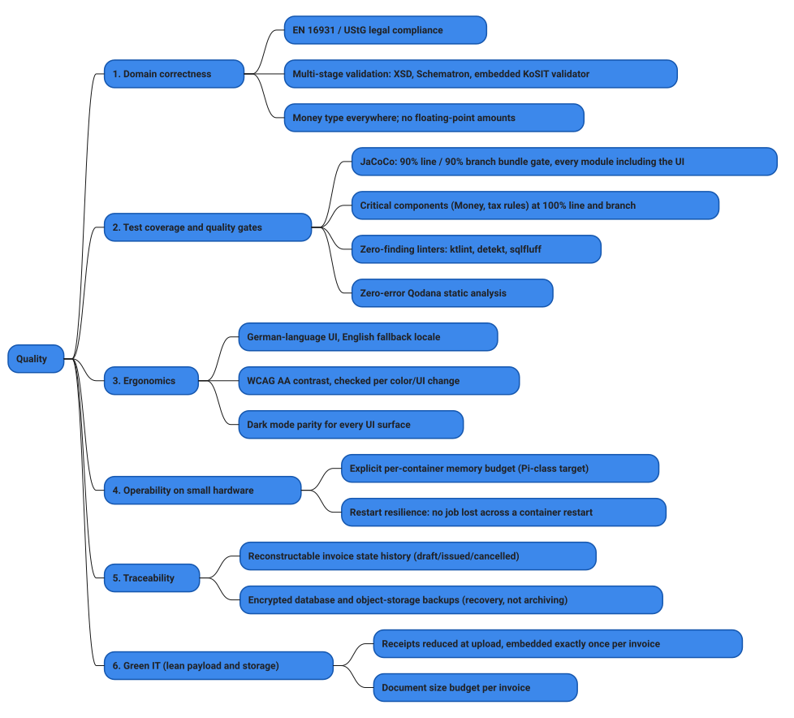
10.2. Quality Scenarios
The table below identifies each scenario by ID and states it as source → stimulus → response → measurement, so a scenario can be checked, not just read.
| ID | Quality Goal | Source | Stimulus | Response | Measurement |
|---|---|---|---|---|---|
QS-1 |
Domain correctness |
User |
An invoice is transitioned from draft to issued. |
The system runs XSD schema validation, then EN 16931 Schematron rules, then the embedded
KoSIT validator against the generated X-Rechnung/ZUGFeRD XML (Mustang Project |
The invoice cannot reach |
QS-2 |
Domain correctness |
User |
A user assigns receipts to a position or to the invoice as a whole. |
The system judges the invoice’s whole resulting receipt set against the shared document size
budget ( |
No invoice can be saved with more than 19 distinct receipts (deduplicated by object key); document
generation ( |
QS-3 |
Green IT / lean payload |
User |
An invoice carries 19 receipts, each normalized at upload to
|
Each receipt is embedded exactly once, as Base64 inside the ZUGFeRD XML (ADR-032); no rasterized annex or PDF/A-3 attachment duplicates it. |
Target, not a production measurement: the produced container stays ≤ 6 MiB for typical
receipts, on the assumption that reduced receipts land well below the 768 KiB target. The only
verified bound is the hard one: 19 receipts at exactly 768 KiB export to ≤ 20 MiB
( |
QS-4 |
Green IT / lean payload |
User |
A user uploads a 300 dpi scanned receipt above |
|
Target: upload-time reduction cuts the stored size by ≥ 80% versus the original 300 dpi scan
for the common case (a single-page photo/scan receipt). Evidence so far is synthetic only —
|
QS-5 |
Test coverage and quality gates |
Developer or agent |
A developer or agent runs |
JaCoCo computes line and branch coverage per module against the configured |
The build fails below |
QS-6 |
UI system correctness (full-stack) — planned |
Developer or agent |
The Playwright E2E suite ( |
Every spec exercises the browser → Vaadin → application → NATS → |
Target: the full suite green with zero |
QS-7 |
Domain correctness — concurrent editing |
Users |
Two users load the same invoice position, both edit it, and both save; separately, the
|
The invoice aggregate’s |
No lost update is possible: the second saver’s rejected write never reaches the database, proven
per entity by the coverage table in Concurrent Editing; the 100-thread
storm’s deadlock-delta invariant shows |
QS-8 |
Ergonomics / accessibility |
Developer |
A developer changes UI color tokens or adds a new UI surface. |
The change is checked against the Google Material color palette convention (no brown), in both light and dark theme, before merge. |
Text and interactive-element contrast meets the WCAG AA target (≥ 4.5:1 for normal text);
the theme stylesheet ( |
QS-9 |
Restart resilience |
Operator (platform restart) |
The |
|
No job is silently lost: every |
QS-10 |
Restart resilience (daily maintenance) |
Operator (platform restart) |
The interactive application is restarted at an arbitrary point in the 24-hour interval of
|
Each scheduler checks the most recent |
A restart never re-runs a daily task within minutes of its last real run, and never silently skips a day it missed while the process was down. |
QS-11 |
Backup / restore |
Operator (cron schedule) |
The scheduled (cron-driven) or manually invoked |
PostgreSQL (primary, plus Authentik if present) is dumped and the entire RustFS bucket (all
years) is archived; the combined archive is encrypted with |
|
QS-12 |
Operability on small hardware — evening power-off |
DevOps |
DevOps switches the server off in the evening while a print job is |
Containers stop within their grace period; on start the worker catches up: pending jobs are
re-published immediately, overdue daily tasks run once, and the stale in-flight job is
redelivered or ends |
Within 60 s of start every |
QS-13 |
Operability on small hardware — idle footprint |
Operator (idle system) |
The stack runs for 10 minutes with no user activity and no pending job. |
The worker issues only its minute-scale safety-net queries and no maintenance-status rows are
written; the browser side still polls every open invoice list, print-job list, and detail view at
its fixed |
Hibernate query metrics show at most 3 job-table queries per 5 minutes in the worker; the
|
QS-14 |
Responsiveness under bulk load |
Office Manager |
Issues an invoice and opens its e-mail editor while a bulk of other document jobs is queued. |
The interactive document runs in its own lane (subject |
E2E |
11. Risks and Technical Debt
Known risks and open technical debt, surveyed from the program READMEs and specifications, the decision records in Architecture Decisions, and the code itself (re-checked 2026-10-02; states only, individual task files are not enumerated here).
11.1. Risks
| ID | Title | Description | Probability / Priority | Impact | Mitigation |
|---|---|---|---|---|---|
R-1 |
Targeted fault tolerance only |
|
Low |
A transient failure in a call outside those seams is not retried at the infrastructure level; it surfaces as a failed step in whatever domain-level flow triggered it. |
Deliberate. The document-generation pipeline is covered twice — the bulkhead sized against
|
R-2 |
Prototype / not-production-ready status |
The project is explicitly declared a research/prototype in the repository README: feature-complete for the core invoicing flow, but not production-ready, provided as-is without warranty. |
High |
Adopters cannot assume a support commitment, an SLA, or that every edge case is handled; quality is asserted through gates, not through field-proven operational history. |
Automated quality gates (90/90 coverage default, zero-finding linters, zero-error SonarQube, passing Gitleaks/Trivy security scans) are the primary risk-reduction lever in lieu of a formal hardening or production-readiness program. The disclaimer is kept explicit rather than implied, so expectations are set correctly. |
R-3 |
Market: comparable products and projects |
Other projects and vendors bring similar e-invoicing products to market — the German B2B e-invoicing mandate creates the same demand for every provider, from open-source tools to established accounting suites adding X-Rechnung/ZUGFeRD output. |
Medium |
The window in which a self-hosted, single-operator solution for freelancers, engineering offices, specialty craft businesses and SMEs is distinctive may close; adopters may prefer a product with a larger ecosystem, hosted operation or an existing accounting integration. |
Differentiation is deliberate and documented: data stays on the operator’s own hardware (Architecture Constraints), small-budget hardware is a first-class target (ADR-020), the compliance gate and the number journal are verifiable rather than asserted, and the license keeps the concept open. The market is watched, not modelled; no feature is built solely to match a competitor. |
R-4 |
Shared native services on one host |
On the production-style Ubuntu server, PostgreSQL, RustFS and Caddy run natively once and are shared by every instance (prod, dev, demo); see Deployment View. |
Low |
A maintenance error or an upgrade of one shared service affects all instances at once; a runaway dev or demo workload competes with prod for the same database cluster. |
One database, role trio and bucket per instance keep the data separate; the instance overlay never starts a second Postgres or RustFS; backups run per instance. A dedicated host per environment remains the escalation path when isolation matters more than footprint. |
R-5 |
X-Rechnung / ZUGFeRD standards maintenance |
EN 16931 semantic rules, the KoSIT validator, and country-specific extensions (e.g. BR-FR-CTC)
evolve independently of this project. Validation is provided by pinned third-party libraries:
Mustang Project |
Medium |
A missed upstream update can let a since-invalidated invoice structure pass local validation, or an upstream rule tightening can reject previously valid invoices without a corresponding local change. |
Dependency versions are pinned explicitly with rationale comments ( |
R-6 |
Single-person operations |
The project is specified and reviewed by a single Product Owner working with AI coding agents under a spec-then-delegate workflow (see Organizational Constraints in Architecture Constraints); there is no second human reviewer besides the automated gates. |
High |
Bus factor of one for architectural sign-off; agent-produced changes are checked by automated gates plus a single human review pass rather than a team review process. |
Heavy reliance on automated enforcement (linters, SonarQube, Gitleaks/Trivy, coverage gates) and on written decision records (ADRs, architecture decisions) to substitute for a second reviewer. This is a deliberate, documented trade-off of the project’s operating model, not an oversight. |
R-7 |
Browser end-to-end tests (Playwright) — planned |
The idea: a real browser drives the whole chain — Vaadin UI, application, NATS, renderer, object
storage — against the dev instance on the server, from the Mac through a tunnel or on the server
itself, with one scenario per use case (happy path plus edge cases) and a UI-surface versus
test-surface comparison that shows which screens have no scenario yet. The suite lives in
|
Medium |
Until the suite runs, no automated check confirms the full browser-to-object-storage chain; the unit, integration and Karibu component tests cover the layers separately. |
First verified run against the dev instance, then the suite joins the acceptance gates; the
remaining scenario gaps close program by program (dev-server offload specification,
|
R-8 |
Kotlin daemon / containerized build fragility |
Under host memory pressure, the Kotlin compiler daemon can silently emit a partial compile — a module reports success but is missing part of its classes — which then surfaces as a confusing failure in an unrelated, later module. Disabling the daemon outright is not a fix; it is documented as a cause of this failure mode, not a cure. |
Medium |
Intermittent, hard-to-diagnose build failures, worse when multiple agent sessions and Testcontainers-heavy test phases compete for the same host resources. |
Mitigated by an in-process compiler execution strategy for containerized runs, a sentinel-class
compile-integrity check that fails fast with a clear diagnosis, a machine-enforced build mutex (a
lock directory, since |
R-9 |
No defined recovery targets; off-site copy optional |
No recovery point or recovery time objective is defined. The off-site copy of a backup (external SSD) is optional, and a regular restore test is not part of the routine. |
Medium |
On a single host, a disk failure, theft or fire can lose all data written since the last backup that left the host. |
Open, product-owner decision. Proposal: define the recovery point and recovery time targets, make an off-site copy mandatory, and test a restore periodically. |
R-10 |
Greenfield baseline ends with the first productive instance |
The schema exists as one baseline migration and one seed migration without upgrade scripts (see Database Baselines: What Runs When). This holds only while no instance has data that must survive an upgrade. |
High |
Once a real instance holds invoices, a schema change without a tested migration path would lose or corrupt data. |
Open. A migration strategy must exist before the first productive installation. |
R-11 |
Operator database writes can change finalised invoices |
The operator may write to the database directly (see Manual Database Writes), including to finalised invoices. The audit trigger records each change, but the operator sets the timestamp ( |
Medium |
A finalised invoice can be altered, and the recorded time of the change can be wrong or false. |
Open. Proposal: a database-level write lock for finalised invoices and a plausibility check of |
R-12 |
Restoring an older backup can reuse invoice numbers |
The number counters and the number journal live in the same database as the invoices, so a restore of an older backup rolls them back together. Numbers already sent to customers after that backup could be issued a second time. The journal self-check and the comparison with sent invoices run inside the restored data and do not see this; only a seal recorded outside the system (see The Number Journal) would show the older chain head. |
Medium |
Duplicate invoice numbers after a restore. |
Open. After every restore, compare the journal head with the last externally recorded seal and with the numbers already sent, before issuing new invoices; a documented restore procedure should state this step. |
R-13 |
Interactive documents wait behind bulk jobs |
Document jobs a user waits for (send, print, credit note issued from the UI) run in an interactive lane: own subject |
Medium |
Backlog no longer delays interactive documents on the queue; the remaining delay comes from CPU contention on the xpdf host and the shared results subject. |
Mitigated: separate subject, consumer, dispatch bulkhead and fast-path executor for the interactive lane (QS-14). The pending state is still shown instead of an error if the limit is exceeded. Open: load test on the test host at wave close. |
11.2. Technical Debt
| ID | Title | Description | Probability / Priority | Impact | Mitigation |
|---|---|---|---|---|---|
TD-1 |
Manual accessibility walkthrough outstanding |
A full manual accessibility walkthrough of the application has not yet been performed. |
Medium |
Accessibility defects that automated checks cannot detect may remain unnoticed. |
Per-change contrast checks (WCAG AA) and automated UI-logic assertions exist; the manual walkthrough is the open item. |
TD-2 |
No structured logging, tracing or alerting |
|
Medium |
Failures such as a full disk, a failed backup or an expiring certificate are noticed only when someone looks. |
Open. Minimal alerting for disk space, failed backup and certificate expiry is sufficient; full tracing is not needed at this size. |
|
Note
|
Backup/restore is not tracked here: it is a deliberate architecture decision (PO,
2026-09-14), not a deferred feature — backups run exclusively through DevOps and
little-trotter-admin-tools / little-trotter-admin (Phase 1 shell automation until Q4/2027, Phase 2 lt CLI
suite from Q4/2027, see Operations and Admin Tooling),
and no in-app backup UI is planned.
|
12. Glossary
German legal and domain terms are kept in German (not translated) and explained in English alongside their official German designations below, per project convention. Official foreign-language VAT-ID designations are kept in their own language, never translated to a German or English equivalent. Always spelled "Factur-X" — never "Factor-X".
|
Note
|
Notice on AI-Assisted Documentation and Synthetic Test Data
|
12.1. Domain & E-Invoicing Standards
| Term | Definition, Architectural Intent & Context |
|---|---|
EN 16931 |
European standard for electronic invoice data modeling: Defines the core semantic business terms (BT-Codes) independent of serialization formats, implemented via CII (Cross Industry Invoice) or UBL (Universal Business Language). |
ZUGFeRD |
German hybrid e-invoicing specification (FeRD): Integrates human-readable PDF/A-3b presentation with embedded, machine-readable EN 16931 CII XML. |
X-Rechnung |
German national standard for structured XML e-invoices in public sector procurement (B2G), executing EN 16931 business rules via Schematron. |
Factur-X |
Franco-German hybrid e-invoicing format (PDF/A-3b with embedded EN 16931 XML), technically identical to ZUGFeRD 2.x. Official mandatory spelling: Factur-X. |
BT Number |
Unique business term identifier in the EN 16931 semantic model (e.g. BT-1 Invoice number, BT-10 Buyer reference, BT-25 Preceding invoice reference). |
KoSIT Validator |
The authoritative Schematron-based reference validator from the German Coordination Office for IT Standards, verifying XML invoices against EN 16931 and national business rules. |
veraPDF |
Open-source PDF/A conformance validator (ISO 19005-3) executed during document generation to ensure strict PDF/A-3b container compliance. |
Invoice Types (UNTDID 1001) |
Standard UNTDID 1001 document codes: |
Invoice Lifecycle States |
State progression: |
Document Size Budget |
Strict total payload budget for e-invoice files (e.g. 20 MiB limit including up to 19 attached receipts normalized to 768 KiB plus 1 MiB document reserve). |
Money Value Object |
Dedicated domain value object encapsulating monetary scale, currency, and rounding semantics, avoiding IEEE-754 precision issues and raw floating-point arithmetic. |
Finalization Gate |
Architectural validation barrier blocking transition to |
12.2. Architecture & Technical Terminology
| Term | Definition, Architectural Intent & Context |
|---|---|
Aggregate Root |
The primary transactional gatekeeper of a DDD aggregate (Eric Evans): all external mutations, invariant enforcement, and repository access must exclusively pass through this root entity. |
Command |
An explicit, immutable request object representing the intent to change system state (Command-Query-Separation), completely decoupled from persistence entities or presentation models. |
CommandEntryPoint |
The architectural boundary marker for write operations: represented by inbound use-case ports to enforce a strict boundary between state-mutating commands and read-only queries. |
CommandResult |
The immutable response value returned by a command execution, conveying execution status and outcome identifiers without exposing internal domain entities or mutable state. |
Composite Interface (Prohibited) |
An architectural anti-pattern that aggregates disparate interfaces solely via inheritance, creating broad coupled dependencies and violating the Interface Segregation Principle. Automatically verified and enforced via architectural unit tests. |
Domain Event |
A past-tense, immutable record of a significant state transition within the domain (Eric Evans), published transactionally to trigger side effects across bounded contexts. |
Claim Check (Envelope Messaging) |
A decoupled messaging pattern (Hohpe & Woolf: Enterprise Integration Patterns) where large payloads are stored in an external data store, while lightweight messages containing reference pointers and metadata are transmitted across the message bus. |
Fat Interface |
An anti-pattern violating the Interface Segregation Principle (Robert C. Martin): interfaces bloated with unrelated methods, forcing clients to depend on operations they never call. |
Input Port (Role Interface) |
A client-focused role interface in the application inbound layer (Alistair Cockburn: Ports & Adapters; Martin Fowler: Role Interface), defining the exact contract required by incoming adapters (UI, REST, events) to reach the core domain. |
Modulith |
A modular monolith architecture: a single deployable artifact whose internal subsystem and package boundaries are strictly defined and statically verified against architectural drift. |
Outbox Pattern (Transactional Outbox) |
A resilient messaging pattern (Chris Richardson) that guarantees at-least-once event delivery by atomically persisting outgoing messages into a dedicated database table within the business transaction. |
Role Interface |
An interface designed specifically around the tailored needs of a consumer (Martin Fowler) rather than the exhaustive surface of a service implementation. |
Sealed Result |
A strongly typed algebraic data type (e.g., a sealed class or sum type hierarchy) representing all discrete domain and business outcomes of an operation, enforcing compile-time exhaustive evaluation. |
Self-Contained System (SCS) |
An autonomous, independently deployable subsystem with its own data storage, business logic, and UI/API surface, interacting with other systems only through minimal asynchronous contracts. |
Sweeper (Reconciliation Worker) |
A resilient background worker that periodically inspects persistent state to detect, recover, and retry stalled asynchronous jobs without relying on volatile in-memory state. |
Lean Operations Rollout |
A staged operational lifecycle model: establishing an operational baseline with core automation and standardized infrastructure, scaling into a unified management and observability plane upon satisfying strict reliability gates. |
Dispatch History (Versandverlauf) |
Append-only audit journal within the mail subsystem ( |
Signed Archive Package ( |
A deterministic, byte-reproducible archive container ( |
13. License and Attribution
This documentation follows the repository’s licensing (LICENSE, NOTICE, root README.md):
-
Software — Apache License, Version 2.0. Code excerpts in this documentation are covered by the same license as the code they come from.
-
Concept, design and this documentation — the overall concept, design, layout and core idea, and with them the architecture documentation and canvases that describe them, are provided under the Creative Commons Attribution 4.0 International License (CC BY 4.0). When the concept or layout is reused in other applications or products, including commercial use, a clearly visible attribution to the original project must be maintained: "Core idea derived from the LittleTrotter X-Rechnung project (https://github.com/little-trotter/invoice) under CC BY 4.0."
-
Third-party notices, including the bundled fonts, are listed in the repository
NOTICEfile.
14. About This Documentation
Generated with docToolchain using the arc42 template.
| Item | Value |
|---|---|
Build Tool |
docToolchain |
Template |
|
arc42 Overview |
|
arc42 Inception Canvas |
|
arc42 Communication Canvas |
|
Inception Canvas |
Architecture Inception Canvas — one-page architecture overview |
Communication Canvas |
Architecture Communication Canvas — one-page communication and decision view |
Inception Canvas (draw.io) |
architecture-inception-canvas.drawio — generated from the AsciiDoc canvas by the build; the AsciiDoc page is the source |
Communication Canvas (draw.io) |
architecture-communication-canvas.drawio — generated from the AsciiDoc canvas by the build; the AsciiDoc page is the source |
User Guide |
Praxishandbuch — comprehensive user guide with workflows, compliance rules, and UI screenshots |
Format |
AsciiDoc |
Generated |
2026-10-10 |
Version |
0.9.35-SNAPSHOT |
License |
Software Apache-2.0; concept, design and documentation CC BY 4.0 (see above) |
Appendix A: C4 Reference
Visual guide to C4 Model elements and their official notation, following C4 Model standards.
Official C4 Notation Diagram
The C4 model defines four levels of abstraction — Context, Container, Component, and Code — each with a specific shape, color, and purpose, as defined by Simon Brown. The three levels this documentation actually models are cross-referenced here rather than repeated: system context in System Scope and Context, containers and components in Building Block View.
The notation legends below show the element types and relationship styles used across this documentation’s diagrams.
System Context Notation
The System Context diagram shows the high-level scope of the system and its external actors.
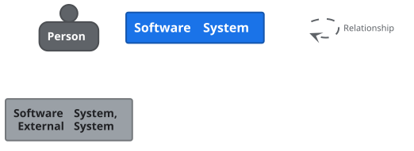
Container and Component Notation
Container and Component diagrams build on System Context notation by adding internal structure.
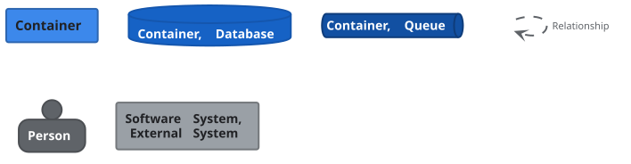
Deployment Notation
The Deployment diagram extends these notations to show how containers are mapped to infrastructure nodes.
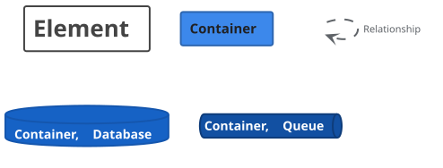
Element Reference
| Element | Purpose | Color Code |
|---|---|---|
Person |
Users, actors, stakeholders |
5F6368 |
Software System |
High-level systems |
1A73E8 |
External System |
Third-party systems |
9AA0A6 |
Container |
Deployable units, applications |
3C88EB |
Database |
Data storage |
1662C5 |
Component |
Code groupings, modules |
81B2F2 |
Deployment Node |
Infrastructure: VMs, containers, machines |
border only (white fill) |
Views
| View | Name | Audience | Focus |
|---|---|---|---|
1 |
System Context |
Non-technical stakeholders |
Business scope |
2 |
Container |
Technical stakeholders |
Technology choices |
3 |
Component |
Software architects |
Code organization |
4 |
Code |
Developers |
Implementation details |
Deployment |
Deployment |
DevOps, architects |
Infrastructure and runtime topology |
Dynamic |
Dynamic (Sequence) |
Architects, developers |
Runtime interaction flows |
The Deployment View is orthogonal to the four levels of abstraction — it maps containers onto the real infrastructure nodes (Docker containers, servers) where they run. See Deployment View.
The Dynamic View traces a specific runtime scenario (e.g. issuing an invoice) across containers and components.
References
-
C4 Model: https://c4model.com/
-
Notation Guide: https://c4model.com/diagrams/notation
-
Structurizr: https://structurizr.com/
-
arc42 Template: https://arc42.org/
Appendix B: Architecture Canvases
Direct HTML access to both architecture canvases.